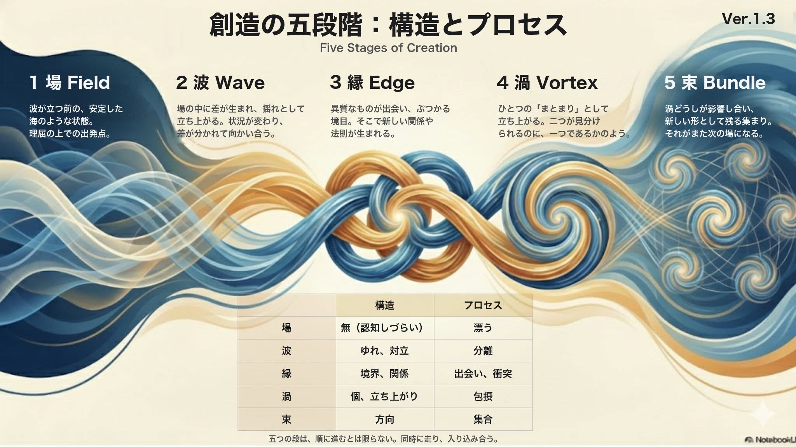

第一部
問いと、これまでの見方
何がプロジェクトを動かしているのか
この一年、物事が生まれるときの形や、人の意識を探ってきたあとに、一つの問いが残りました。
事業やプロジェクトは、ふつう構想から語られます。けれど振り返ると、構想が言葉になる前から、何かが動き始めていたように感じることがあります。作っている本人にも、自分が作っているのか、周りから生まれてきたのか、分からないことがあります。このページでは、人やプロジェクトを動かしているものを駆動源と呼び、それが何かを探します。
詳しく — 構想が言葉になる前から、動き始めているもの
構想が言葉になる前の動きには、いくつかの形があります。一人の中で、準備がもう始まっていたかのように、あとから点と点がつながることがあります。社会の動きや流行のように、場そのものが揺らいでいることも多く、その揺らぎに乗って、ときには逆を張って、動き出すこともあります。人が引き寄せられて集まり、何かが始まるのは、その中の一つの場合です。
デザインや構想の成果について、pjdhiro は次のように感じています。
pjdhiro の体験：…私が作ろうとしているようで、場が渦を巻くように生まれてくる。私なのか環境なのかがわからないほど駆動源を複数感じる。因果なのか。相関なのか。
詳しく — 経営学が書いてきた道筋と、まだ分かっていないこと
経営学やプロジェクトマネジメントは、構想が言葉になってからの道筋を、細かく書いてきました。目的を定め、計画を立て、人や資源を集め、進み具合を確かめて直していく。こうした記述は、多くの場面でそのまま効きます。どの考え方が何を駆動源にしてきたかは、次の章「経営学は、何を駆動源と見てきたか」に一覧にしました。
構想そのものについては、なぜ湧くのか、どこで、誰に、いつ、何から、どのように湧くのか、という 5W1H が、まだよく分かっていません。事業の機会が発見されるのかつくられるのかは、起業研究でも議論が続いています（Shane と Venkataraman は 2000 年に機会の発見・評価・活用を軸に分野を枠づけ、Alvarez と Barney は 2007 年に発見と創造の二つの見方を並べました）。
構想の手前で、準備が始まっていたかのように点がつながったり、場の揺らぎに動かされたりすることは、振り返れば多くの人が経験しています。Love駆動開発が見ようとしているのは、それが起きる背後で、人にはどうしようもなく働いている法則のようなものです。いまは、そのうちの「なぜ」に、駆動源という切り口から近づいています。
出典：Shane & Venkataraman (2000) "The promise of entrepreneurship as a field of research", Academy of Management Review 25(1):217（リヴァプール大学のサーバーに置かれた誌面の写しで本文照合済。分野の定義 p.218）／Alvarez & Barney (2007) "Discovery and creation: alternative theories of entrepreneurial action", Strategic Entrepreneurship Journal 1(1–2):11（研究団体 effectuation.org のサイトに置かれた誌面の写しで本文照合済。発見の理論と創造の理論 p.11）。
点と点は、振り返ってつながるスティーブ・ジョブズのスピーチ
pjdhiro は、一人の中で点がつながっていくことを、スティーブ・ジョブズがスタンフォード大学の卒業式のスピーチ（2005 年）で話した、点と点は先を見てつなぐことはできず、振り返ってつなぐしかない、という話に近いと見ています。
振り返ってつながる点と点に、pjdhiro は次のたとえを添えています。
pjdhiro のたとえ：北極星に向かって、取り巻くように、それは Love と呼びたいものの一つの喩えです。
経営学は、何を駆動源と見てきたか
Love駆動開発を説明するとき、pjdhiro は、次の問いに答えることを、説明の芯に置いてきました。
経営学は、市場と競争、会社の資源、目標と計画、行動からの学び、組織の文化、人の意欲など、いろいろなところを駆動源と見てきました。どの考え方も、合う場面ではよく効きます。けれど重ねてみると、群盲象のたとえのように、どれも象の一部に確かに触れているのに、まだ何かが欠けているように感じます。外から内へ下りていくと、最後は起業家の心に行き着きます。Love駆動開発が追っているのは、その心のさらに背後で、心を動かしているものです。
詳しく — 何を駆動源と見るかで、七つに分ける
下の表は、代表的な考え方を、何を駆動源と見ているかで七つに分けたものです。外の環境から人の内側への順に並べ、右端の列に、それぞれがよく効く状況を書きました。
| 駆動源 | 代表する考え方 | 効果的な状況 |
|---|---|---|
| 外部環境（市場、競争、顧客、利害関係者、より広い環境） | 株主価値の最大化、競争戦略、破壊的イノベーション、マーケティング（コトラー）、ステークホルダー理論、環境学派 | 外から来る力が、人の引き寄せられていく向きと揃っている限りでの正解 |
| 内部の資源 | 資源ベース理論（VRIO） | 資源を生かす人が引き寄せられている限りでの正解 |
| 先に決めた到達点（目標、計画、効率） | 目標管理（MBO）、OKR、経営計画、科学的管理法、リーン生産 | 到達点がどこから湧いたかを問わない限りでの正解 |
| 行為と学習 | リーン・スタートアップ、リアル・オプション、創発戦略 | 何を確かめ、どこへ動くかが湧き続けている限りでの正解 |
| 集団の共有（規範、文化、存在意義） | 企業倫理、コンプライアンス、CSR、組織文化、知識創造理論（野中）、パーパス経営 | 集まりが開いていて、共有が湧き続けている限りでの正解 |
| 人の内側（共感、意欲、判断） | デザイン思考、動機づけ理論、合理的選択 | 共感や意欲がどこから湧くかを問わない限りでの正解 |
| 起業家の心（ビジョン、欲、本能） | アントレプレナー学派、エフェクチュエーション | その心が何に動かされているかを問わない限りでの正解 |
一人が触れたところだけを見て、そこに象の全体があると思うと、言葉は中身の抜けたバズワードになっていきます。Love駆動開発がしようとしているのは、まだ触れられていないところに触れてみることです。
起業家の心では、ビジョンも、欲も、本能も、駆動源として確かに働いています。理論を何十年も更新してきたコトラーや野中郁次郎の歩みも、重心が、人の思いや価値観の側へ寄ってきたように見えます。
表の考え方を一つずつ、よく効く場面と、正解として広げたときに起きやすい取り違えで見た表は、経営学の考え方は、どこまで効くかに書いています。
出典：Mintzberg, Ahlstrand & Lampel (1998) Strategy Safari（独訳 Strategy Safari. Der Wegweiser durch den Dschungel des strategischen Managements, 訳 J. T. A. Wegberg, FinanzBuch Verlag, 2012 の、出版社の試し読みの Wayback の記録（2019 年 10 月 20 日）で本文照合済（訳）。冒頭のサックスの詩 pp.15–17）／Saxe "The Blind Men and the Elephant"（Wikisource にあるパブリックドメインの The Poems of John Godfrey Saxe（1872 年）の版で本文照合済。スキャンの 279–281 枚目）／Kotler, Kartajaya & Setiawan (2010) Marketing 3.0（出版社 Wiley の試し読みで本文照合済。第 1 章 p.4）・(2021) Marketing 5.0（出版社 Wiley の試し読みで本文照合済。第 1 章 pp.3・5）／野中・勝見 (2020)『共感経営』（版元の親会社の日経BP が日経BOOKプラスで 2023 年 1 月 20 日に公開した「はじめに」で本文照合済）。表の分け方と「効果的な状況」の列は、Claude による整理です。
群盲象を評す
戦略の見方は一つではありません。ミンツバーグたちは『戦略サファリ』（1998 年）の冒頭に、サックスの詩「群盲象を評す」を置きました。目の見えない人たちが象に触れ、鼻に触れた人は蛇、膝に触れた人は木のようだと言う詩です。みな一部は正しく、みな全体を取り違えていた、と結ばれます。（参考：ミンツバーグの学派を、駆動源と創造の流れで見る）
Love駆動開発は、何を駆動源と見るのか
経営学の考え方は、それぞれ何かを駆動源と見てきました。では、Love駆動開発は、それらと何が違うのでしょうか。
pjdhiro の見方：これまでのプロジェクトの概念は、目的駆動開発、意欲駆動開発、構想駆動開発のような括られ方でした。私は、それらがなぜ発生するのか、もう一段探してみたのだと思います。
Love駆動開発の駆動源は、Love と呼びたいものです。このページでは、Love を、恋愛に限らず、ひとまず二つの面で置きます。人や物事が引き寄せられるように感じる力の面と、人がその中にいる場の性質の面です。pjdhiro は、両方とも合っていて、前の章の詩で象に触れた人たちがそれぞれ言ったことのように、どちらも一面だと見ています。たとえは、重力と時空の関係です。重力は、物を引き寄せる力として感じられ、一般相対性理論では、時空の歪みという場の性質としても書かれます（「Love は、重力に似ていないか」の章）。経営学の表の駆動源は、市場や目標や意欲や起業家の心のように、人が目で見て言葉で話せる大きさのものでした。Love と呼びたいものは、その背後で、それらを動かしているものです。Love駆動開発は、この駆動源と、それが生む構造やプロセスのように、プロジェクトという現象の裏側で見落とされているものを、pjdhiro がまとめてそう呼びたい名前です。
詳しく — 構想が言葉になる前から、背後で動いているもの
言葉になった構想や共通の意図がまだ無いのに、何かが生まれ始める。一人の中でも、人の集まりでも、社会の流れの中でも、そうした動きは、構想が言葉になるより前から起きています。
第五部の「Love と呼びたいものは、どういう面を持つか」の章では、この二つの面を、ほかの面と並べて見ます。
詳しく — 見えないものを、どう指し示すか
「Love です」と答えただけでは、ほとんど何も伝わりません。構想の手前にあるものは、直接は観えません。愛という言葉も、恋や好意のような、認知しやすい一面で読まれやすい言葉です。
そこでこのページは、重力を書いてきた物理と同じ書き方をします。Love と呼びたいものに動かされている現象と、それを書いた言葉を積み重ねます。一つ一つは、一つの円のように、ある範囲を囲みます。いくつもの円を重ねると、どれにも共通する重なり、ベン図で言えば、すべての円の AND の部分が残ります。その重なりが、Love と呼びたいもののある場所を示します。
このページが重ねていく円は、おもに四つの探究です。この一年、pjdhiro は、「創造とは」「意識とは」「欠損駆動思考」と、読み物「愛は、重力に似ていないか」を続けてきました。どれも、重力と同じように、それぞれ別の側から、動かされているものの動き方を書いてきた探究です。このページでは、これを四つの探究と呼び、話の流れの中で、必要なところで一つずつ呼び出します。
指月のたとえ
pjdhiro は、明快に表現すればするほど、一面的に誤解されると考えています。仏教の指月のたとえ（月を指し示す指は、月そのものではない。『楞厳経』巻二・『大智度論』巻九）のように、このページの言葉や仮説は、Love と呼びたいものそのものではなく、それを指す指です。
詳しく — 重力は、動かされているもので書かれてきた
見えないものを書いてきた前例は、物理にあります。重力そのものを見た人はいません。それでも、落ちるりんごと回る月が同じ法則に従うことや、銀河の外側のガスや星の回り方から光では見えない質量があることが、推し量られてきました。重力は、それに動かされているものの動き方で書かれてきました。ブラックホールの画像（2019 年公表）にも、中心そのものは写っていません。写っているのは、暗い影と、それを縁取る光の輪です。中心がどこにあるかは、まわりの光で分かります。
出典：Rubin & Ford (1970) ApJ 159:379（NASA ADS が公開している誌面の走査で本文照合済。要旨 p.379、外側で平らな回転曲線 p.392）／Rubin, Ford & Thonnard (1980) ApJ 238:471（銀河の回転曲線。NASA ADS が公開している誌面の走査で本文照合済。光学像の外の質量 p.471 の要旨）／Event Horizon Telescope Collaboration (2019) ApJL 875:L1（M87 の画像。arXiv 1906.11238 にある誌面の版（CC BY）で本文照合済。光の輪と中心の暗さ p.1 の要旨）／『楞厳経』巻二（大正蔵 T19 No.945、111 頁上段）・『大智度論』巻九（大正蔵 T25 No.1509、125 頁中段）（どちらも SAT 大蔵経テキストデータベースで本文照合済）。
詳しく — 構造か、視点か、原理か、プロセスか
Love駆動開発を、事業構想学のような既存の分野の中のどこに置くかを考えていたとき、pjdhiro は、この名前がそもそも何を指しているのかを問い直しました。
pjdhiro の問い：プロジェクトの構造を言ってるのか、プロジェクトを眺める視点なのか、プロジェクトがなぜ生まれ動くのかの原理のことなのか、デザインプロセスを言ってるのか。
四つの探究を並べると、どれか一つには収まりません。駆動源は、なぜ生まれ動くのかという原理に近く、重力の井戸（重力場を、質量のまわりのくぼみとして描いた絵）は、何がどこにあるかという構造に近い。場 → 波 → 縁 → 渦 → 束（「創造とは」が置く、創造の五つの段階）は、どう進むかというプロセスに近く、自分を分けていく作業（メタ認知で、自分の感情や考えを対象として観ていくこと）は、どこから眺めるかという視点に近い。
同じ一つのものを、別々の側から見たもの、と読めます。構想の手前に、そして構想が言葉になったあとも、その下で動き続けている見えないものに、別々の側から触れてきた探究です。
このページは、何を、どのように書くか
Love駆動開発と呼びたい現象を、pjdhiro はこれまで何度も経験してきました。その経験から、このページは、プロジェクトに対する視点と構えとやり方を言葉にします。扱うのは、プロジェクトの駆動源です。プロジェクトは事業に限らず、人生や家族も入ります。そうした人の営みは社会学が広く対象としてきた領域で、経営学や経済学はその一部を扱ってきました。このページは、その領域を、駆動源という切り口から、心理学の視点で読みます。その際、物理学（重力と量子論）との構造の類似と、神経現象学（体験の記述と、神経の働きの知見を突き合わせる見方）の知見を参考にします。
言い換えると、こういうことです。プロジェクトが動くとき、人は何かを思ったり感じたりしています。そのことを、神経の働きと照らして見ます。神経も、宇宙のほかのものと同じ物質でできていて、同じ物理の法則に従っています。そこで、思ったり感じたりすることの動き方を、重力や量子の振る舞いと並べてみると、似た形に見えるところがあります。このページでは、その似た形を手がかりに、見えない駆動源を類推します。
引いた知見の多くは、四つの探究が、それぞれ調べてきたものです。引いた先は、巻末の「参照の一覧」にまとめました。
このページは、東洋の思想で古くから教えられてきたことを、西洋の科学の視点で確かめていく面も持っています。pjdhiro 自身が、そのように考えてきたからです。
Love という言葉は、何を指してきたか
Love と呼びたいもの、と言っても、Love という言葉が指すものは、人や時代によって違います。Love とは何かを見ていくとき、pjdhiro は Claude に、まずこう頼みました。
日本語の「愛」や英語の love と訳されてきた言葉は、原典では別々の語でした。何として書かれているかも、心の動き、育てる心や行い、欠けているものを求める欲求、関係、世界を動かす原理や力、神そのもの、と一つではありません。何に向けたものかも、特定の一人から、すべての生きもの、神、世界の成り立ちまで、原典ごとに違います。良いものとしてだけ書かれてきたのでもなく、苦の元や、罰に値する行いの種としても書かれています。現代の辞書は、これらを一つの語の下に並べていて、Love という一つの言葉が、とても広い範囲に当てられてきたことが分かります。誰が、いつ、何を Love と呼んだかは、原典の本文に当たって、独立ページ「Love とは、どう言われてきたか」に詳しくまとめています（工事中）。仏教の流れ、西洋哲学の流れ、現代の辞書と心理学と神経科学の順です。
詳しく — 語・書かれ方・向ける先・良し悪し・辞書
ここに並ぶのは、pjdhiro 以外の人々が定義した Love です。pjdhiro が Love と呼びたいものは、第五部の「Love と呼びたいものとは」の章から見ます。
一つの語ではありませんでした。 日本語の「愛」や英語の love と訳されてきた言葉は、原典では別々の語です。初期仏教では、苦の原因とされる渇き（taṇhā）と、育てる心とされる慈（mettā）は、別の語です。ギリシャ語では、エロースはプラトン、友愛（フィリア）はアリストテレス、アガペーは新約聖書と、別々の原典で使われています。『孟子』は、愛・仁・親の三つの語を、向ける相手で使い分けています。
何として書かれているかも、一つではありません。 感情として書いたものに限りません。
| 何として | 書かれ方の例 |
|---|---|
| 心の動きや状態 | 苦のもとになる渇き（初期仏教）。外部の原因の観念を伴った喜び（スピノザ）。相手との結合を切望する状態（ハットフィールドとスプレッチャー） |
| 育てる心や行い | すべての生きものへ限りなく広げる心（慈経）。楽を与え、苦を抜く心（『大智度論』）。言葉として外に出る行い（道元の愛語）。命じられる掟（新約聖書） |
| 欠けているものを求める欲求 | プラトン『饗宴』の、ソクラテスの問答 |
| 関係 | 互いに善を願う友愛（アリストテレス）。子の母への結びつき（ボウルビィ） |
| 世界を動かす原理や力 | 四つの根を一つに集める働き（エンペドクレス）。太陽とほかの星を動かす愛（ダンテ）。進化の様式（パース） |
| 重さ | 自分を運ぶ重さ（アウグスティヌス） |
| 神そのもの | 「神は愛である」（ヨハネの手紙一） |
| 成分の組み合わせ | 親密・情熱・決定／コミットメントの三つ（スタンバーグ） |
何に向けたものかも、原典ごとに違います。 特定の一人、互いに善を願う相手、近い者から順に広げた先、区切りを置かないすべての生きもの、神、人ではないもの、自分、世界の成り立ち、と並びます。
良いものとしてだけ書かれてきたのでもありません。 初期仏教の渇愛は、苦が生じる元です。法句経は、愛しいものから憂いと恐れが生じる、と書きます。ダンテは、愛を、すべての徳と、罰に値するすべての行いの、両方の種だと書きます。アウグスティヌスは、二つの愛が二つの国を作った、と書きます。
現代の辞書は、一つの語の下に、これらを並べています。 大辞泉の「愛」は、親子や兄弟のいつくしみ、特定の人をいとしいと思う心、物事を好む気持ち、個人の感情を超えて幸せを願う心、キリスト教の神のいつくしみ、仏教の貪愛、の六つに分けています。「恋愛」は、明治のはじめから love の訳語として使われた語です。心理学は、愛を、行動、状態、成分のように、測れる形に分けてきました。神経科学の研究は、恋愛をしている人の脳の活動を測っていますが、脳のどこかが愛の場所だ、とは書いていません。
第一部では、問いを立て、プロジェクトの駆動源と、Love という言葉について、これまでの見方を確かめました。この読み物は、その駆動源を、Love と呼びたいものと見ます。
Love と呼びたいものは、目では見えません。第二部では、見えない駆動源を、形の似たものから見ます。重力と、物事が生まれるときの構造です。
第二部
見えない駆動源を、似た形から見る
Love は、重力に似ていないか
見えない駆動源に、形の似たものを探すと、まず重力が浮かびます。Love も重力場のようなものと関係していそうだと見て、pjdhiro は次の仮説を置きました。
pjdhiro の仮説：Love場というloveの粒でできてるかのような波の現れる場で、Loveの場の歪みに引き寄せられるように漂っているのが宇宙や私たち。
まず、Love と呼びたいものを重力と並べます。重力場は質量のまわりで歪み、星も光も、その中で歪みに沿って進みます。中にいるものには、歪みそのものは目では見えません。このくぼみを立体にした、すり鉢のような絵を、このサイトでは重力の井戸と呼びます。一人の中で点がつながっていくのも、場の揺らぎに動かされるのも、人が集まって何かが生まれ始めるのも、その歪みの中でのことかもしれません。
同じ形の、二つの井戸
中心＝太陽。くぼみの深さ＝重力ポテンシャル
中心＝愛。くぼみの深さ＝引き寄せの強さ（比喩）
（JavaScript が動く環境では、ここに二枚の 3D の井戸が並びます。どちらも格子が中心へ向かってくぼみ、その周りを五つの点が回ります。左の中心は太陽、右の中心は愛です。「中心から見る」を押すと、くぼみの底から周りを見渡せます。）
左は重力の井戸、右は同じ形の井戸の中心に愛を置いたものです。図はドラッグで回せます。右の図はたとえです。

詳しく — 重力場と、重力の井戸
ここでは、重力を重力場として見ます。重力場は、質量のまわりで歪みます。一般相対性理論では、この歪みを時空の曲がりとして書きます。ニュートンの力学では、質量のまわりの重力場を、くぼみの深さ（重力ポテンシャル）として描くことができます。
このくぼみを立体にした絵が、重力の井戸です。絵が何を描いているか、どこまでが物理の事実で、どこからがたとえかは、重力の井戸とはにまとめました。一般相対性理論では、星も光も、その重力場の中にいて、歪みに沿って進みます。
詳しく — 見えない中心を、自分を分けて見る
ここは、三つの順に進みます。自分からは見えない中心、それを見ようとして自分を分けていくこと、分けた先で感じられるもの、です。
はじめに、pjdhiro が探していたものです。
pjdhiro の背景：場→波→縁→渦 というように、渦を巻くまでのエネルギーとして、重力や愛のような、ゼロで何もしない中心の、無のような駆動エンジンを探している。
重力の井戸の図の中で、中心は一度も動きません（中心の三つの性質）。それでも、図の中のすべての周回は、この動かない場所がつくったくぼみに沿っています。そして、井戸の底に立つと、周りのすべてが自分を中心に回って見えるのに、どちらを向いても映らない場所が一つあります。いま見ている、この中心そのものです。
中心が自分から見えないなら、それを見るには、見ている自分を分けていくことになります。
pjdhiro の見方：メタ認知とは、自分を分けていく作業でもあるはずです。止観して、自分の中を対象として指さすように観ていくと、最後に観察する私が残る。それすらも観ようとするところから、観る私と観られる私が同じになる。分けられなくなる。そこからのプロセスは、古典から量子論に変わるような、違う感覚になる。私がメタ認知を説明するとしたら、比喩として最も近いのは、電子をどこまでも細かく見ていく作業に似ていると思う。
止観がどんな作業かを、pjdhiro はプログラムの言葉でもたとえています。
pjdhiro のたとえ：瞑想は C 言語の bzero() 関数、memset(0) のようなものです。変化があるかないかを識別しやすくする。雑念のようなものが立てる 1 をポーリングするような。止観はそんな感じです。
bzero() と memset(0) は、メモリーの領域をすべて 0 で埋める関数です。ポーリングは、状態が変わったかどうかを、繰り返し見に行くやり方です。何を見に行くのかについて、pjdhiro は続けてこう話しています。
pjdhiro の見方：湧いた思いや感情や思考、認知した音や映像など、キャッチしてはオブジェクトとして対象化していく作業です。認知した音や映像などの感覚的な刺激は対象化というよりは、キャッチした私を眺める感じですね。そのまま感じ、感じてる私がいることを確認する。オブジェクト化するとか難しいことではなく、心で指さしていく。
分けていった先で、層が変わります。構想し、計画し、決めている私は、古典の記述で書けます。その私を分けていくと、観る私と観られる私が分けられなくなり、そこから先は違う感覚になる。その先で感じられるものを、pjdhiro は次のように書きます。
pjdhiro の像：……観察し、される者だけになった後、その二つが融合する安定感よりは、見るしかできない私の頭頂の先にへその緒で接続された母の存在が安定をもたらすような落ち着きの感覚が近い。……限りのなさは、その先が見えないという感覚。表現として臍の緒と母のたとえにしたが、そもそも母がいることを胎児は認識していないでしょう。そのように、場や大海は何かわからない。母が摂取する栄養や酸素などの循環を含めれば、その先は宇宙すべてと接続している。
先が見えないのに、安定する。確かめて得る安心とは別に、確かめずにつながっている安心もあります。この流れの一次情報は、姉妹読み物「愛は、重力に似ていないか」の2 章から4 章です。
創造は、どんな形をしているのか
第二部は、見えない駆動源を、物事が生まれるときの構造から見ます。その構造を書いているのが、探究の一つ「創造とは」です。この読み物の後半まで、創造の形は基礎の視点として続くので、先に概要を置きます。
「創造とは」は、創造が、場 → 波 → 縁 → 渦 → 束 と進むと置いています。「創造とは」のトップページは、五段階をこう置いています。「場は創造が生まれる環境と条件、波は探索と揺らぎの過程、縁は異質な要素が出会う境界、渦は要素が結合し変容する核心的段階、束は新たな形式として統合される完成です」。
pjdhiro は、五段階を海のたとえでも言い換えています。海 → 波 → 波間 → 渦 → 海流 の並びで、場は海、波は波、縁は波間、渦は渦、束は海流にあたります（「創造とは」の五段階の表の「海のたとえ」の列）。縁の波間は異質なものが出会う境目に、束の海流は新しい形として残って次の場になる集まりに、それぞれ当たります。
場が現れ、波が立ち、異なるものが縁で出会い、渦として結びつき、束として新しい形になる。この形と似たものが、30 の学問領域で報告されています。
ここから先、「場」という言葉は、創造の五段階の場も、物理の場も、同じ言葉で呼びます。渦が巻く、その下に広がっているもののことです。


pjdhiro は、この創造の形を、大海と波の像にいちばん近いと見ています。また、渦を、場の揺らぎそのものが形になったもので、場から切り離して取り出せないものと見ています。
似た形が報告されている例を、五つの領域から挙げます。原典が五段階で書いているわけではなく、論の記述を五段階の順に並べたのは Claude の読みです。
- 物理学（散逸構造。ベナール対流を例に）：場は、下から温められた液体の層。平均の状態から外れる小さなゆらぎが、いつも起きては打ち消されている。波は、温度の勾配がある値を越えると、一部のゆらぎが育つこと。縁は、浮力と、それを抑える粘性・熱伝導との競り合い。越えたあとは、いくつもの乱れの型のうち、いちばん速く育つ型が優勢になる。渦は、育ったゆらぎが、外とのエネルギーのやりとりで支えられた秩序になり、層が細胞に分かれること。束は、ばらばらの多角形が、ゆっくり正六角形の網にそろうこと。
- 生化学（生命科学と化学の二つ）：
- 受精（生命科学。マウスの受精卵の研究から）：場は、受精の起きる卵の中。波は、雌と雄に分かれた二つの配偶子、卵と精子がそれぞれ持ってくる、半数ずつのゲノム（母方と父方）。縁は、核の膜が崩れて最初の分裂に入るときに、二つのゲノムの染色体が初めて出会うこと。渦は、二つのゲノムのまわりに紡錘体が一つずつでき、並んで一つの分裂を進めながら、二つのゲノムが混ざらずに見分けられるままでいること。束は、二つの細胞の胚になり、続く分裂で二つのゲノムが混ざって、新しい個体のゲノムになっていくこと。
- 化学（BZ 反応）：場は、一つの容器の溶液（臭素酸イオンと有機酸と触媒が溶けている）。波は、二つの物質が中間体を取り合うこと。縁は、一方が臨界の濃度を下回ると別の過程に切り替わり、その過程が間接に元へ戻すこと。渦は、どちらの過程も勝ちきらず、行き来が安定した形として残ること。束は、初めの状態によらず同じ一つの周期の軌道に行き着くこと。
- 心理学（良い面と悪い面の行き来。クライン）：場は、乳児の心の中。波は、満たされるときと満たされないときで、愛と憎しみが分かれ、良い面を大きくして恐ろしい面から身を守ること（理想化）。縁は、分けて持っていた二つの面がぶつかり、失う恐れ、罪の感じ、喪に近い気持ちが湧くこと。渦は、愛する面と憎む面が、離れていない一人の相手のものと感じられること。傷つけたと感じた相手を直そうとする動き（償い）が前に出て、少しずつ信を取り戻し、相手が完全ではなかったと分かることに耐えながら、信と愛を失わずにいられる。束は、分ける動きが形を変えて残り、不安の場面がくり返し経験されること。
- 素朴な事例（恋愛）：場は、互いを知らない二人が、それぞれの暮らしの中にいること。波は、二人が出会い、相手に惹かれること。縁は、近づくほど、考え方や暮らし方の違いや、思い描いていた相手と目の前の相手の違いがぶつかること。渦は、二人がそれぞれ別の人のまま、一つであるかのようになること。束は、二人で重ねた暮らしや約束が残り、次の日々の場になること。この流れは研究から組んだものでなく、Claude が素朴な形として書いたものです（結婚の始めの夫婦の研究は、下の畳みに置きます）。
- 経営学（イノベーションと、組織の進化）：
- イノベーション（シュンペーターの新しい結合）：場は、慣れた道筋をくり返す経済の循環。波は、慣れた道筋から外れて新しいことをしようとする人と、周りの社会の抵抗、自分の内の抵抗。縁は、生産の手段を古い使い道から引き抜き、競争相手と直に戦うこと。渦は、引き抜いたものを新しく組み合わせて使うこと（新しい結合）。束は、新しい結合が群れになって起き、今ある体系を乱して適応を強い、革命と、その結果の吸収が交互に来ること。
- イノベーション（野中らの組織的知識創造）：場は、組織とプロジェクト（数か月から数年）。波は、暗黙知と形式知、秩序とカオスなど、相反して見える組。縁は、外からの変化や上からの難題（揺らぎ）で、ルーチン・習慣・認知の枠組みが崩れ、危機感が生まれること。渦は、対話で概念が生まれ、正当化を経て原型になること。束は、原型が別の部署や階層へ移り、次のサイクルを始めること。
- 組織の進化（March の探索と活用）：場は、組織の知（コード）と、そこに属する個人。波は、新しい可能性の探索と、既知の確かさの活用。縁は、短期と長期、個人の知と組織の知の利得のぶつかり。コードは、コードから外れた個人からしか学べない。渦は、学びの遅い個人や人の入れ替わりが多様さを保ち、コードの知が上がること。束は、探索と活用の釣り合いが保たれて、組織が生き延びて栄えること。
それぞれの形から外れた場合も、記録には残っています。ベナール対流は、温度の勾配が分かれ目の値より小さいと、ゆらぎが消えて元に戻ります。受精卵では、二つの紡錘体が並びそこねると、核を二つ持つ細胞の胚になります。BZ 反応は、条件が外れると、振動が起きずに定常に落ち着きます。新しい結合の波の中では、適応できない経営が滅びることがあります。探索だけに偏った組織は未熟な案が散り、活用だけに偏った組織は最適でない安定に閉じ込められます。
この五つは、30 の領域のうちの五つです。ほかの領域の記録にも、同じ列で整理した論が並んでいます。ただ、どの論も当てはまるとは限らず、統合に至らなかった形や、当てはまらなかった論も記録に残っています。
詳しく — 原典と、分野ごとの記録
五つの事例の原典と、それを読んだ分野ごとの記録です。論の中身と、五段階に似ているかの読みは、記録の側にあります。30 の領域の記録の一覧は、創造とはの窓で開けます。五つの領域とテーマは pjdhiro が選び、どの論を取り上げるかは Claude が選びました。原典は、どれも本文に当たって確かめています。
- 物理学（散逸構造）：Prigogine（1977）・Rayleigh（1916）・Bénard（1901）。物理学の記録の論 8、複雑系科学の記録の論 1。
- 生命科学（受精）：Reichmann ら（2018）。
- 化学（BZ 反応）：Field と Noyes（1974）。化学の記録の論 3。
- 心理学（クライン）：Klein（1946・1940）。理想化と信頼の違いは、章「理想化と信頼は、どう違うのか」で見ました。
- 素朴な事例（恋愛）：研究が追っているのは、主に結婚の始めの夫婦です。Niehuis ら（2013）・Murray ら（2011）。
- 経営学（イノベーション）：シュンペーター（1912・1939・1942）は経済学の記録の論 1、Nonaka ら（1996・2000）は経営学の記録の論 1。
- 経営学（組織の進化）：March（1991）。経営学の記録の論 5。
芸術には、神話も入れます。『古事記』上巻の、イザナギとイザナミが天の御柱を廻って国を生む話です（原典は『国史大系』第 7 巻、1898、pp.10–11。国立国会図書館デジタルコレクション）。五段階に並べるのは Claude の読みです。pjdhiro は、スピノル場の理解のために民話をあててみる（2025）で、この話に触れています。
ただ、「創造とは」のトップページには、何が渦を巻くまでの波を生み出しているのか、つまり駆動源の問いは、置かれていません。Love駆動開発が見ようとしているのは、そこです。
出典
出典：Prigogine (1977) “Time, Structure and Fluctuations”, ノーベル化学賞講演（本文照合済。Nobel 財団の PDF。pp.267・272–273・277。頁は講演集の頁）／Rayleigh (1916) “On convection currents in a horizontal layer of fluid, when the higher temperature is on the under side”, Philosophical Magazine (6) 32(192):529–546（本文照合済。pp.529–540）／Bénard (1901) Les tourbillons cellulaires dans une nappe liquide propageant de la chaleur par convection, en régime permanent, Paris: Gauthier-Villars（本文照合済。仏語原文。Internet Archive の走査の OCR の文字で読んだ。pp.1–6）／Reichmann, Nijmeijer, Hossain, Eguren, Schneider, Politi, Roberti, Hufnagel, Hiiragi & Ellenberg (2018) “Dual-spindle formation in zygotes keeps parental genomes apart in early mammalian embryos”, Science 361(6398):189–193（本文照合済。査読の前に公開された著者稿の bioRxiv の版（2018-04-16・CC BY-NC-ND 4.0）で読んだ。pp.3–7。頁は bioRxiv の版の頁で、誌面とは違う）／Field & Noyes (1974) “Oscillations in chemical systems. IV”, Journal of Chemical Physics 60(5):1877–1884（本文照合済。pp.1877–1879・1882–1884。読んだ写しは授業用の写しで、権利は確かめていない）／Klein (1946) “Notes on some schizoid mechanisms”, International Journal of Psycho-Analysis 27:99–110（本文照合済。pp.99・101・105・109。写しは、Internet Archive にある国際精神分析大学ベルリンのコレクション）／Klein (1940) “Mourning and its relation to manic-depressive states”, International Journal of Psycho-Analysis 21:125–153（本文照合済。Internet Archive の走査の OCR の文字で読んだ。pp.132・137–138）／Niehuis, Reifman & Lee (2013) Disillusionment in cohabiting and married couples: A national study, National Center for Family & Marriage Research Working Paper WP-13-05（本文照合済。pp.3–8）／Murray, Griffin, Derrick, Harris, Aloni & Leder (2011) “Tempting fate or inviting happiness? Unrealistic idealization prevents the decline of marital satisfaction”, Psychological Science 22(5):619–626（本文照合済。PMC の著者稿）／Nonaka, Umemoto & Senoo (1996) “From information processing to knowledge creation: A paradigm shift in business management”, Technology in Society 18(2):203–218（本文照合済。pp.205–216。出版社の誌面の写しで、教科書の付属サイトに置かれたもの。権利は確かめていない）／Nonaka, Toyama & Konno (2000) “SECI, Ba and leadership: a unified model of dynamic knowledge creation”, Long Range Planning 33(1):5–34（本文照合済。ノルウェー技術博物館の研究計画のサイトに置かれた誌面の写し。p.7・pp.26–28。権利は確かめていない）／Schumpeter (1912) Theorie der wirtschaftlichen Entwicklung, Leipzig: Duncker & Humblot（本文照合済。2006 年の Duncker & Humblot の復刻で読んだ。頁は 1912 年の頁。pp.103・117–120・132・158・174・452–453）／Schumpeter (1939) Business Cycles, Vol. I, McGraw-Hill（本文照合済。Internet Archive の走査の OCR の文字で読んだ。pp.100–101）／Schumpeter (1942) Capitalism, Socialism and Democracy, Harper & Brothers（本文照合済。Internet Archive の走査の OCR の文字で読んだ。第 2 版と見られる。p.83）／March (1991) “Exploration and exploitation in organizational learning”, Organization Science 2(1):71–87（本文照合済。読んだ写しは授業用の写しで、権利は確かめていない）。分野ごとの記録：物理学・化学・経営学・経済学・複雑系科学。
言葉は、波間に見えた渦の名前
創造の形の中で、言葉はどこに当たるのでしょうか。重力の井戸の中心のまわりで動かされているものを、人はどう捉えているのでしょうか。言葉や記号は、意識に上がる形のことか、と Claude が尋ねたとき、pjdhiro はこう答えました。
pjdhiro の見方：通常、言語、記号、数値は一面の切り取りです。場の渦を指してる。しかし、渦は波によって、波は場によって連続です。海で言うならば、海の渦は視覚的には切り分けられますが、渦が渦になりたい原因を持つのではなく、海が波を生み出すからです。
前の章で見た創造の五段階を、pjdhiro は「場と揺らぎが渦を生む」と縮めます。言葉や記号や数値で切り取れるのは、人が認知できた大きさの世界、波間に見えた渦のほうです。この先に出てくる意識も、信頼も、価値も、構想も、波間の渦に当てた名前として読んでみてください。Love駆動開発が見ようとしているのは、その波を生んでいるもののほうです。
詳しく — 渦は波と、波は海と、ひと続き
何が渦を巻くまでの波を生み出しているのかを追うには、縮尺を変えることになります。経営学の表が見てきたのは、市場、組織、集団、人の心と、どれも人が目で見て、言葉で話せる大きさでした。
もう一つ、この先を読むための比喩を置きます。海を見ると、波間に渦が巻いているのが見えます。目で切り分けられるので、人は渦に名前をつけます。けれど、渦の中を探しても、渦になる原因は見つかりません。海が波を生み、その波間に渦が巻いています。渦は波と、波は海と、ひと続きです。では、波を生んでいるのは何でしょうか。海の波の多くは、風が立てています。その風は、太陽が大気を温めるむらから生まれます。潮の満ち引きは、月と太陽の引力が起こしています。渦を見て、渦が自分の力で回っていると思うと、波を生んでいるものを見落とします。
人が名前を当てたのは、認知しやすい形でした。では、何が、認知しやすさを決めているのでしょうか。目に見える光は、電磁波の中のごく狭い帯です。人はその帯の中にだけ、色の名前を当ててきました。超音波で周りを探るコウモリなら、世界をまったく別の形に切り取っているでしょう。切り取り方は、切り取る側の受け取り方で決まります。
水と波は、離れていない（東洋の古いたとえ）
東洋の思想にも、同じ形のたとえがあります。『大乗起信論』（真諦訳）は、大海の水が風で波立つことを引いて、水の相と風の相は離れない、と書きます。別の訳（実叉難陀訳）は、海の水と波は、一つでもなく、別のものでもない、と書きます。二つに分けて名前を付けても、離れてはいない、という見方です。
この論書では、風は迷い（無明）のたとえで、このページの駆動源とは向きが違います。引用は Claude が大正蔵で確かめたもので、pjdhiro は原典を読んでいません。
出典：『大乗起信論』真諦訳（大正蔵 32 巻 No.1666、576 頁下段「如大海水因風波動，水相風相不相捨離」）・実叉難陀訳（大正蔵 32 巻 No.1667、585 頁中段「如海水與波非一非異」）（どちらも SAT 大蔵経テキストデータベースで本文照合済）。
古典物理から、量子論へ
物理にも、似た持ち替えがありました。十九世紀の終わり、力学・熱・光・電磁気の理論は大きな成功を収め、残る課題は少ないと考えた人もいました。残った小さな食い違いを追って原子の中を覗くと、位置や速さといった常識の言葉が、そのままでは通じませんでした。それでも、その微細な世界の理解が、物がなぜ硬いのか、なぜ太陽が光り続けるのか、という大きな世界の説明になりました。
1900 年、ケルヴィン卿は講演で、熱と光の理論にかかる「二つの雲」を挙げました。一つは、光を伝えると考えられていたエーテルの中を地球が動いている証拠が見つからないこと。もう一つは、エネルギー等分配の理論が、気体や固体の比熱と合わないことです。同じ年、プランクは、熱い物体が出す光の色の分布を説明するために、エネルギーがとびとびの塊でやりとりされる、と仮定しました。一つめの雲は、のちに相対性理論につながる問題の一つになり、二つめの雲は、プランクの熱放射の研究と並んで、量子論の出発点の一つになりました。
量子論の世界では、粒子の位置と運動量を、同時にいくらでも正確に決めることはできません（不確定性原理）。電子は、粒のようにも、波のようにも振る舞います。日常の言葉で組み立てた直観は、ここでは何度も裏切られます。
それでも、この微細な世界の理解が、大きな世界を説明しました。原子が潰れずに形を保つこと（不確定性原理）、たくさんの原子が集まっても物が体積をもち硬いこと（パウリの排他原理）。原子どうしが結びついて分子になること（化学結合）。太陽の中心で水素がヘリウムに変わり、光り続けること（トンネル効果がその反応を起こりやすくしている）。半導体と、いま使っているコンピューターも、この理解の上に建っています。
出典：Kelvin (1901) "Nineteenth Century Clouds over the Dynamical Theory of Heat and Light", Phil. Mag. 6th ser. 2:1–40（1900 年 4 月 27 日の王立研究所での講演。Internet Archive にある Smithsonian Libraries 蔵の誌面の走査（パブリックドメイン）で本文照合済。二つの雲 pp.1–2、エーテルの実験 p.7、比熱 p.18）／Passon (2021) "Kelvin's clouds", Am. J. Phys. 89(11):1037–1041（二つの雲がのちに特殊相対論と量子力学で解かれたこと。arXiv 2106.16033 の版（CC BY）で本文照合済。p.1 の要旨）／Planck (1900) Verh. Dtsch. Phys. Ges. 2:237（Internet Archive にあるハーバード大学図書館蔵の走査（パブリックドメイン）で本文照合済。エネルギーを有限の等しい塊から成るとする箇所 pp.239–240）／Heisenberg (1927) Z. Phys. 43:172（NASA の英訳 TM-77379（1983 年、NASA の公開 PDF）で本文照合済（訳）。訳 p.2・p.7）／Lieb (1990) "The stability of matter: from atoms to stars", Bull. Amer. Math. Soc. 22(1):1–49（物質の安定性とパウリの排他原理。Dyson と Lenard 1967 の証明を引く。出版社 AMS の PDF の Wayback の記録（2022 年 8 月 11 日）で本文照合済。pp.1・7・15）／Pauling (1954) ノーベル講演 "Modern structural chemistry"（ハイトラーとロンドン 1927 の水素分子の扱い。nobelprize.org の PDF で本文照合済。p.2）／Bethe (1967) ノーベル講演 "Energy production in stars"（障壁を通り抜ける理論と、その恒星への適用の歴史。nobelprize.org の PDF で本文照合済。pp.2・6）／Bethe (1939) Phys. Rev. 55:434（出版社 APS の PDF の Wayback の記録（2026 年 9 月 8 日）で本文照合済。p.434 の要旨）。
熱いという感じは、分子の動きだった
もっと身近な例もあります。熱い、という感じは、体で受け取る大きな世界の言葉です。温度が無数の分子の動きで説明できると分かったのは、目に見えない大きさを見てからでした。引き寄せられる、何かが湧く、という感じも、微細な世界で何かを受け取っているのかもしれません。
十九世紀の後半、クラウジウスとマクスウェルは、気体の温度を、目に見えない無数の分子の動きの平均として説明しました。熱い空気に手を入れて熱いと感じるとき、皮膚は、速く動く空気の分子から熱を受け取って温まっています。体は、皮膚に流れ込むその熱を、一つの感じとして受け取っています。熱いという感じそのものは、分子の動きが分かったあとも、変わらずそこにあります。微細な世界の説明は、体の感じを消さずに、何を受け取っていたのかを教えてくれました。
出典：Clausius (1857) Ann. Phys. 176:353（同時代の英訳 "On the Nature of the Motion which we call Heat", Phil. Mag. 4th ser. 14:108–127（1857 年。訳者名は誌面に無い）を、Internet Archive にあるロンドン自然史博物館図書館蔵の走査（パブリックドメイン）で本文照合済（訳）。訳 p.111）／Maxwell (1860) Phil. Mag. 4th ser. 19:19, 20:21（Internet Archive にあるロンドン自然史博物館図書館蔵の走査（パブリックドメイン）で本文照合済。第 1 部 pp.19・30）。
粒子は、場の揺れ方だった
物理の微細な世界にも、名前の付き方が波間の渦と似ているところがあります。場の量子論では、電子や光子は、場の揺れ方の一つ（励起）として扱われます。電子という名前は、場のある揺れ方に、人が当てた言葉です。似ているのは、場から切り離せない一つの状態に名前が付いている、という点です（電子が渦の形をしている、という意味ではありません）。
量子論ができたあと、1920 年代の後半から、光や電子を「場」の側から書く理論が組み立てられました。ディラックは 1927 年、電磁場を量子論で扱い、光子を電磁場の揺れのひと塊として書きました。この見方では、場が揺れると粒子が現れ、揺れが収まると粒子は消えます。何もないように見える真空でも、場は揺らいでいます。
一個の電子を、それだけで独立した小さな玉として思い描くと、この世界ではつまずきます。電子は、一つの粒として数えられるものでもあり、場のある揺れ方に人がつけた名前でもあります。
出典：Dirac (1927) "The Quantum Theory of the Emission and Absorption of Radiation", Proc. R. Soc. A 114:243（出版社 Royal Society の PDF の Wayback の記録（2021 年 9 月 21 日）で本文照合済。pp.243–245）。
第二部では、見えない駆動源を、形の似たものから見ました。ここまでで、問いを立て、駆動源を Love と呼びたいものと見て、その手がかりを探してきました。
第三部では、人の内側を見ます。人は、世界をどう受け取り、どう解釈しているのか、です。
第三部
人は、世界をどう解釈するか
人は、生存と信頼の信号で世界を切り取る
人は、世界から何を大事なものとして受け取っているのでしょうか。生き延びるための条件だけでしょうか。
pjdhiro の見方：多分、人間には信頼の信号を処理するような系があって重視されてる。物質的な生存とは別の。自殺もできるくらい。
「意識とは」は、人が世界から何を大事なものとして拾うかに、二つの方向があると置いています。生き延びられるかどうか（生存）と、つながっていられるかどうか（信頼）です。生存の方向では脅威・安全・地位・資源を、信頼の方向では愛着・所属・信頼・間主観性を見ています。二つは同時に働き、入り込み合っています。言葉や数値のような記号は一列に並んでいるので、記号で受け取ると、生存の値は分かっても、信頼の値は未知のまま残ることがあります。そのとき湧く違和感の出どころは、記号の上には見当たりません。

詳しく — なぜ、生存とは別に、信頼を置くのか
なぜ、生存とは別に、信頼を置くのでしょうか。pjdhiro は、精神分析や発達心理学、神経伝達物質、神経経済学の本などから、頭では知識を持っていました（影響を受けた心理学）。その中で、次の体験をしています。
pjdhiro の体験：メタ認知の最終でウロボロスのように見る私と見られる私が生まれる時、そこにしっくり感はなくて、どちらかというと見る私とは別の、頭頂の先の臍の緒のようなケーブルの先に宇宙のような安定感をあたえる何か、存在があるかのような感覚がある。
この安定感は、生き延びるための条件をそろえて得られるものとは、別のものに見えます。pjdhiro は、この安心感を生む存在への想いを、人は信頼と読んで切り取っているのかもしれない、と見ています（本人の言葉は、「Love と呼びたいものは、どういう面を持つか」の章の「ずれを知らせる物差し」に）。
「生存と信頼の信号」は、便宜上の呼び名です。pjdhiro は、厳密には、闘争と逃避の生存の信号と、信頼と嫌悪のような快・不快の精神的な信号ではないか、と見ています。研究の側には、この二つとちょうど同じ線で分けたものは見当たらず、信号の数も一つには決まっていません。人と人のあいだで働く信号（間主観性）を測る研究は増えていますが、読み方は決着していません。調べたことは、「意識とは」の畳み「なぜ、生存とは別に信頼を置くのか」と、調べの記録にあります。
詳しく — 一列の記号では、信頼の値が見えない
言葉や数値のような記号は、一列に並んでいます。pjdhiro の見立てでは、人は生存と信頼の二つの値を見込んで（予測して）います。受け取るのが一列の記号だと、「生存についての値は同意、しかし、信頼側の値は未知、など」ということが起こります。
pjdhiro の見方：…過剰に生存に関する欲求を追い求めると信頼を損なうのではないかという違和感が湧く
その違和感の出どころは、記号の上には見当たりません。それでも、その違和感を閉じずに、開いたまま抱えておくことはできます。
詳しく — 二つは、取り違えられ、入り込み合っている
生存と信頼の二つは、本人の中で、いつも見分けられているのでしょうか。pjdhiro は、自分の例をこう話しています。
pjdhiro の例：お金を追っていたつもりが、実は、負けると惨めだから、つまり人との間での自分の位置を気にしていた。
「意識とは」は以前、多くの苦しみは、信頼軸の問題を生存軸の達成で解こうとする誤適用から生じる、と置いていました。いまは、二つが取り違えられている場面の一つとして読んでいます。事業でいえば、「事業の言葉は、どこで誤解されるか」の章の価値創造の段の利益と長期の問いがその例です。
認知の届かないところは、いつもある
目に見える光の幅にも、ものの見方の広さにも限りがあり、認知の届かないところはいつもあります。光では見えない質量は、銀河の外側の星の回り方から推し量られました。同じように、記号の上では 0 と出るところでも、体は何かを受け取っているのかもしれません。
信号は、体の内側から湧く
前の章で、記号の上に出どころの見えない違和感が湧く、と見ました。その信号が、体と意識のあいだでどう結ばれているのかを、pjdhiro は神経現象学で確かめたいところとして、次の問いを置いています。
pjdhiro の問い：メタ認知の対象と包容に対して、身体と意識を結ぶ信号がどのようなものか？これは心と体の接続点の謎と絡むとても重要なこと。
「意識とは」は、信号の出どころを、体が自分の内側の状態を受け取る感覚に置いています。心拍や呼吸、内臓の具合を受け取るこの感覚は、内受容感覚と呼ばれます。脳は、瞬間ごとに体の状態を先に予測し、届いた信号でその予測を直していく、と考える研究があり、この見方では、信号として目立つのは予測とのずれです。これは、本人には気づけないほど短い時間の、脳の働きの話です。体の内側の感覚は、言葉になる前に、快いか不快か、落ち着いているか高ぶっているか、くらいのぼんやりした感じとして届きます。前の章の「見込み」や、あとの章の期待や欠けは、本人が気づける長さの時間の話で、時間の尺度が違います。このページでは、二つを分けて置きます。
詳しく — 信号は、予測とのずれとして目立つ
この問いは、「意識とは」で、神経現象学の研究と照らし合わせて調べ始めたところです。
体は、心拍や呼吸、内臓の具合のような内側の状態を、いつも受け取っています。この感覚は内受容感覚と呼ばれ、体の生理的な状態の感覚と定義されています（Seth 2013 年。Seth は、Craig 2002 年の定義として引いています）。「意識とは」は、信号の出どころをここに置いています。意識は、抽象的な考えから始まるのでなく、体の状態の上に立ち上がる、という見方です。
体の内側の感覚の多くは、予測でできている、と考える研究があります（Barrett と Simmons 2015 年、Seth 2013 年）。脳は、瞬間ごとに体の状態を先に予測し、体から届いた信号で、その予測を直していきます。この見方では、信号として目立つのは、予測と、受け取ったものとのずれです。
ずれの全部が、意識に上るわけではありません。研究は、予測とのずれが見過ごされることもあると書いています（Barrett と Simmons 2015 年）。「意識とは」も、ずれの多くは気づかれないまま吸収され、一部だけが先へ送られる、と置いています。
体の内側の感覚は、ふつう、快いか不快か、落ち着いているか高ぶっているか、くらいの大まかな感じとして経験される、とも書かれています（Barrett 2017 年）。言葉になる前に、ぼんやりした感じとして届く、ということです。違和感の出どころが記号の上に見当たらないのは、このためかもしれません。
予測とのずれと、人が感じる欠けは、書き方の水準も、時間の尺度も違います。予測とのずれは、外から測られるもので、瞬間ごとの脳の働きの話です。欠けは、本人が何かが足りないと内側から感じる経験で、本人が気づける長さの時間の話です。前の章の pjdhiro の見立て（人は生存と信頼の二つの値を見込んでいる）も、気づける長さの時間の話です。同じように「先に見込む」形をしていますが、二つがどうつながるのかは、まだ分かっていません。
詳しく — 測られたものと、感じたものは、食い違うことがある
体の内側に注意を向ける訓練を長く積んだ瞑想者でも、自分の心拍を感じ取る課題の成績は、訓練していない人より良くありませんでした。それでも瞑想者は、訓練していない人より、自分の成績を良いと評価し、課題を易しいと感じていました（Khalsa ら 2008 年）。体の内側の感覚については、感じ取りの正確さと、自分の感じ取りへの評価と、その評価が当たっているかの気づきを、別々のものとして分ける研究もあります（Garfinkel ら 2015 年）。
一人称で感じていることと、外から測られることは、いつも重なるとは限りません。二つを照らし合わせる調べ方は、「意識とは」で始めたところです。
出典：Seth (2013) "Interoceptive inference, emotion, and the embodied self", Trends in Cognitive Sciences 17:565（サセックス大学の機関リポジトリにある誌面の PDF で本文照合済。内受容感覚の定義（Craig 2002 を引く）と内受容の推論 p.565、予測とのずれで直す箇所 p.566 の Box 1、図 2 p.568）／Barrett & Simmons (2015) "Interoceptive predictions in the brain", Nature Reviews Neuroscience 16:419（米国国立医学図書館の PMC にある著者稿 PMC4731102 で本文照合済。誌面の頁番号が無い稿）／Barrett (2017) "The theory of constructed emotion", Social Cognitive and Affective Neuroscience 12:1（PMC5390700 の全文で本文照合済）／Khalsa ら (2008) "Interoceptive awareness in experienced meditators", Psychophysiology 45(4):671（米国国立医学図書館の PMC にある著者稿 PMC2637372 で本文照合済。心拍の検出に群の差が無かったことは要旨と結果の節、成績と難しさの自己評価は結果の節）／Garfinkel ら (2015) "Knowing your own heart", Biological Psychology 104:65（サセックス大学の機関リポジトリにある誌面の PDF（CC BY-NC-ND 3.0 の公開）で本文照合済。三つの次元の区別 p.65 の要旨）。
信号と考えがずれると、欠けを感じる
ここからは、本人が気づける長さの時間の話です。人は、何かが足りない、合わない、と内側から感じることがあります。その欠けを、pjdhiro は体でどう感じているのでしょうか。
pjdhiro のたとえ：欠損駆動思考と呼んでいる私の体感をたとえるなら、虚軸に値があって、しかも、認知上は 0 の直観です。
考えや心と、体で湧く信号とが別々になるとき、人は何かが欠けていると感じやすくなる、と pjdhiro は見ています。「欠損駆動思考」は、この欠けを欠損と呼んでいます。欠損は一つの文で定めず、pjdhiro の言い方を、欠損の面として並べています。上のたとえもその一つで、ほかに「実軸で認知したものの中に、ゼロだからゼロと定義されて、無意味・無価値のように扱われたものが、実は虚軸で意味があった。そんなことが 欠損だと思います」「違和感や欠けを感じること。その一つとして誤差がある。」などがあります。欠損は、予測との誤差で気づかれるものでもあります。
誤差は、予想していた値と起きた値の差をとる、引き算です。欠損駆動思考をどう言えばよいかを Claude と探していた途中で、話が進まなくなったことがあります。どこで詰まっていたのかを、pjdhiro はあとからこう振り返っています。
pjdhiro の振り返り：私は引き算をしていた。でもしっくりこなかった。一次元の数直線じゃないのに、Claude はそう解釈してしまって話が進まなくなった。
数直線の外の引き算は、欠損駆動思考の章「「私は引き算をしていた。数直線の外で。」」に並べています。
虚軸は、もとの数直線と直角に立つ軸で、その値は、もとの軸の上で測ると 0 になります。言葉や数値で測ると 0 なのに、体は何かを受け取っている、というのが、このたとえの形です。欠損駆動思考は、欠けに気づいたとき、すぐに答えを出さず、問いのまま持ち続けることを抱持と呼び、大切にしています。

詳しく — 欠けから、構想や計画が始まる
生存と信頼の信号の見込みと経験がずれたときに、それが感じられるのかもしれません。Love と呼びたいものが駆動しているから、人は受け身でこの欠けを感じてしまう、のかもしれません。欠けは、やがて解くべき問題になります。pjdhiro は、構想や設計、計画はここから始まり、その先の問題解決は経営学がこれまで扱ってきた範囲だと見ています。
欠損駆動思考は、欠けている感じや違和感などを駆動源にする思考や精神の構えです。その範囲や構造、プロセスは、いまも探索中です。
欠損駆動思考は、誤差を問いとして拾う態度とも、見えている面とは別の向きに何かがあると感じていることとも言えます。これは、Love駆動開発に要る考え方の一つなのかもしれません。人が認知できないものに触れる手段は、ほかにもあるかもしれません。
「欠損駆動思考」は、反射的に処理せず、誤差を問いとして保持する機能を抱持と呼び、欠損に気づいたとき、すぐに答えを出さず、問いのまま持ち続けることを大切にしています。違和感をすぐに解消せずに抱えておくと、一つの面だけに縛られた判断を、しにくくなるのかもしれません。
pjdhiro は、抱持には支えになる環境や関係が要り、不安の強い状態や、段階が手前のときには難しくなる、とも見ています（段階は「発達の段階で、何が脅威に見えるかが変わる」の章）。
詳しく — 虚軸と、存在の軸
虚軸は、回転の掛け算で見ると分かりやすい軸です。数に −1 を掛けると、向きが反対になります。数直線の上で 180 度回したことになります。自分自身を掛けると −1 になる数を i と書き、i を 1 回掛けると 90 度回ります。i の付いた数が並ぶ軸は、もとの数直線と直角に立ちます。これが虚軸です（くわしくは前提知識のページ「回転の掛け算」）。直角に立つ軸の値は、もとの軸の上で測ると 0 になります。地図の上から高さを測ると、どれほど高い山でも 0 と出るのと似ています。
pjdhiro は、「考えて決める」行動の軸と直角に、存在の軸が立っているかもしれない、と見ています。言葉や数値の記号は、「考えて決める」軸の上に並ぶものです。前の章「人は、生存と信頼の信号で世界を切り取る」で、記号の上では 0 と出るところでも体は何かを受け取っている、と書いたのは、この 0 のことです。
数には出ないこの大きさを、人は大事なものとして感じることがあります。pjdhiro は、この虚軸の値が、人類にとっての価値でもあると見ています。経営学が「価値創造」と呼んできたものと、ここでつながります。
詳しく — なぜ、0 のところに何かを感じるのか
「Love は、重力に似ていないか」の章の見えない中心を、自分を分けて見るで触れた「先が見えないのに、安定する」の安定感も、この 0 のところで受け取っている大きさなのかもしれません。
pjdhiro の見方：なぜゼロに虚軸を観れるのか？は、臍の緒の安定感は感じているから、というのは一つだし、全てかもしれない。だから「意識とは」で生存と信頼の信号について追っていた。その信号がゼロの場所で湧いてしまうとしたら何？と思うことが、欠損への気づきだと思う。
価値は、受け取る人の意識で生まれる
pjdhiro は、この探究で、少なくとも「価値創造とは何か」には答えられると考えていました。では、価値は、どこで生まれるのでしょうか。
価値は曖昧な言葉で、性質の違うものが一つの語に混ざっています。「創造とは」が置く創造の過程、場 → 波 → 縁 → 渦 → 束 を、受け取る側に当てはめると、作り手が込めたものは、顧客と製品が出会う縁の段で、信号が湧くきっかけになります。湧いたいくつもの信号を、意識がひとまとまりの大事なものとして受け取っている渦の段が、価値を感じている状態です。こう見ると、作り手が込めることと、顧客の意識で感じることは、一続きの動きと読めます。ふだん「価値」と言うときは、縁のきっかけ、渦の状態、言葉や評価や価格になった束が一つの語に重なっていて、どこで何が起きているのかが見えにくくなっています。
詳しく — 受け取る側の、五つの段
作り手が商品に価値を込めることも、実際に起きています。込めることと、顧客の意識で感じることがどうつながるかを見るために、「価値」という言葉を分けておきます。言葉は、波間に見えた渦の名前の章で見た、「創造とは」が置く創造の過程、場 → 波 → 縁 → 渦 → 束 を、受け取る側に当てはめてみると、たとえば次のように分けられます。
- 場：顧客が生きている状況、関係、知っていること、価値観。世界や時代、文化のような広いものも含みます。
- 波：場の中に差が生まれ、顧客と製品に分かれます。需要と供給のように、求める側と差し出す側が向かい合います。
- 縁：顧客と製品が出会うところです。出会うと、顧客の中に前段の信号が湧きます。商品やサービス、作り手が込めたものは、ここで価値を感じるきっかけになります。
- 渦：湧いたいくつもの信号を、意識がひとまとまりの大事なものとして受け取っているところです。価値を感じている状態です。
- 束：言葉や評価や価格になり、人のあいだで共有されたものです。価値を言い表したものです。
どう感じるかは、顧客が生きている場によって変わります。
詳しく — 五つの段を、ここまでの章から
顧客が何を知り、何を当たり前と感じているかは、場の中で育ちます。社会の側が何を認識しているかで、同じ製品に感じられる価値も変わります（儲けることと、価値を認識できること）。
波は、分かれることです。同じ場の中に差が生まれることで、顧客と製品が、求める側と差し出す側として向かい合います。
縁で湧く信号は、人は、生存と信頼の信号で世界を切り取るの章で見た、「意識とは」が置く二つの方向の信号です。体の層で湧き、意識がそれを受け取ります。
渦について言えば、価値も Love と構造が似ていて、言葉にしづらい信号のまとまりなのかもしれません。「信号と考えがずれると、欠けを感じる」の章で見た虚軸の値も含めて、たくさんの軸があり、形容詞と同じくらいの数の軸の総合なのかもしれません。
束になった言葉や価格は、また場の一部になり、次の出会いや、作り手の込め方にも入り込みます。
五つの段は、一度で順に進むとは限りません。同時に走り、互いに入り込み合っています。作り手の側にも同じ五つの段があるとすると、二つの渦が縁で出会う、と見ることもできるかもしれません。
先が見えないとき、どの信号が湧くか
先が見えないとき、人はふつう不安を感じます。けれど pjdhiro は、メタ認知で自分を分けていった先で感じた、頭頂の先が臍の緒のようなもので何かにつながっている感覚について、次のように書いています（そこへ至る流れは「見えない中心を、自分を分けて見る」）。
不確かさの下では、ストレスの反応ははじめから働いていて、安全だと感じているあいだだけ抑えられている、と置く研究があります。その安全の源の一つに、強いつながりの網が数えられています。この読みでは、生存の信号は、安全が感じられなくなれば誰にでも戻ってくるもので、信頼の信号は、それを抑えている安全の感じとして書けます。先が見えないのに不安でなく安定が湧くのは、安定が、知ることからでなく、つながっていることから来るからかもしれません。分かれ目は、先の見えなさの大きさでなく、安全が感じられているか、つながりが感じられているかで動く、と読めます。
詳しく — 先が見えないのに、安定が湧くとき
ところが、先が見えないのに、不安でなく安定が湧くことがあります。「Love は、重力に似ていないか」の章で見た、頭頂の先の臍の緒の像です（pjdhiro の像）。姉妹読み物「愛は、重力に似ていないか」は、なぜ不安でなく安定なのかの筋を三つ並べています（4 章）。見えないのは、欠けているからでなく、そこに乗っているから。安定は、知ることからでなく、つながっていることから来る。先が見えないことが不安になるのは、その先を他として見ているときで、切り離されていなければ、見えない先は自分が属している側になる。この三つは、一人称の報告を資料にした整理で、証明ではありません。この像では、つながっている相手は見えず、確かめられてもいません。確かめて得る安心と、確かめずにつながっている安定は、外から見ると似ていて、内側で違います。
分かれ目は、人によって、また同じ人でも時によって変わり、一人の中で両方が湧いていることもあります。埋めずに耐えている段では、生存の信号がまだ鳴っていて、信頼の信号がそれを抑えている、と読めます。pjdhiro は、信号がゼロの場所で湧いてしまうとしたら何か、と思うことが、欠損への気づきだと見ています（「信号と考えがずれると、欠けを感じる」の章の畳み）。どちらが湧いているかを外から測って分ける指標は、まだありません。
詳しく — 備えと、安全の感じは、どう測られてきたか
先が見えないとき、体はまず備える、と研究は書いてきました。不安を、先の脅威の不確かさと、それに備える働きの側から捉える研究があります（Grupe と Nitschke 2013 年）。ストレスの反応は、不確かさの下では、何かが起きてから生まれるのでなく、はじめから働いているもので、安全だと感じているあいだだけ抑えられている、と置く研究もあります（Brosschot、Verkuil、Thayer 2018 年）。この読みでは、生存の信号は、ある人や、ある成長の段階に固有のものではなく、安全が感じられなくなれば誰にでも戻ってくるものになります。
安全の感じは、どこから来るのでしょうか。同じ研究は、安全の感じの源の一つに、人や、群れで生きる動物にとっての、強いつながりの網を数えています（Brosschot、Verkuil、Thayer 2018 年）。ここから、二つの信号の関係を、一つの形で読み直せます。生存の信号を、安全が感じられないときに戻ってくるもの、信頼の信号を、それを抑えている安全の感じとして書く形です。「意識とは」は、二つの信号を二つの方向として書いています。二つの別々の信号なのか、一つの備えとそれを抑えるものなのかは、「意識とは」の書き方の根に触れるので、まだ決めていません。どちらの書き方でも、二つは同時に体の中にあり、切り離されてはいません。
Grupe と Nitschke（2013 年）は、不確かさがあると先に備えることが難しくなり、それが不安につながる、と置き、先の脅威の不確かさに備える動きを、脅威の起きやすさと重さに見合っているあいだは適応的なものとして書いています。
Brosschot、Verkuil、Thayer（2018 年）は、ストレスの反応を、いつも入っていて、安全が感じられているときだけ前頭前野に抑えられている既定のものと置きました。安全が感じられなくなると、その抑えはすぐに外れます。抑えが外れることは、ストレスの反応を起こすのでなく、許すことだ、とも書いています。安全の感じを損なうものとして、孤独や低い社会的な地位、都市の環境、幼いころの逆境を挙げ、強いつながりの網を、安全の源の一つに数えています。
先が見えないことが、見えないと分かっている状態として持たれているなら、警報は鳴りにくい、という読みの足場もあります。Yu と Dayan（2005 年）は、よく知った状況の中で手がかりが当てにならないと分かっている不確かさ（予期された不確かさ）と、知らせのない状況の切り替わりが起こす不確かさ（予期されない不確かさ）を分け、別々の神経の調整の系に当てる提案をしています。瞑想を一万時間を超えて積んだ人では、痛みの前（予期の段）に島皮質と扁桃体の活動が低く、痛みの最中には島皮質と帯状回の活動がむしろ強く、痛みの強さは初心者と同じに、不快さはより少なく報告されました（Lutz ら 2013 年）。信号が鳴らなくなるのでなく、予期の段で鳴らず、出来事が来たときには鳴る、という形です。
出典：Grupe & Nitschke (2013) "Uncertainty and anticipation in anxiety", Nature Reviews Neuroscience 14(7):488（PMC の著者稿で本文照合済。要旨と導入の不確かさと備えの段）／Brosschot, Verkuil & Thayer (2018) "Generalized Unsafety Theory of Stress", International Journal of Environmental Research and Public Health 15(3):464（PMC の公開版で本文照合済。要旨・1.2 節・3 節）／Yu & Dayan (2005) "Uncertainty, neuromodulation, and attention", Neuron 46(4):681（著者のサイトの PDF で本文照合済。p.681 の要旨と導入）／Lutz, McFarlin, Perlman, Salomons & Davidson (2013) "Altered anterior insula activation during anticipation and experience of painful stimuli in expert meditators", NeuroImage 64:538（PMC の著者稿で本文照合済。要旨と方法）。
第三部では、人が世界をどう解釈しているかを見ました。ここまでで、問いを立て、駆動源を Love と呼びたいものと見て、その手がかりを、似た形と、人の受け取り方に探してきました。
第四部では、Love と呼びたいものに進む前に、信頼とは何か、安心とは何かの二つに答えていきます。pjdhiro は、信頼と安心が Love の定義にも関わると見ています。心の前提を置き、似たものとの違いから見て、輪郭を並べ、段階や性格の見方で見直します。
第四部
Love の手前で、心は信頼と安心をどう感じているか
無意識とは、何か
第三部では、意識に上る信号の側から、人が世界をどう解釈しているかを見ました。第四部では、信頼とは何か、安心とは何か、の二つに答えていきます。まず、心の前提を五つ置きます（無意識、信頼や愛の感じの発生源、防衛、防衛がゆるむ状況、発達の段階）。次に、信頼と安心を、似たものとの違いから見ます。最後に、見えた輪郭を並べ、段階や性格の見方で見直します。前提の五つの章は、概説とリンクだけです。心理学の論を知っている人は、「信頼と、信仰や期待を、人は自分の中で分けられるのか」の章へ進んでください。論を知らない人は、章の終わりの「出典」から、原典と、日本語訳のあるものはその訳へ辿れます。
pjdhiro の見方：人の心理は自分が思っているようにはできていない。フロイトの転移、クラインの対象関係のような信頼や愛の定義に関するような発生源、ユングの元型、心理防衛機制に発達段階と状態による非合理的な行動や感情発生など、みんな思っているほど立派にはできてない。
フロイトは 1915 年の論文で、物と同じように、心も、私たちに見えているとおりにできているとは限らない、と書きました。心の働きのうち、意識に上らずに動いている側を、精神分析は無意識と呼んできました。そこには、今たまたま意識に上っていないだけのものと、意識に上がることを退けられたもの（抑圧されたもの）の両方が入ります。ユングは 1917 年の論文で、無意識を、個人の記憶から来る個人的無意識と、どの人にも共通する集合的無意識に分けました。手がかりにしたのは、個人の記憶に根をもたない空想が、世界中の神話や伝説の主題と同じ形で現れることで、ユングは、無意識の深い層に現れる像と神話の主題を、同じ形の像と見ています。人類はそうした原初の像から神々や悪魔を引き出してきた、とも書いています。河合隼雄の神話・民話の読みは、独立ページ「影響を受けた心理学」に置きます（工事中）。
欠損駆動思考で、気づかれないままゼロにされてしまうものは何かを考えたとき、pjdhiro は次のように答えています。
pjdhiro の見方：ゼロとしてしまう理由が身体的な理由で認知できないことのほかに、精神的な理由で認知したくないかのような振る舞いもあるのです。
フロイトの言う抑圧されたものは、意識に上がることを退けられたもので、このページは、認知したくないものの側に重なると読みます。体の理由で認知できないものは、フロイトがこの論文で扱った心の働きとは別の側にあります。
出典
出典：Freud (1915) "Das Unbewußte", Internationale Zeitschrift für ärztliche Psychoanalyse 3(4):189–203・3(5):257–269（本文照合済。独語の原文を読んだ。抑圧と無意識の範囲は p.189、無意識を置く理由と思い上がりの語は pp.189–190、推し量りを自分に向けることは p.192、カントの戒めと「見えているとおりにできているとは限らない」は p.193、潜在と抑圧・前意識・検閲は pp.193–194。写しは、Internet Archive にある国際精神分析大学ベルリンのコレクションの誌面。パブリックドメイン）／Jung (1917) Die Psychologie der unbewußten Prozesse、英訳 Hecht "The Psychology of the Unconscious Processes"、Long (ed.) Collected Papers on Analytical Psychology, 2nd ed. (1920) 第 14 章（本文照合済（訳）。Hecht の英訳で読んだ。第 5 節「The Personal and the Impersonal Unconscious」pp.408–416。空想が伝説の主題と同じ形で現れることと原初の像は p.410、神々と悪魔は p.411。写しは Project Gutenberg #48225。パブリックドメイン）。
原典を読むなら：フロイトの論文は、日本語訳が『フロイト全集 14』（岩波書店、2010）に「無意識」の題で入っています（CiNii Books）。ユングの論文は、Project Gutenberg の英訳の第 5 節から読めます。のちに書き改められた版（Über die Psychologie des Unbewussten）の日本語訳は、『無意識の心理』（高橋義孝訳、人文書院）です（CiNii Books）。
信頼や愛の感じは、どこから来るのか
人は、ある人を信頼したり、好きになったりします。その感じは、目の前の相手を見て、そのつど生まれているのでしょうか。前の章の pjdhiro の言葉は、信頼や愛の定義に関わる発生源として、フロイトの転移、クラインの対象関係、ユングの元型を挙げていました。pjdhiro は、影響を受けた心理学として、まずフロイトの転移を挙げています。
精神分析は、信頼や愛の感じのいくらかが、目の前の相手からだけでなく、本人の中にすでにある型からも来る、と書いてきました。フロイトは 1912 年に、人は生まれ持ったものと子どもの頃の影響から、どんな条件で、どのように人を愛するかの型を身につけ、それを生涯くり返す、と書いています。型の一部は、本人に知られないまま残ります。愛を求める気持ちが現実で満たされきっていないと、その型は、新しく出会う人に向けられます。治療の場でそれが医師に向くことを、フロイトは転移と呼びました。同じ論文でフロイトは、共感や友情や信頼のような感情の結びつきも、本人にはどれほど純粋に感じられていても、たどると性の欲動につながっている、と書いています。
クラインは 1946 年に、乳児は最初の対象を、満たしてくれる良いものと、満たしてくれない悪いものに分けて受け取り、それが愛と憎しみの分かれ目になる、と書きました。ユングは 1917 年に、転移の中には、本人の記憶では説明のつかない、人に共通する原初の像も映し出される、と書きました（「無意識とは、何か」の章）。同じ論文でユングは、そうした像が周りの人に映し出されると、度を越えた持ち上げや見下しになり、のぼせ上がりや衝突を生む、と書いています。1919 年の論文では、受け継がれた心の型を、元型の語で呼んでいます。
三人に共通するのは、信頼や愛の感じのいくらかが、目の前の相手からだけでなく、本人が意識していない型から来る、と見ているところです。三人が描く型は、子どもの頃の関係の版（フロイト）、良いものと悪いものに分けられた像（クライン）、人に共通する像（ユング）と、それぞれ違います。どれが正しいかを決めるより、群盲象を評すように、同じものの違う面に触れていると見ることもできます。
出典
出典：Freud (1912) "Zur Dynamik der Übertragung", Zentralblatt für Psychoanalyse 2(4):167–173（本文照合済。型と刷り直し p.167、期待を帯びた思い描きと父の像 p.168、共感・友情・信頼の結びつき p.171、陽性と陰性・両価性 pp.171–172）／Freud (1915) "Bemerkungen über die Übertragungsliebe", Internationale Zeitschrift für ärztliche Psychoanalyse 3(1):1–11（本文照合済。子どもの頃の手本をくり返さない恋は無い p.8、本物の恋ではないとは言えない p.9）。どちらも、Internet Archive にある国際精神分析大学ベルリンのコレクションの写し（パブリックドメインの表示）の文字で読んだ。
出典：Klein (1946) "Notes on some schizoid mechanisms", International Journal of Psycho-Analysis 27:99–110（本文照合済。良い乳房と悪い乳房、愛と憎しみの分かれ目 p.99、分析から推し量った仮説だという断り p.99、満たされているときと満たされないとき・空想の中で分ける・良い面を大きくして迫害の恐れから守る p.101、理想化された対象へ逃げ込む p.103。写しは、Internet Archive にある国際精神分析大学ベルリンのコレクション）。
出典：Jung (1917) "The Psychology of the Unconscious Processes"（Dora Hecht 訳）, Collected Papers on Analytical Psychology, 2nd ed., London: Baillière, Tindall and Cox, 1920, pp.354–444（本文照合済（訳）。親の権威の代わり p.408、父の像 p.409、原初の像 p.410、周りの人への持ち上げと見下し pp.432–433。写しは Internet Archive の Universal Library の版。訳者名は 1922 年刷の写しでも確かめた）／Jung (1919) "Instinct and the Unconscious", British Journal of Psychology 10(1):15–23, doi:10.1111/j.2044-8295.1919.tb00003.x（本文照合済。元型と集合的無意識 p.19、アウグスティヌスから取った語 p.21。写しは Zenodo にあるパブリックドメインの版。リンク先は確かめ直している途中で、いまは出版社の DOI のリンクだけを張っています）。
原典を読むなら：フロイトの二つの論文は、日本語訳が『フロイト技法論集』（岩崎学術出版社、2014）に「転移の力動」「転移性恋愛についての観察」の題で入っています（CiNii Books）。クラインの論文は、『メラニー・クライン著作集 4 妄想的・分裂的世界』（誠信書房、1985）に「分裂的機制についての覚書」の題で入っています（CiNii Books）。
心は、自分を守るしくみを持っている
期待が裏切られたあと、人は絶望したり、他責したり、受容したりします（このあとの「期待と信頼は、どう違うのか」の章で、pjdhiro の言葉として見ます）。どの動きが出るかは、何で決まるのでしょうか。
pjdhiro の見方：性格は、心理防衛の強弱・傾向とも言えます。人には、ある瞬間の心理パターン（感情処理ライブラリのメソッド・関数のような）があって、それを不断に用いている。同じような状況で同じパターンの処理がされているように見えるので性格と呼ばれる偏りになる。
心が不安や苦痛から自分を守る動きを、精神分析は防衛機制と呼んできました（防衛機制の一つ一つは、独立ページ「心理的防衛機制とは」にまとめています。工事中）。ヴァイラントは、この動きを不随意の対処の仕組みと呼び直し、熱と同じで、病気の印ではなく、対処の反応だと書いています。どの動きが出るかは選べず、使っている本人には見えません。ヴァイラントは防衛を水準に分けて並べ、その並びを、性格の成熟の連続の上にも置いています。期待が裏切られたあとに、絶望するか、他責するか、受容するかの違いも、防衛の出方の違いとして読めます。
性格を心理学がどう言ってきたか（型で分ける見方と特性で測る見方、パーソナリティ障害とエニアグラムの分類の似かた）は、独立ページ「性格とは」にまとめています（工事中）。
出典
出典：章の頭の、性格についての pjdhiro の見方＝pjdhiro「用語: その他」の「性格」の項（uminomae.github.io/pjdhiro/word-other/）。
出典：Vaillant (2011) "Involuntary coping mechanisms: a psychodynamic perspective", Dialogues in Clinical Neuroscience 13(3):366（本文照合済。PMC3182012 の全文。不随意の対処・熱のたとえ・孫の例・フロイト 1894 年は冒頭の節「What are involuntary coping mechanisms?」、六つの性質・四つの水準・三つの道・成人発達研究は「Classification of defenses」の節。pp.366–370）／Klein (1946) "Notes on some schizoid mechanisms", International Journal of Psycho-Analysis 27:99–110（本文照合済。早い時期の防衛に理想化と否認を数える箇所は p.99、分裂・理想化・否認のつながりは pp.101–102、内なる理想化された対象への逃げ込みは p.103、不安が弱まると理想化が減る箇所は p.105。写しは、Internet Archive にある国際精神分析大学ベルリンのコレクション）／A. Freud (1936) Das Ich und die Abwehrmechanismen、英訳 Baines (1937) The Ego and the Mechanisms of Defence（本文照合済（訳）。Baines の英訳で読んだ。三つの不安と自我を守る目的は pp.73–74、第 6 章「空想の中の否認」pp.73–88、第 7 章「言葉と行いによる否認」pp.89–99。写しは、クライン 1946 年と同じ、Internet Archive にある国際精神分析大学ベルリンのコレクション）。
原典を読むなら：ヴァイラントの論文は、PMC で全文を読めます。防衛の分け方は「Classification of defenses」の節です。
心の防衛は、どんな状況でゆるむのか
前の章で、心は不安や苦痛から自分を守る動きを持ち、その動きは使っている本人には見えないことを見ました。では、その守りは、どんなときにゆるむのでしょうか。pjdhiro は、守りをゆるめる、包み込むようなことの例として、共感、ホールディング、もの思い、わからなさを挙げています。そのうえで、精神の成長に大切なことを、こう見ています。
pjdhiro の見方：認知行動療法や止観やメタ認知のような心に指差しするような能動的なことと、共感や信頼関係のような防衛を解くような状況にあることの 2 点が精神成長に大切だと思っています。その二つだけで良いと思うほどに。分離と包摂。つまり、防衛を突いて現実に引き戻すこと、防衛が不要な安全な状況にすること。
一つめは、自分で自分の心を対象として観る、指差す側です。感情を対象として観ることは、「信頼と、信仰や期待を、人は自分の中で分けられるのか」の章で、感情メタ認知として出てきます。認知行動療法と止観は、この側の例です。
二つめは、守りをほどく状況の、包み込む側です。ウィニコットは、体を抱くことだけでなく、乳児を取り巻く備えの全体を「抱えること（ホールディング）」と呼び、それを、あてにできるが、機械のようにではなく、相手への共感を含んであてにできるもの、と書いています（「安心・依存と信頼は、どう違うのか」の章）。ウィニコットの論の紹介は、独立ページ「影響を受けた心理学」にあります。共感と、もの思い（ビオンのコンテイニング）も、この側の例です。
🚧 工事中：認知行動療法・止観・共感・もの思いは、原典の本文を読んで確かめてから書きます。
包み込む側の例のうち、わからなさが何を指すかを、pjdhiro はこう言っています。
pjdhiro の見方：河合隼雄などのユング派だと思いますが、共感や逆転移のようなクライアントと同じ体験をするようになると、その時の主観的な状態はクライアントが抱える葛藤や問題が「わからない」という感覚をそのまま追体験する。とあったように思います。悩み迷い困る、その状態のことです。どうしていいかわからない。何が悪いのかも分からない。問題も解決法もわからない。そんなわからなさ。
🚧 工事中：河合隼雄・ユング派の論は、原典の本文を読んで確かめてから書きます。
出典
出典：Winnicott (1960) "The theory of the parent-infant relationship", International Journal of Psycho-Analysis 41:585–595（本文照合済。分析者のあてにできる感じは p.585、「赤ん坊というものはいない」・乳児と世話のまとまり・依存の語の意味は p.586、絶対的な依存から相対的な依存を経て独立へ、は p.588、抱えることの定義は p.589、依存の三つは pp.589–590、抱える環境の働きは p.590、あてにできるが機械のようにではない・愛を示す形・指導だけではほどよい世話にならない、は p.591、乳児の自我の強さは p.594 の要約。写しは、西ベンガル州政府の教育研究訓練評議会が走査した同じ巻を、公開資料の団体 Servants of Knowledge が Internet Archive に上げたもの。権利は確かめていない）。
原典を読むなら：ウィニコットの論文は、日本語訳が『情緒発達の精神分析理論』（牛島定信訳、岩崎学術出版社、1977）に「親と幼児の関係に関する理論」の題で入っています（CiNii Books）。
発達の段階で、何が脅威に見えるかが変わる
Love駆動開発を、入力と出力を持つ仕組みの図として描けないかと考えたとき、pjdhiro は、その仕組みが人によってどう違うかにも触れています。
pjdhiro の見方：このシステムはハード依存なところがあって、発達段階という。それによって扱える細部や複雑さが違う。でも、ゼロの位置や大まかな動きは同じ。そんな感じのものになりそう。人間の能力依存の情報処理系。
成人の発達の研究は、人が自分と世界に意味をつける仕組みが、生涯のあいだに何度か組み替わると書き、その一つ一つを段階と呼んできました（参考：精神の発達段階とは）。クック＝グロイターは、段階ごとに、主な不安と、よく使われる防衛が変わると書いています。
クック＝グロイターは、総論として、防衛には体の脅威に対する逃げる・闘う・固まるの反射から来るものと、否認や投影や合理化のような心のものがあり、どちらも生き延びることとストレスへの対処に欠かせない、と書いています。意味づけの仕組みが乱されると、人は知っていることの中に安全にとどまるために、否認したり注意を向けなかったりし、脅威が大きいほど今の見方を固めます。段階が後になるほど防衛的な動きの必要は減る、とも書かれていますが、不適応や病理はどの時期にも起きうるとも書かれています。
次の表は、その記述を段階ごとにまとめたものです。段階の呼び名はクック＝グロイターのものです。防衛の水準の呼び名（「未熟な」「成熟した」）は、前の章で見たヴァイラントの水準の分け方のものです。
| 段階 | 主な不安 | 防衛 |
|---|---|---|
| 自己保護 | 消されること、隷属させられること | 他人のせいにすることと、歪めて受け取る体系。空想、行動化、投影（「未熟な」水準） |
| 順応 | 属せないこと、追い出されること。大切な人や集団に認められなくなること。「他者に受け入れられている私」を失うこと | 問題を否認し、言い換え、良い面だけを見る。困ったら上の人に尋ねる。葛藤を避ける |
| 専門家 | やっと手に入れた特別さを失うこと。群れに引き戻されること。他人の見方に開くと確かさを失うこと。弱さを見せない構えで打ち消す | 知性化、合理化、説明して片づける。構造、道具、他人の無能のせいにする |
| 達成者 | 順応の依存と服従へ引き戻されること。前進と統制とはっきりした境界を失うこと | 知性化、合理化、影の抑え込み |
| 多元 | 慣習の枠へ引き戻されること。ばらばらに見えてきた自分の部分をまとめること | 「すべては相対的だ」という感じに対する皮肉と虚無。公平さと声の尊重が強すぎると、一方的と見られる恐れから決められなくなる |
| 戦略家 | 自分の可能性を果たせないこと。正義や寛容のように、何より大切にしている普遍的な原理に沿って生きられないこと、それをおろそかにすること。勇気を失うこと | 主に「成熟した」水準。抑制、肯定的な捉え直し、利他、敵意のないユーモア。未熟な防衛が出ても一時の後戻りと気づける |
| 構成への気づき | ほとんど誰にも理解されないこと。そう恐れること自体が傲慢ではないか、という不安 | 昇華、敵意のないユーモア、括弧に入れる。守って良く見せる必要そのものが薄れる |
表を上から下へ並べて読むと、どの段階の主な不安も、いま立っているところを失うことと、手前の段階へ引き戻されることに向いています。何が脅威に見え、どう守るかの違いは、この見方では、扱える細部と複雑さの側、つまり何を対象にでき、何の中から見ているかの側にあります。クック＝グロイターは、愛のような概念との関係も段階ごとに違って見えると書いていて、この読み物が Love と呼びたいものも、読む人の段階によって、別のものとして受け取られうる、と読めます。
各段階の記述と、ものの見方の広さスクリーナーの帯との対応は、独立ページ「精神の発達段階とは」の第二部にあります。
出典
出典：Cook-Greuter (2013) "Nine Levels of Increasing Embrace in Ego Development: A Full-Spectrum Theory of Vertical Growth and Meaning Making", prepublication version, revised Dec. 2013（本文照合済。頁は刷りの頁。防衛の総論（逃げる・闘う・固まる反射と心の防衛、意味づけが乱されたときの否認、脅威が大きいほど今の見方を固めること、段階が後になるほど防衛的な動きの必要が減ることは p.9。不適応や病理がどの時期にも起きうることは p.10）、自己保護 p.27、順応 p.34、専門家 pp.39–40、達成者 pp.49–50、多元 pp.53・58–59、戦略家 pp.71–72、構成への気づき pp.84–85、概念との関係が段階で違う p.10、文章完成法 p.10。読んだ写しは、著者のサイト cook-greuter.com が公開していた PDF の、Wayback Machine による 2021 年 10 月 28 日の保存）／O'Fallon (2020) "States and STAGES: Waking up Developmentally", Integral Review 16(1)（本文照合済。段階を視点として定義する三つの問い p.18、一時的な状態と段階の区別 p.22、各段階の定義 pp.28–29）。
原典を読むなら：クック＝グロイターの論文は、Wayback Machine の保存で全文を読めます。段階と防衛の総論は、刷りの p.9 から p.10 です。
信頼と、信仰や期待を、人は自分の中で分けられるのか
ここまでの章で、心には本人に見えない発生源があり、何が脅威に見えるかは発達の段階で変わる、と見ました。このあとの章では、期待・信仰・理想化・安心と依存・愛着を一つずつ取り上げ、信頼とどう違うのかを見ていきます。その前に、一つ問いがあります。人は、自分の中で、信頼と、信仰や期待のような別の感じを分けられるのでしょうか。pjdhiro は、信頼という語が混乱する理由を、こう見ています。
pjdhiro の見方：信頼という語は、主体の状態と環境で、どんな場合にも起きるので混乱する。他者から見たら信頼とは呼べないようなもので、不合理なことでも、主体には信頼と感じてしまう。信仰のような。
似た感じをどこまで分けられるかは、人によって違い、同じ人でも成長とともに変わる、と研究は書いてきました。クック＝グロイターは、自我の発達の段階ごとに、感情を言い表す言葉の細かさが変わると書いています。次の表は、その記述を段階ごとにまとめたものです。段階の呼び名は、前の章の表と同じです。
| 段階 | 感情をどう言い表すか |
|---|---|
| 自己保護 | 気分が悪い、動揺している、興奮している、怒っている、のような、ごく単純な感情だけを分ける。体の言葉で、体でないものを言うことがある |
| 順応 | 悲しい、嬉しい、緊張している、動揺している、のような「受け入れられる」感情を言い、細かくは分けない。内面の感情への言及は型どおりで、文化の期待に沿う。否定的な気持ちや失望は、過度に前向きな気持ちと熱意を見せることで打ち消されることが多く、怒りなどの気持ちは抑えられて、気づきにまで届くことが少ない |
| 専門家 | 心の状態を言う言葉が、少し細かくなり始める。心のことは、変わらない気分や性格の言葉でとらえる。恥や罪悪感は、単純な言葉で言うか、理屈で片づける |
| 達成者 | 人であることのいろいろな面を、ずっと細かく分けられるようになる。見かけと感情、言われたことと言われなかったことを分ける。今の自分の理解に合わない感情を、否認したり人に投げたりするより、探ろうとする。そうした防衛は使い続けるが、見られる経験の範囲が広がる。分けた感情を言い表し、矛盾する性質を自分のものとして持てる（「私は楽観的な悲観主義者だ」） |
| 多元 | 感情が体じゅうに広がっていることに気づき、感情と考えと体の感覚が互いに影響し合うことに気づき始める |
| 戦略家 | 両価的な気持ちは自然なものだと分かる。似た感情の細かな違いを見分け、悲しみ、嘆き、後悔、失望などを分ける |
| 構成への気づき | 自分の感情と理屈の処理の型に注意を向け始める。どんな感情も感じられるが、感じたり表したりしたそのそばから、その感情の確かさと適切さを問い直す |
表を上から下へ読むと、感情の分け方は、ごく粗いものから、似た感情の細かな違いまで見分けるものへ変わっていきます。各段階の記述は、独立ページ「精神の発達段階とは」の第二部にもあります。また、参加者に日々の感情を日記に書いてもらった研究でも、同じ向きの感情をはっきり分けて感じる人と、快か不快かの一本の軸でまとめて感じる人とがいました（バレットら、2001 年）。ただし、信頼そのものを似た感じから分けられるかを測った研究には、まだ当たっていません。
第四部の流れを考えたとき、pjdhiro は、この部で難しいところをこう言っています。
pjdhiro の見方：問題なのは、信頼と信仰と期待を分けられるか？ のような感情メタ認知の程度の話。
感情メタ認知は、自分の感情を対象として観ることです。このあとの章は、似た感じを一つずつ取り上げ、信頼と外から分けられるところを並べていきます。
出典
出典：Cook-Greuter (2013) "Nine Levels of Increasing Embrace in Ego Development: A Full-Spectrum Theory of Vertical Growth and Meaning Making", prepublication version, revised Dec. 2013（本文照合済。頁は刷りの頁。自己保護の信頼の低さ p.25、単純な感情 p.27、規則志向の信頼 p.28、順応の感情 pp.33–35、専門家 pp.39–40、達成者 pp.44・49、多元 pp.56–57、戦略家 pp.67・69、構成への気づき pp.80・83。読んだ写しは、著者のサイト cook-greuter.com が公開していた PDF の、Wayback Machine による 2021 年 10 月 28 日の保存）。
出典：Barrett, Gross, Christensen & Benvenuto (2001) "Knowing what you're feeling and knowing what to do about it: Mapping the relation between emotion differentiation and emotion regulation", Cognition and Emotion 15(6):713–724（本文照合済。取り替えのきく語として使う人がいること p.713、同じ人の中でも場面で違うこと・快か不快かの全体を言い表すこと p.714、参加者と日記 pp.716–717、九つの語と分け方の計り方 p.717、否定と肯定の結果 pp.719–720、相関で逆の向きもありうること pp.721–722。読んだ写しは、著者の研究室のサイト affective-science.org が公開していた誌面の PDF の、Wayback Machine による 2011 年 9 月 3 日の保存）。
原典を読むなら：バレットたちの論文は、Wayback Machine の保存で誌面の全文を読めます。
期待と信頼は、どう違うのか
信頼と、日常でよく混ざる言葉に、期待があります。期待は、プロジェクトを動かすものとして、良いものなのでしょうか。
pjdhiro の見方：新田信也は、「期待は悪か」という問いを立てて、答えています。私も経験から同意していて、期待は裏切られてからがキックオフだと思う。そのあとに人は、絶望したり、他責したり、受容したりします。
新田信也の論では、期待は「当て」とも呼ばれます。完璧であろうとする自分が、相手を万能のものとして当てにする心の動きで、新田はこれを、心が不快から自分を守る側の動きに数え、強迫の源にも置いています。信頼については、別の動きを書いています。自分の脆さを隠して完璧になろうとするのでなく、その脆さを相手が支持してくれると、相手への信頼が湧く。信頼は、助け合う関係の形成から生まれる、と新田は書いています。
実務の場で期待が外れた際の他責の例を、pjdhiro はこう挙げています。
pjdhiro の見方：事業構想という言葉やプロジェクトデザインという概念に対し、期待するほど役には立たないと言われたり、「構想ではなく妄想」と皮肉を言われることは、ここが原因だと思う。実務の場で「期待」が外れた際の他責の例だと思う。
相手や計画を良い面だけで見ることは、構想が誤解されやすいところの一つで、「事業の言葉は、どこで誤解されるか」の章の構想の段で見ます。
「意識とは」の作業ノートは、期待と信頼を、向いている時間と、含んでいる中身の二つの軸で分ける、暫定の整理をしています。期待は、先に向いた感情で、これから起きることを望む方向で思い描きます。二つは日常語では混ざります。pjdhiro は、期待を、過去の経験や確率の見積もりの精度を高めるものではなく、行動を起こすためのエネルギーだと見ています。期待の像が裏切られるところは、「信号と考えがずれると、欠けを感じる」の章で見た、予測との誤差で気づかれる欠けと、重なって見えます。
pjdhiro は、信頼という語を何に当てているかを、こう言っています。
pjdhiro の見方：信頼と呼ぶものには、安定や統合に向かうベクトルのようなものを感じていて、それに当てている。
本人には信頼と感じられても、他者からはそう呼べないものがあることは、「信頼と、信仰や期待を、人は自分の中で分けられるのか」の章で見ました。信頼が何かは、まだ探している途中なので、このページでは一つに決めず、いくつかの面を並べていきます。
pjdhiro は、受容についての対話で、二つの流れを並べています。
pjdhiro の見方：キューブラー・ロスの「死の受容」は死にゆく人の心理の変化を「否認」「怒り」「取り引き」「抑うつ」「受容」の 5 段階としてます。これは死以外の「受容」にもかなり当てはまるように思います。また、新田信也という方は、ひきこもりからの脱却を、「期待」「自惚れ」「おせっかい」「裏切られ」「諦念」と進むとしています。怒りは引きこもりを生みます。取り引きでは予期や警戒といった将来予測が入ります。裏切られると抑うつになります。受容は諦め、手放すことで達成されます。両者は似ていると思います。
pjdhiro が引く新田の流れの「裏切られ」から「諦念」への移りは、期待が裏切られたあとの三つ（絶望・他責・受容）のうち、受容にあたります。この二つの流れが何を指すかを、pjdhiro はのちに、期待と防衛の側から言い直しています（防衛の水準は「心は、自分を守るしくみを持っている」の章）。
pjdhiro の見方：期待は動き出す際に役立つが、期待はずれに終わることが多く、がっかりする。しかし、そこから受容に向けて歩み出す。これは心理防衛が緩んで、成熟した防衛に向かっていくという意味だと思う。
その受容の態度を、健全な期待の持ち方として、pjdhiro はこう見ています。
pjdhiro の見方：期待はずれに終わることも受け容れられる態度（現実受容）が健全な期待の持ち方なのでしょう。その態度は他者に安心を与え、自信という言葉に近いと思う。心配をかけて巻き込むようなことにはならない。ただし、それを巧妙に使うことで、人を惹きつけ、巻き込み、マーケティングに活用してお金を儲けることに繋がるので、善悪判断は難しい。
出典
出典：pjdhiro「対話: 受容について」（uminomae.github.io/pjdhiro/dialogue-acceptance/）。
出典：期待と信頼の軸＝「意識とは」の作業ノート「信頼とは何か — 軸による多元的記述」。
出典：新田信也のウェブサイト「精神分析統合理論」の頁「価値観を生み出す精神力動」（期待〔当て〕と依存型病的同一化。節「信仰の価値観」）・「様々な人格傾向の精神力動」（強迫の源は期待。節「様々な強迫」）・「尊敬の精神分析学」（信頼は助け合う関係から生まれる。節「失われつつある尊敬」）・「情動と精神分析」（救いの環・情動認知と情動認識・脆さを支持されて湧く信頼）（本文照合済。著者本人のサイト）。「期待は悪である」と本に書かれていることは、同じサイトの「心の理解度チェック（Ⅰ）」の問 35 で確かめた。
信仰と信頼は、どう違うのか
「期待と信頼は、どう違うのか」の章では、期待を、これから起きることを望む方向で思い描く感情として見ました。望むことは、信じることの中にも入り込みます。信仰のような信じ方を、精神分析はどう見たのでしょうか。
フロイトは、ある信じ方の動機の中で、願いが叶うことが前に出ているとき、それを錯覚と呼びました（1927 年）。錯覚は誤りと同じではなく、あとで当たることもある、とも書いています。フロイトが分けたのは、信じたことが正しいかではなく、その信じ方がどこから来ているかです。そのうえで、錯覚は、自分を確かめることを手放している、と書いています。
信頼が何かは、この章では一つに決めません。信頼と、信仰のような別の感じを、本人が分けられるかは、「信頼と、信仰や期待を、人は自分の中で分けられるのか」の章で見ました。
出典
出典：Freud (1927) Die Zukunft einer Illusion, Internationaler Psychoanalytischer Verlag（本文照合済。初版の写真版で、Internet Archive にある国際精神分析大学ベルリンのコレクション。作品はパブリックドメイン。宗教の考えを経験の沈殿でも考えの結果でもないとする箇所と、寄る辺なさと父の箇所は p.47、錯覚と誤りの例は p.48、錯覚の定め方は pp.49–50、証明も反証もできない箇所は p.50）。
原典を読むなら：日本語訳は、『幻想の未来／文化への不満』（中山元訳、光文社古典新訳文庫、2007）と、『フロイト全集 20』（岩波書店、2011）の「ある錯覚の未来」があります（CiNii Books・CiNii Books）。
理想化と信頼は、どう違うのか
期待は、相手を万能のものとして当てにする動きでもある、と「期待と信頼は、どう違うのか」の章で見ました。信仰には、願いが前に出る信じ方がある、と「信仰と信頼は、どう違うのか」の章で見ました。どちらにも、良い面だけを選んで見る動きが入っています。pjdhiro は、創造の五段階を図にしたページで、この動きを、特に注意したい現象として挙げています。
pjdhiro の見方：「良い」の自滅：逆側の揺らぎを「悪い」と判断しやすく、「良い」だけを選択して過剰になる・固定してしまう。例：正義、完璧さ、愛情、価値、創造的、知識、多様性、喜び、力、平和
良い面だけを選び、逆の面を切り離して見る動きを、精神分析は理想化と呼んできました。クラインは、理想化を、不安から身を守る早い時期の動きの一つに数え、同時に、正常な発達の一部だと書いています（1946 年）。乳児は、満たしてくれる対象と満たしてくれない対象とを分けて持ち、良い面を大きくすることで、恐ろしい面から身を守ります。pjdhiro の言う「良い」の固定と、クラインの理想化と、新田の当てに共通しているのは、良い面を選んで大きくし、逆側を切り離しておく動きだ、というところです。
クラインは、育つにつれて、愛する面と憎む面が、以前ほど遠く離れていないと感じられるようになる、とも書いています。そのとき湧くのは、失うことへの恐れや、強い罪の感じや、喪に近い気持ちで、傷つけたと感じた相手を直そうとする動き（償い）が前に出ます。不安が弱まるにつれて、相手は、理想化されることも、恐ろしく見えることも、ともに少なくなる、と続きます。
理想化と信頼の違いを、このページは一つには決めません。理想化と並べると、信頼の一つの面が見えます。「意識とは」の作業ノートは、良い結果だけを見る側と、良いも悪いも含めて持つ側を、信頼を見る軸の一つにしています。この軸で見ると、理想化は前の側にあります。信頼がどちらの側にあるかは、信頼とは何かを探している途中なので、まだ決めません。
出典
出典：pjdhiro「対話：創造とは」（「特に注意したい現象」の「波」の項）／Klein (1946) "Notes on some schizoid mechanisms", International Journal of Psycho-Analysis 27:99–110（本文照合済。良い対象を理想化する傾向と、内なる理想化された対象への逃げ込みは p.103、愛する面と憎む面が離れていないと感じられること・失う恐れ・罪の感じ・喪に近い状態・償いの動き・分ける動きが形を変えて残り、不安の場面がくり返し経験されること・不安が弱まると理想化も恐ろしさも少なくなることは p.105、分ける機制と防衛が正常な発達の一部で、のちの病の土台にもなることは p.109。写しは、Internet Archive にある国際精神分析大学ベルリンのコレクション）／良い結果だけ・良いも悪いもの軸＝「意識とは」の作業ノート「信頼とは何か — 軸による多元的記述」。
原典を読むなら：クラインの論文は、『メラニー・クライン著作集 4 妄想的・分裂的世界』（誠信書房、1985）に「分裂的機制についての覚書」の題で入っています（CiNii Books）。
安心・依存と信頼は、どう違うのか
理想化は、不安から身を守る動きでした。では、守られている感じ、安心して頼っている感じは、信頼と同じなのでしょうか。姉妹読み物「愛は、重力に似ていないか」を書いていたころ、pjdhiro は、AI と協働してきた一年を、臍の緒の像（「Love は、重力に似ていないか」の章）を使ってこう振り返っています。
pjdhiro の見方：私にとっての AI 協働のこの一年は、まさに、私と限りのない AI という世界の頭脳との安心感でした。臍の緒でつながり、安心して論を預ける。
ウィニコットは、乳児期のいちばんの特徴を依存だと書きました（1960 年）。乳児がいるところには必ず世話をする人がいて、はじめのうち、乳児と世話は分けられない一つのまとまりです。ウィニコットは、体を抱くことだけでなく、乳児を取り巻く備えの全体を「抱えること（ホールディング）」と呼び、それを、あてにできるが、機械のようにではなく、相手への共感を含んであてにできるもの、と書いています。依存は、はじめは乳児が世話に気づいてもいない依存で、やがて世話を要ることに気づく依存になります。そこから、世話の記憶が積み重なり、環境をあてにできる感じ（confidence）が育つことで、実際の世話が無くてもやっていける向きへ進む、とウィニコットは書いています。
ウィニコットの書き方では、頼って抱えられることが、あてにできる感じの足場になっています。依存は、信頼の手前で捨てるものとしては書かれていない、と読めます。安心・依存と信頼は、二つに分けて書けますが、切り離せないのかもしれません。信頼がいつも積み重ねから来るのかは、このページでは決めません。
一方で、同じ「安心」の言葉は、別の欲求からも求められます。マズローは、安全の欲求を、予測できて、秩序があり、あてにできる世界を求める欲求として書きました（1943 年）。そこには、慣れたもの・知られたものを好むことも、守ってくれる人や頼れる強い人を探すことも入ります。開発の部の心理的安全性の段で、pjdhiro が、保身や日和見の精神で求められる安心・安全を、心理防衛機制による依存のような状態と見ていたのは（「事業の言葉は、どこで誤解されるか」の章の畳み）、この側の安心です。どちらの安心も、人がいつも、どこかで頼っていることの現れで、どちらが良い・悪いと分けられるものではありません。二つの安心を並べると、何から守られようとしているかが違って見えます。
出典
出典：Winnicott (1960) "The theory of the parent-infant relationship", International Journal of Psycho-Analysis 41:585–595（本文照合済。分析者のあてにできる感じは p.585、「赤ん坊というものはいない」・乳児と世話のまとまり・依存の語の意味は p.586、絶対的な依存から相対的な依存を経て独立へ、は p.588、抱えることの定義は p.589、依存の三つは pp.589–590、抱える環境の働きは p.590、あてにできるが機械のようにではない・愛を示す形・指導だけではほどよい世話にならない、は p.591、乳児の自我の強さは p.594 の要約。写しは、西ベンガル州政府の教育研究訓練評議会が走査した同じ巻を、公開資料の団体 Servants of Knowledge が Internet Archive に上げたもの。権利は確かめていない）。
出典：Maslow (1943) "A theory of human motivation", Psychological Review 50(4):370–396（本文照合済。York University の Classics in the History of Psychology の HTML（原典の頁番号つき）。安全の欲求は pp.376–380、決まった流れと予測できる世界は p.377、拒まれた子が憎む親にしがみつくことは p.378、健康な大人では満たされていることは pp.378–379、慣れたものの好み・保障と保険は p.379、守ってくれる人・頼れる強い人を探すことは pp.379–380、所属と愛の欲求と、与えることと受け取ることは pp.380–381、同時に部分的に満たされることは pp.388–389）。
原典を読むなら：ウィニコットの論文は、日本語訳が『情緒発達の精神分析理論』（牛島定信訳、岩崎学術出版社、1977）に入っています（CiNii Books）。マズローの論文は、York University の Classics in the History of Psychology で全文を読めます。安全の欲求は pp.376–380 です。
愛着と信頼は、どう違うのか
違和感をすぐに解かずに抱えておくこと（抱持）は、一人では続けにくく、安定した関係に支えられる、という話もありました。では、そばに誰もいないときでも抱えていられるのは、なぜでしょうか。
pjdhiro の見方："内面に" 信頼できる誰かがいるから。物理的にいなくても、死んだ人でも大丈夫だと思います。小さい頃のお母さんの記憶でも大丈夫だと思います。
愛着の研究は、子どもが養育する人との関係をくり返し経験するうちに、その関係を、自分と相手についての見込みとして持つようになる、と書いてきました。ボウルビィは、この見込みを内的作業モデルと呼びました。内的作業モデルは、関係が心の中に残ることを言う言葉で、相手が目の前にいないときにも働きます。積み重ねには、安心できた経験だけでなく、応えてもらえなかった経験も入ります。信頼を、こうしてくり返しの中で積み重なった見込みとして見るのは、愛着の研究の側から見た一面です。
出典
出典：Ainsworth & Bowlby (1991) "An ethological approach to personality development", American Psychologist 46(4):333–341（ストーニーブルック大学の愛着研究のサイトにあった打ち直しの写しの Wayback の記録（2005 年 5 月 14 日）で本文照合済。頁は写しの頁。安全基地 pp.2・6、愛着の行動の働き p.5、再会の振る舞い p.7、内的作業モデル pp.7–8、不安定な型の二つ p.8、関係への見込み p.9）／Coan & Sbarra (2015) "Social Baseline Theory: the social regulation of risk and effort", Current Opinion in Psychology 1:87–91（PMC の著者稿で本文照合済。導入と結び）。
出典：新田信也のウェブサイト「精神分析統合理論」の頁「尊敬の精神分析学」（節「尊敬の発生メカニズム」。本文照合済。著者本人のサイト）。
信頼は、感情の中で、どこにあるのか
ここまでの章では、信頼と安心を、期待や愛着のような似たものとの違いから見てきました。次の章で、輪郭を並べます。その前に、感情を分けて並べてきた研究の中で、信頼と Love がどこに置かれてきたのかを見ておきます。この見方を、pjdhiro はこう話しています。
感情を、少数の基本の感情とその混ざりで描いた理論に、プルチックの理論があります。プルチックは 2001 年の論文で、八つの基本の感情を円の上に並べ、隣り合う二つが混ざると別の感情になる、と書いています。その論文では、愛は、喜びと受容（acceptance）が混ざったものです。受容は、群れの仲間に出会ったときの感情として書かれ、「信頼する（trusting）」という語は、受容から派生した性格の語として並んでいます。プルチックの円の上では、信頼に近いものは、愛のすぐ隣に置かれています。
ただし、感情の分け方は一つではありません。哺乳類の脳の情動の系を並べたパンクセップの表では、愛は、世話（CARE）の系から出る感情の一つに置かれ、信頼という名の系はありません。研究者ごとの基本の感情の一覧を並べた表を見ても、愛を基本に数えた人は何人かいますが、受容を数えたのはプルチックだけで、信頼を数えた人はいません。分け方によって、信頼と Love の近さは違う形で見えます。
並べてみると、愛と信頼の違いとして、一つの面が見えてきます。ここで読んだ研究は、愛を、その場で湧いて消える感情として書き、信頼を、時間をかけて積み重なる、続くものとして書いています。プルチックでは、愛はその時の感情の混ざりで、「信頼する」は、ふだんの性格の語です。愛を、人と人のあいだで短いあいだに生まれる快いつながりの感情と定義したフレドリクソンは、同じ相手とその感情をくり返し経験すると、信頼が築かれていく、と書いています。どの分け方も、象の一部を触っている（群盲象を評す）と見ると、信頼は感情の分類の中で一つの場所に決まらず、Love のそばのいくつかの場所から、Love とは違う時間の長さを持つものとして指されている、と見ることができます。
闘争と逃避、信頼と嫌悪のスイッチ
第三部の「人は、生存と信頼の信号で世界を切り取る」の章で、pjdhiro は、信号を、闘争と逃避の生存の信号と、信頼と嫌悪のような快・不快の精神的な信号ではないか、と見ていました。この見方の元になった図に、pjdhiro はこう書いています。
pjdhiro の問い：共食いをする、とあるエビの種が、メスの側から殻を脱ぎ、命のリスクをとって生殖できるのはなぜか？闘争(怒り)と逃避（恐怖)、もう一つ信頼（好意）と嫌悪のスイッチがあるからじゃ？シンプルに。そして人の本能も。
プルチックの円では、怒りと恐れが向かい合い、受容と嫌悪が向かい合っています。向かい合う組は、ほかに喜びと悲しみ、驚きと予期があり、全部で四組です。プルチックは、この中の二組を、ほかの組と分けて特別に扱ってはいません。
出典
出典：Plutchik (2001) "Integration, differentiation, and derivatives of emotion", Evolution and Cognition 7(2):114–125（コンラート・ローレンツ研究所が公開している号の PDF で本文照合済。円錐の模型と反対の感情 pp.117–118、喜びと受容の混ざりは愛 p.118、混ざりの表 p.118、感情と性格の語 p.119、適応の元の形の表 p.117、感情の一続きの表 p.121、派生の表 p.123、言い表しにくさ p.114、混ざりと葛藤 p.123）。
出典：Panksepp (2001) "The neuro-evolutionary cusp between emotions and cognitions: Implications for understanding consciousness and the emergence of a unified mind science", Evolution and Cognition 7(2):141–163（2000 年に Consciousness & Emotion 1:15–54 に載った論文の再録。コンラート・ローレンツ研究所が公開している号の PDF で本文照合済。系と感情の表と大文字の意味 p.156）／Ortony & Turner (1990) "What's basic about basic emotions?", Psychological Review 97(3):315–331（第一著者の大学のサイトの写しで本文照合済。基本の感情の一覧の表 p.316、受容はプルチックだけ p.315、シェイヴァーらの五つ p.319、混ざりへの疑問 p.326）。
出典：Fredrickson (2016) "Love: Positivity resonance as a fresh, evidence-based perspective on an age-old topic", in Barrett, Lewis & Haviland-Jones (eds.) Handbook of Emotions (4th ed.), Guilford Press（著者の研究室のサイトにある、刊行前の原稿で本文照合済。頁は原稿の頁。「愛している」が指すもの p.3、思い・絆・親しさ・約束は積み重ねでできる p.3、愛の定義 p.16、くり返しが信頼と誠実さを築く p.19）。
原典を読むなら：プルチックとパンクセップの論文は、どちらも、コンラート・ローレンツ研究所が公開している同じ号の PDF で全文を読めます。
信頼と安心は、どんな輪郭に見えるか
ここまでの章で、信頼と安心を、期待・信仰・理想化・依存・愛着・感情の分類のそれぞれと並べて見ました。ここで、信頼とは何か、安心とは何かに答えます。答えは、一つの定義ではなく、象を評す群盲のように、いまの時点で触れた面を並べた輪郭です。
信頼に触れた面：
- 発生源の側：信頼の感じのいくらかは、目の前の相手からだけでなく、本人が意識していない型から来ます（フロイト・クライン・ユング。「信頼や愛の感じは、どこから来るのか」の章）。
- 期待との違い：期待は、完璧であろうとする自分が相手を万能のものとして当てにする動きで、信頼は、脆さを相手が支持してくれると湧き、助け合う関係から生まれる、と新田信也は書いています。
- 信仰との違い：願いが叶うことが前に出る信じ方（錯覚）は、自分を確かめることを手放している、とフロイトは書いています。
- 理想化との違い：理想化は、良い面だけを選んで大きくし、逆側を切り離しておく動きです。「意識とは」の作業ノートの軸（良い結果だけを見る側と、良いも悪いも含めて持つ側）で、信頼がどちらの側にあるかは、まだ決めていません。
- 愛着の側：くり返しの中で積み重なった、相手と自分についての見込みです。応えてもらえなかった経験も入ります。
- 感情の分類の中：分け方によって置かれる場所が違い、愛のように短いあいだに湧くものとは違う、続く時間の長さを持つものとして書かれています。
- pjdhiro の当て方：安定や統合に向かうベクトルのようなものを感じていて、それに「信頼」を当てています。本人には信頼と感じられても、他者からはそう呼べないものがあります。
安心に触れた面：
- 依存と抱えられること：頼って抱えられることが、あてにできる感じの足場になる、とウィニコットは書いています。依存は、信頼の手前で捨てるものとしては書かれていません。
- 安全の欲求：予測できて、秩序があり、あてにできる世界を求める欲求としての安心です（マズロー）。
- 守りとしての安心：保身や日和見の精神で求められる安心・安全は、心理防衛機制による依存のような状態だ、と pjdhiro は見ています。
- 内面にいる誰か：そばに誰もいなくても違和感を抱えていられるのは、内面に信頼できる誰かがいるから、と pjdhiro は見ています。
- 安心という言葉の来歴は、独立ページ「安心とは」にあります（🚧 工事中）。
信頼と安心は、二つに分けて書けますが、切り離せないのかもしれません。どちらも、一つの面だけを取ると、別の面を見落とします。
段階と性格で、信頼と安心の見え方は、どう変わるか
前提の心理学は、信頼と安心を、段階や性格の視点で見直すための準備でもありました。ここまでの章に出てきた見方を、その視点で並べ直します。
段階の側から。クック＝グロイターの論文には、信頼の語が向く先が、段階で違って書かれています。
| 段階 | 信頼の語が向く先（クック＝グロイターの記述） |
|---|---|
| 自己保護 | 自分だけが周りと違うと感じ、「いつも私と、その他みんな」になって、信頼の低さと過剰な警戒が自分で続いていく |
| 規則志向 | 決まりに従えば受け入れられて守られるので、世界をより信頼するようになる。友だちに自分のことを尋ねても世界は崩れない、だから「彼らを信頼できる」 |
| 多元 | 信頼できるのは、今ここでの自分の経験、感覚、考え、感情だ |
規則志向は、クック＝グロイターのリーダーの成熟度の枠組みでは、順応の段階に含められています。何を信頼と呼ぶかが段階で違って書かれていることは、信頼という語が主体の状態でどんな場合にも起きる、という pjdhiro の見方と同じ向きに読めます。
安心の側は、「発達の段階で、何が脅威に見えるかが変わる」の章の表につながります。何を失うことが脅威かが違えば、何があれば安心かも違って見えるはずです。表から読むと、順応の段階では仲間に入れてもらえていることが、専門家の段階では自分の専門を認められていることが、達成者の段階では前へ進めていることが、安心に近く見えるかもしれません。
似た感じを分けられるかも、段階につながります。「信頼と、信仰や期待を、人は自分の中で分けられるのか」の章の表では、似た感情の細かな違いを見分けるのは、後の段階でした。信頼と、期待や信仰を分けて感じられるかも、段階で違うのかもしれません。
性格の側から。pjdhiro は、性格を、心理防衛の強弱・傾向とも言えると見ています（「心は、自分を守るしくみを持っている」の章）。また、「良い」を選んで固定してしまう対象の例として、正義、完璧さ、愛情、価値、創造的、知識、多様性、喜び、力、平和を挙げていました（「理想化と信頼は、どう違うのか」の章）。pjdhiro は、性格ごとに何を対象としやすいか（権力や正義や平和など）という見方も挙げています。性格によって、信頼や安心を預けやすい対象が違うのかもしれません。
段階も性格も、象の別の面に触れる視点です。同じ「信頼しています」が、ある人には決まりを守ってくれることを、ある人には今ここの自分の感覚を指しているのかもしれません。一つの視点だけでは、この食い違いは見えません。視点を増やすと、同じ語が人によって違うものを指していることに気づけます。信頼と安心が一つの定義に収まらないことも、群盲が象を評すように読めます。
段階や性格ごとに信頼や安心を調べた研究には、まだ当たっていません。
出典
出典：Cook-Greuter (2013) "Nine Levels of Increasing Embrace in Ego Development: A Full-Spectrum Theory of Vertical Growth and Meaning Making", prepublication version, revised Dec. 2013（本文照合済。頁は刷りの頁。自己保護の信頼の低さ p.25、規則志向の信頼 p.28、多元の信頼 p.56）。
第四部では、信頼とは何か、安心とは何かを、心の前提と、似たものとの違いから見て、一つの定義にはせず、輪郭として並べました。段階や性格の見方でも見直しました。ここまでの四つの部は、最初の問いに答えるための準備でした。
第五部では、この読み物が Love と呼びたいものとは何かを見て、最初の問い「私は何に駆られてプロジェクトを行うのか」に答えます。
第五部
Love とは
Love と呼びたいものとは
第一部の終わりの章「Love という言葉は、何を指してきたか」で見たとおり、Love と呼ばれてきたものを並べると、とても広くなります。この広さをどう扱うかについて、pjdhiro はこう話しています。
pjdhiro の見方：Loveとは何か？で、Loveと呼ばれるものを列挙していったら広くなるよね。そこを出発点にしていくといいよね。それの駆動源を。場なのか渦なのか。ヒントは受容と信頼という感情。もしくは価値とは？で当てたいろんな側面に同じ言葉を当ててる可能性。Loveという場でLoveの揺らぎと衝突、そこでLoveが生まれて、Loveの束になる。そんな感じの。
同じ一つの言葉が、いろいろな面に当てられているのかもしれません。人は、認知しやすい大きさの渦に名前を当てます（「言葉は、波間に見えた渦の名前」の章）。Love のいちばん狭い切り取り方は、恋や好意のような感情です。pjdhiro が Love と呼びたいのは、その感情も含めて、それらを動かしているものです。pjdhiro には、これを Love と言い切るほどの自信はなく、この読み物が「Love と呼びたいもの」と書くのは、そのためです。
🚧 第一部の終わりの章に並べたものの一つ一つについて、その駆動源を問うところは、工事中です。（探索：#89）
Love と呼びたいものは、何でないか
経営学の戦略の学派を、何を駆動源と見ているかで一つずつ見ていたとき、力と駆け引きから戦略が生まれると見る学派（ミンツバーグたちの言うポリティカル学派）で、問いが立ちました。権力欲や支配欲でプロジェクトを動かしている人は、Love と呼びたいものに動かされているのでしょうか。
pjdhiro の見方：おそらく権力欲や支配欲のようなものが駆動源にある。それはLoveなのか？というのはかなり重要な問いで、私の予想ではそれはLoveの一面です。戦争のような悲しいことが起きるのはLoveと呼びたい何かのせいなんだと思います。
Love と呼びたいものは、恋愛や好意の感情に限らず、感情は、そのうちのいちばん認知しやすい一面です。良いと感じられるものだけが入るのでもありません。善い・悪い、合理的かどうか、という物差しが当たるものでもないのかもしれません（この仮説は「まだ分からないこと」の章に、問いのまま置いています）。人はその中にいて、自分もその一部なので、外から指さして、取り出して眺められるものでもなさそうです。
刀は自らを割かず
「刀は自らを割かず」（刀は、自分自身を切ることができない）は、宋の時代の禅僧、大慧宗杲の語録にある言葉です。原文は「眼不自見，刀不自割，喫飯濟飢，飲水定渴」（眼は自らを見ず、刀は自らを割かず、飯を食べれば飢えがおさまり、水を飲めば渇きが止まる）と続きます。pjdhiro は、この言葉を次のように読んでいます。
pjdhiro の仮説：刀は自らを割かず は、おそらくですが、私も重力場そのもので一部だということなんでしょうね。愛は重力場そのものなのかもしれないという仮説です。
出典：『大慧普覚禅師語録』巻一（大正蔵 47 巻 No.1998A、812 頁下段。CBETA の電子テキストで本文照合済）。引用は Claude が確かめたもので、pjdhiro は原典を読んでいません。
Love と呼びたいものは、どういう面を持つか
渦は波の、波は場の一つの状態で、人は渦の形に名前を当ててきました（「言葉は、波間に見えた渦の名前」の章）。では、Love と呼びたいものは、場・波・渦のどこにあるのでしょうか。
pjdhiro の見方：場がLoveかもしれないし、場のゆらぎや波がLoveかもしれません。真逆の方向から対立するように渦を生み出す姿がLoveに近いかもしれません。まさにそこの現象が認知しやすいから恋や愛と括ったのだと思います
Love と呼びたいものには、重力の井戸の中心のように、動かず、何もないかのように見える中心の面があります（「Love は、重力に似ていないか」の章）。人がその中にいる場とその歪みの面、場の揺らぎや対立するものが出会って渦を生む姿の面もあります。中にいるので、場そのものは直接には観えません。観えるのは、歪みに動かされているものと、体に湧く信号です。pjdhiro は、物質を構成する波動と広い意味での愛が、同じ法則に従っているのではないかとも見立てていて、心という解釈の装置が、それを愛や感情として認知している、と見ています（参考：補足資料 — 物理との、構造の類似）。
もう一つの面は、メタ認知の先で感じられる、確かめずにつながっている安定です。この面は、pjdhiro が自分の内側を観ていった先で感じた感覚の話です。
メタ認知は、自分の感情や考えを、対象として観ることです。pjdhiro は、これを、自分を分けていく作業だと見ています。感情を観ます。考えを観ます。そうして分けていくと、最後に、観ている私だけが残ります。その私も観ようとすると、観る私と観られる私が、分けられなくなります（「Love は、重力に似ていないか」の章の畳み「見えない中心を、自分を分けて見る」）。
pjdhiro は、そこで感じるものを、頭頂の先にへその緒でつながった母の存在が安定をもたらすような、落ち着きの感覚にたとえています（「Love は、重力に似ていないか」の章の pjdhiro の像）。その先は見えません。pjdhiro は、たとえの先にあるものが何かは分からない、とも言い添えています（「Love と呼びたいものを、たとえると何か」の章）。
確かめて得る安心とは別に、確かめずにつながっている安心がある、ということです。このページでは、これを「確かめずにつながっている安定」と呼びます。これは一人の内省の報告で、証拠としてでなく、Love と呼びたいものの一つの面として置きます。
体は、この安定と、そこからのずれを、信号として受け取っています。ずれは、違和感や欠けとして感じられます（「信号と考えがずれると、欠けを感じる」の章）。pjdhiro は、この安定の感覚を、物事を評価する物差しにしているのかもしれない、と見ています。
詳しく — 中心・場・渦の面
動かず、何もないかのように見える中心。 重力の井戸の図の中で、中心は一度も動きません。それでも、周りのすべては、その中心がつくるくぼみに沿って回ります。中に立つ自分からは、その中心は見えません。pjdhiro が探してきたのは、この中心のような駆動源です（「Love は、重力に似ていないか」の章）。
人がその中にいる場と、その歪み。 pjdhiro は、宇宙や私たちを、Love の場の歪みに引き寄せられるように漂っているもの、と見る仮説を置いています（同じ章の pjdhiro の仮説）。
場の揺らぎや波、対立するものが出会って渦を生む姿。 場が揺らいで波が立ち、異なるものが縁で出会い、渦として結びつく、という創造の過程です（「言葉は、波間に見えた渦の名前」の章）。pjdhiro は、この姿がいちばん認知しやすいから、人はそこを恋や愛と括ったのだろう、と見ています（この章の頭の pjdhiro の見方）。
詳しく — つながりが、先の見えない脅威への反応を下げることを測った実験
先が見えない不確かさの下では、ストレスの反応は、何かが起きてから生まれるのでなく、はじめから働いているものだ、と置く研究があります。安全だと感じているあいだだけ、その反応は抑えられています（Brosschot、Verkuil、Thayer 2018 年）。いつ来るか分からない電気ショックを待つあいだ、夫の手を握っていると、脅威にかかわる脳の反応が弱まり、関係の質が高いほど、より弱まりました（Coan、Schaefer、Davidson 2006 年）。手を握ると、先の見えない脅威への脳の反応が弱まることが、既婚の女性 16 人の実験で示されています。
ただし、これらの実験で手を握る相手は、見えていて、触れています。相手が見えないときの安定については、次の畳みで見ます（参考：「意識とは」）。
出典：Brosschot, Verkuil & Thayer (2018) "Generalized Unsafety Theory of Stress", International Journal of Environmental Research and Public Health 15(3):464（PMC の公開版で本文照合済。要旨・1.2 節・3 節）／Coan, Schaefer & Davidson (2006) "Lending a hand", Psychological Science 17(12):1032（共著者 Davidson のウィスコンシン大学 Center for Healthy Minds のサイトにある誌面の PDF で本文照合済。要旨 p.1032、脅威の手がかり p.1033）。
詳しく — 確かめずにつながる安定は、測れるか
手を握る実験では、手を握る相手は、見えていて、触れていました。では、見えない相手とつながっている安定は、測られているのでしょうか。一部は、測られています。
愛着の研究は、人が心の中に、頼れる相手の像を持っていると見てきました。脅威を感じたとき、人は目の前にいない相手の像に、意識の手前で手を伸ばしています。その像を思い浮かべるだけでも、少なくとも一時、安心は湧きます。見えない相手でも、心の中の像が安心をもたらすことは、ここまで実験で示されています。
ただし、測られているのは、名指せる相手の像の効果です。名を当てない相手に近いところまで測った実験もあります。雄大な自然の映像を見ているあいだ、見えない存在を感じた強さを刻々と記録させると、その感覚は始まりから終わりまで続き、見たあとには、神や仏のような働き手より、自然を包む空気のようなもの、として感じられていました。
もう一つは、聖なるものを思わせる語に、本人が気づかないうちに触れさせた実験です。文を並べ替える課題の中に、spirit（霊）・divine（神の）・sacred（聖なる）のような語を、気づかれない形で入れました。そのあとの課題で誤りをしたときの、脳波の反応を測りました。この反応は、自分の誤りに身構える反応と結びついているとされるものです。神を信じる人では、この反応が小さくなりました。信じない人では、逆に大きくなりました。著者は、信じる人にとって、宗教が、自分の誤りへの不安な反応を和らげうる、と結んでいます。
二つの実験では、どちらも相手は見えず、名も当てていません。ただ、自然の映像の実験は、大きな景色を見せて感覚を起こしたもので、安定そのものは測っていません。聖なる語の実験の効果は、本人がすでに持つ信仰の中でだけ起きています。頭頂の先が臍の緒のようなもので何かにつながっている、という pjdhiro の像（「Love は、重力に似ていないか」の章の畳み）は、景色も教えも無いところで湧く、名指せない相手とのつながりの安定です。これは、二つの実験の外にあります。
Mikulincer、Gillath、Shaver（2002 年）は、意識に上らない速さで脅威を表す語を見せると、愛着の相手の心の中の像（表象）が呼び起こされやすくなることを示しました。この効果は愛着の相手に限って起き、課題と実験を変えても再現しました。Shaver と Mikulincer（2008 年）は、支えてくれる愛着の相手を思い浮かべさせると、気分や思いやり、外の集団への寛容がよくなり、不安定な愛着の人にも起きる、とまとめています。意識の手前で、愛着の相手が居てくれるという像を呼び起こすだけでも、少なくとも一時、安心をもたらしうる、ということです。
出典：Mikulincer, Gillath & Shaver (2002) "Activation of the attachment system in adulthood: Threat-related primes increase the accessibility of mental representations of attachment figures", Journal of Personality and Social Psychology 83(4):881／Shaver & Mikulincer (2008) "Augmenting the sense of security in romantic, leader–follower, therapeutic, and group relationships: A relational model of psychological change", in J. P. Forgas & J. Fitness (Eds.), Social Relationships: Cognitive, Affective, and Motivational Processes, Psychology Press, 第 4 章 pp.55–（DOI 10.4324/9780203888124-10。頁は著者の PDF の刷りの頁）（どちらも著者のサイトの PDF で本文を照合した：2002・2008）。
詳しく — 名を当てない相手に近いところまで測った実験
Takano と Nomura（2023 年）は、大学生 77 人に、雄大な自然の映像、おもしろい動物の映像、公園を歩く映像を 2 分ずつ見せ、見ているあいだに「見えない存在」を感じたらジョイスティックを倒させ、同時に皮膚の電気反応と瞳孔の大きさを測りました。見えない存在は、自分より大きく、広大で、超自然のもので、その場に行けば感じる風や匂いとは別のもの、と前もって説明しています。雄大な映像では、この感覚は始まって 10 秒ほどで上がり、終わりまで保たれました。見たあとの評定では、その存在は「神や仏のような、人を超えた働き手」より、「実体ではなく、自然を包む空気のようなもの」として感じられていました。皮膚の電気反応は、雄大な映像で多く急に起きる一方、元に戻るまでの時間は最も短く、著者はこれを静かな心の表れかもしれないと読んでいます。ただし、安定（恒常性）そのものは測っていない、と著者自身が書いています。感覚の枠を実験者が言葉で与えていることも、名を当てずに湧く臍の緒の像との違いです。
pjdhiro は、この感覚と、それが「実体ではなく、自然を包む空気のようなもの」として感じられていたことを、風神という言葉で表しています（本文）。風神という言葉で何を指してきたかは、pjdhiro のほかの文に出ています。風神雷神図に救いと赦しを重ねたときには、風神の側を「風のように包む受容の器、赦しの癒し。重ね合わせるような曖昧さで。平方根みたいに。」と書いています。知能と叡智の違いを書いたときには、雷神の「分ける力」と直交するものとして、「生存もお金も、精神も信頼も包含する。丸さ。風神の。あいまいな。分けられない、分からなくする。」と書き、それを「瞑想で最も手に入れたい力。風神の。」とも書いています。体の微細な信号について書いたときには、「受容の。信頼のベースの。侘び寂びな。風のように包む力。包摂の。」と書いています。
Inzlicht と Tullett（2010 年）は、文を並べ替える課題の中に、気づかれない形で spirit・divine・sacred などの語を入れ、そのあとの課題で誤りをしたときの脳波の成分（誤り関連陰性電位）を測りました。神を信じる人ではこの反応が小さくなり、信じない人では逆に大きくなりました。相手を見せず、名も当てず、本人も気づいていないのに、脳の側の反応が変わった実験です。ただし、効いたのは、本人がすでに持つ信仰の体系の中でだけです。
Zilcha-Mano、Mikulincer、Shaver（2012 年）は、犬か猫の飼い主に難しい課題をさせ、ペットが部屋にいる、部屋にいないが思い浮かべる、思い浮かべない、の三つの条件で血圧を比べました。部屋にいなくても、思い浮かべるだけで、課題のあいだの血圧の上がりは、いるときと同じくらい抑えられました。見えない相手でも体の反応が変わることを示していますが、相手は自分のペットで、名指せる、日々の応答で確かめてきた相手です。Mikulincer と Shaver（2020 年）の総説は、神・仏陀・聖母のような象徴的な人物も、安全な避難所と安全基地になりうる、と書いています。ただし、不安定な人にとって、その人物は本人の関係の型の映しにすぎず、応答で型を覆してくれる相手ではない、とも書いています。
瞑想の研究では、自分と世界の境がうすれる状態を熟練者に起こさせ、脳の活動と一人称の報告を突き合わせたものがあります（Dor-Ziderman ら 2013 年）。報告には、「経験はあったが、宛先が無く、中心や主体に結びついていなかった」「経験と存在の中で休んでいる。楽で心地よい」がありました。ただし、測られたのは境が消える方向で、区別が残ったまま見えない先へつながる、という像の側ではありません。
出典：Takano & Nomura (2023) "A closer look at the time course of bodily responses to awe experiences", Scientific Reports 13:22506（オープンアクセスの本文を照合。方法と評定の項目 p.3、結果 pp.4–5、考察 p.7）／Inzlicht & Tullett (2010) "Reflecting on God: Religious primes can reduce neurophysiological response to errors", Psychological Science 21(8):1184（著者のサイトの PDF で本文を照合。いま開けるのはそのサイトにあった PDF の Wayback の記録（2014 年 11 月 7 日）。要旨 p.1184、実験 2 pp.1186–1187）／Zilcha-Mano, Mikulincer & Shaver (2012) "Pets as safe havens and secure bases: The moderating role of pet attachment orientations", Journal of Research in Personality 46(5):571（著者の大学の研究室のサイトの PDF で本文を照合。条件 p.573、結果 p.577）／Mikulincer & Shaver (2020) "Enhancing the 'Broaden and Build' cycle of attachment security in adulthood: From the laboratory to relational contexts and societal systems", International Journal of Environmental Research and Public Health 17(6):2054（PMC の本文を照合。第 11 節）／Dor-Ziderman, Berkovich-Ohana, Glicksohn & Goldstein (2013) "Mindfulness-induced selflessness: A MEG neurophenomenological study", Frontiers in Human Neuroscience 7:582（オープンアクセスの本文を照合。教示 p.4、参加者の記述 p.6）。
出典（風神についての pjdhiro の言葉）：救いと赦し＝pjdhiro「対話：「森の木」 Wood Wide Webと陰陽なフラクタルの青山常運歩」／知能と叡智＝pjdhiro の投稿の控え「正規分布の丸さと回転」の原文／体の微細な信号＝pjdhiro の投稿の控え「止揚 — 分離と包摂的統合」の原文。
詳しく — ずれを知らせる物差し
信頼の信号が、どういう理屈で湧くのかは、まだ分かっていません。人が何と比べて違和感や善し悪しを感じているのかについて、pjdhiro はこう見立てています。
pjdhiro の見立て：安心の経験との類似度で評価してる面もあるかも。胎児の頃の。メタ認知するとそのような安定感を感じる。観るものだけになった時に、どこかに他者との接続のようなものを感じる。ワームホールのよう。その感覚とのズレを違和感や善悪の物差しにしてるのかもしれない。美や善など。
ワームホールは、物理で、離れた二つの場所をつなぐ橋として考えられているものです（姉妹読み物「愛は、重力に似ていないか」の 4 章）。
Love と呼びたいものを、たとえると何か
pjdhiro は、メタ認知の先で感じた安定を、臍の緒と母にたとえてきました（確かめずにつながっている安定）。そのたとえについて、こう言い添えています。
pjdhiro のたとえ：表現として臍の緒と母のたとえにしたが、そもそも母がいることを胎児は認識していないでしょう。そのように、場や大海は何かわからない。
pjdhiro は、重力、海と波と渦、粒でできた場、臍の緒、ワームホールと、いくつものたとえを使ってきました。重力のたとえは、動かない中心が周りのすべてを動かしていて、中にいるとその歪みは見えないことを見せます。海と波と渦のたとえは、名前が付くのは渦のほうで、渦は波と、波は海とひと続きであることを見せます。どのたとえも、指しているものの一面で、たとえの先にある場や大海が何かは、分からないままです。pjdhiro は、どれか一つに決めず、ここに並べた面の全体を、Love と呼びたいと考えています。
詳しく — たとえと、それで見せたいこと
| たとえ | 見せたいこと | 読む |
|---|---|---|
| 重力（重力の井戸、重力場） | 動かない中心が、周りのすべてを動かしている。中にいると、歪みは見えない | Love は、重力に似ていないか |
| 海と波と渦 | 渦は波と、波は海とひと続きで、名前が付くのは渦のほう。Love と呼びたいものは、海かもしれないし、波かもしれないし、渦を生む姿かもしれない | 言葉は、波間に見えた渦の名前 |
| 粒でできた場 | Love の粒でできているかのような、波の現れる場 | pjdhiro の仮説 |
| 臍の緒 | 確かめずにつながっている。その先は見えないのに、安定する | 確かめずにつながっている安定 |
| ワームホール | 観るものだけになったときに感じる、他者との接続のようなもの | ずれを知らせる物差し |
詳しく — ここまでの探究を、重力の井戸の一枚の絵の上に置く
ここまでの探究を、重力の井戸の一枚の絵の上に置いてみます。「Love は、重力に似ていないか」の章の図の井戸です。質量がつくるくぼみの形とその中心、絵の全体のどこが Love と呼びたいものにあたるかは、まだ分かりません。四つの探究は、その同じ絵を別々の側から見ています。くぼみの中に立っている自分も絵の中にいて、その自分は、人と人との間にいる、と pjdhiro は見ています。
| 探究 | 見ている側 | 井戸の絵では |
|---|---|---|
| 愛は、重力に似ていないか | ゼロの場所の構造 | 中心には質量がある。その質量が、周りをくぼませている。引力と呼んできたものを、このくぼみの形として見る。中心そのものは何もないかのように見えて認知しづらく、くぼみに立つ自分からは見えない |
| 欠損駆動思考 | 0 と値が両立する論理 | 中心は認知では 0 に読まれるのに、体はくぼみの大きさを受け取っている |
| 意識とは | くぼみを評価する二軸 | 人がくぼみを評価できるのは、生存と信頼の二つの軸までかもしれない。その信頼の信号が、くぼみを Love と名付けたがる。信号を無視して生存だけを追うことは難しく、くぼみに吸われるように進んでしまう |
| 創造とは | くぼみから渦が起きるまで | くぼみが駆動源となって周回（渦）が生まれ、形（束）になる。駆動源と、その結果 |
| 経営学の考え方（表に並べたもの） | 回っているものの記述 | 周りを回る人、意図、計画、決定、行為 |
| 構想 | この絵のどこに置かれるのかは、まだ分かりません（「事業の言葉は、どこで誤解されるか」の章の構想の段） |
それが、プロジェクトの駆動源である
ここで、第一部の最初に立てた問いに戻ります。
人は、Love と呼びたい場の一部で、その歪みの中にいるのかもしれません。体は、つながりの安定と、そこからのずれを、信号として受け取っています。ずれは欠けとして感じられ、人はその欠けに動かされます。プロジェクトの駆動源は、この欠けなのかもしれません。pjdhiro は、この欠けを「Loveと私とのギャップという意味です」と言っています。事業に限らず、人生も、家族も、一つのプロジェクトです。
（参考：信号と考えがずれると、欠けを感じる・存在そのものが、源なのか）
詳しく — 経営学の駆動源も、同じ歪みの中の渦
「経営学は、何を駆動源と見てきたか」の表には、市場や目標や意欲や起業家の心が、駆動源として並んでいます。pjdhiro は、千年続く家業の創業者を分析する仕組みは無く、せいぜい三代くらいだ、という話に続けて、こう言っています。
pjdhiro の見方：なので経営学とか経営という概念も渦なんですよ
どのプロジェクトでも、人は場の歪みの中で、意図しきれず、コントロールしきれないまま動いています。
この段を読んで、pjdhiro は、起業家の心について視点を一つ足しました。
pjdhiro の見方：ここに加えたいと思う視点がある。起業家と呼ばれる性格や身体的特徴は、「同等のものの現れ」でないか？ということ。例えばLoveに駆動されて成果と呼ばれる方向に向かうのは人類共通として、でも、お金や名誉や権力の方向にドリフトする人もいれば、知識や子孫のようなお金にならないものに引き寄せられる人もいる。この「性格」と呼ばれそうな現象を等価に扱いたい。善悪ではなく、それぞれの現れであること。それの理解は「受容」につながる。もちろん多様性という分離の認識にも。
性格を心理防衛の強弱・傾向と見る pjdhiro の見方は、「心は、自分を守るしくみを持っている」の章にあります。
第五部では、Love という言葉を見て、最初の問いに答えました。ここまでが読み物の前半で、テーマは駆動源でした。
ここからは後半で、テーマは開発です。Love駆動開発という題のうち、Love と駆動を前半で見ました。後半では、開発という言葉が何を指すかを見ます。
第六部
開発と呼ばれるものの中で、何が起きているか
開発とは、何を指すか
開発という言葉は、意図して計画し、思うように進めることを思わせます。pjdhiro は、その当たり前を、身近な作業で問い直しています。
研究の側から見ると、意図・コントロール・意識の三つとも、言葉が思わせるほど確かではなさそうです。題の「Love駆動開発」では、駆動源は Love と呼びたいもので、開発は、それに駆動されて進むものです。前半で見たとおり、人はその場の中にいて、意図しきれず、コントロールしきれないまま動いています。そこでこのページは、意図して進めるものも、意図しないまま育つもの、変わっていくものも、開発に入れます。
構想し、計画し、実行する、という並びは、起きていることの中から、人が意識して関われるところを取り出して書いたものです。その並びが進んでいる同じ時間に、並びに書かれていない過程も進んでいます。その中には、まだ起きていない、起きるであろうことや、起きるかもしれないことも入っています。題の「開発」は、その両方を含めた全体を指しています。動かしているつもりの人も、その全体の中にいます。pjdhiro は、そのことを次のように言います。
pjdhiro の見方：私が気づいていない私と私の周りの環境によって開発されていく という現象なんです。主体は私ですが。
詳しく — 意図・コントロール・意識は、どこまで確かか
「事業開発」という言葉は、事業を意図して起こし、思うように進めていく行為を思わせます。三つを、研究の側から順に見ます。
- 意図：ミンツバーグとウォーターズ（1983 年）は、意図して実現した戦略、意図したが実現しなかった戦略、意図していなかったのに形をとった戦略（創発的戦略）を分けました。ミンツバーグは 1994 年に、戦略はどれも創発の性質をいくらか帯びる、とも書いています。
- コントロール：ナイト（1921 年）は、確率で見積もれる「リスク」と、確率さえ分からない「不確実性」を分けました。そして、事業の利潤はこの不確実性を引き受けるところから生まれる、と考えました。
- 意識：ワイクら（1999 年）は、人は動き出してから、その結果を手がかりに、何が起きているのかを振り返って見いだす、と書きました。pjdhiro は、ここがジョブズのスピーチの「点と点は、振り返ってつながる」に似ていると見ています。ウェグナー（1999 年・2003 年）は、「自分がやった」という感じそのものが、考えと行為の関係から心が推し量って組み立てる解釈かもしれない、と論じています。
こうして並べると、「事業開発」は、起きたことをあとから一本の物語に整えた呼び名、という面を持っているのかもしれません。同時に、ナイトの区別で見ると、事業は、確率さえ分からない先を引き受けながら進められてもいます。その物語に入らなかったもの、物語の手前で動いていたものを、このページは問います。同じ形は、一人の中でも、人の集まりでも、社会でも現れます。
出典：Mintzberg & Waters (1983) "The Mind of the Strategist(s)", in S. Srivastva and Associates, The Executive Mind, Jossey-Bass, pp.58–83（著者のサイトにある本のスキャンで本文照合済。三つの戦略の定義 p.60）／Mintzberg (1994) "Rethinking Strategic Planning Part I", Long Range Planning 27(3):12–21（著者のサイトにある誌面の PDF で本文照合済。戦略が創発の性質を帯びる箇所 p.19）／Knight (1921) Risk, Uncertainty and Profit（Liberty Fund の Library of Economics and Liberty にあるパブリックドメインの全文で本文照合済。リスクと不確実性の区別は第 III 部第 8 章の段落 III.VIII.1、利潤と不確実性は第 III 部第 10 章の段落 III.X.33）／Colville, Waterman & Weick (1999) "Organizing and the Search for Excellence: Making Sense of the Times in Theory and Practice", Organization 6(1):129–148（ミシガン大学の機関リポジトリにあった誌面の PDF の Wayback の記録（2017 年 8 月 20 日）で本文照合済。Weick 1995 の p.55 を引く箇所 p.141）／Wegner & Wheatley (1999) "Apparent mental causation", American Psychologist 54(7):480（著者のハーバード大学の頁にあった誌面の PDF の Wayback の記録（2005 年 12 月 15 日）で本文照合済。要旨 p.480）／Wegner (2003) "The mind's best trick", Trends in Cognitive Sciences 7(2):65（同じ頁にあった誌面の PDF の Wayback の記録（2005 年 11 月 9 日）で本文照合済。p.65）。
詳しく — 辞書の「開発」と、このページの「開発」
国語辞典の「開発」は、森林や荒れ地を切り開いて田畑にすること、天然資源を生かして産業を興すこと、新しい技術や製品を考え出して実用化すること、知恵や能力を引き出すこと、を指します。どの語義でも、人が主語に立ち、土地や資源や製品を意図して変えていく行為として書かれています。
古い使い方には、別の向きも残っています。明治より前は多く「かいほつ」と読まれ、『正法眼蔵』には、修行者が典座に「開発せられて大悟せり」という用例があります。人が開き導かれる側に立つ使い方です。英語の develop も、他動詞では開発、自動詞では発展を意味する、と百科事典は書いています。
このページの「開発」は、駆動源を Love と呼びたいものに置き、人をその場の中に置きます。意図して進めることは、辞書の「開発」にも、このページの「開発」にも入っています。違うのは、意図して進める部分を開発の全体と見るか、全体の中から人が取り出せた一部と見るかです。
出典：精選版 日本国語大辞典「開発（かいはつ）」①〜⑥と補注・「開発（かいほつ）」の用例（正法眼蔵）／デジタル大辞泉「開発」①〜③と補説／日本大百科全書（ニッポニカ）「開発」の develop の段（どれもコトバンクの本文で照合済・2026-11-10）。
このページでいう開発の広さを、誰が、何を、いつ、どこで、なぜ、どのように、の六つで並べます。
| 問い | このページでいう開発 |
|---|---|
| 何を | 意図して進めるもの。意図しないまま育つもの、変わっていくもの |
| 誰が | 一人でも、人の集まりでも、社会でも。作っている本人にも、自分が作っているのか、周りから生まれてきたのか、分からないことがある |
| いつ | 始まりも終わりも、一つには決まらない。構想が言葉になる前から。構想し、計画し、実行しているあいだも、その下で。起きるであろうことや、起きるかもしれないことに向けても |
| どこで | 事業に限らない。人生や家族というプロジェクトでも |
| なぜ | 問いは駆動源。前半では、Love と呼びたいものかもしれない、と答えた（それが、プロジェクトの駆動源である） |
| どのように | 言葉や数で書ける手順でも進む。無意識にやってしまうこと、暗黙のこと、非合理的なこと、感情や意欲、心の準備でも進む。不可抗力や、よく分からない出来事も積み重なる。先の分からないことへの対処（不確実性への対処）でも進む |
詳しく — 意図しないまま育つものも、開発に入れる
開発という言葉は、事業開発や製品開発のように、人が意図して何かをつくり、思うように進めていく行為として受け取られやすい言葉です。意図して進めることは、確かに開発に入ります。けれど、この章の頭で見たとおり、意図も、コントロールも、意識も、言葉が思わせるほど確かではなさそうです。pjdhiro は、意図がなくても無意識のうちに開発されていくもの、成長していくもの、変化していくものも、開発に入れています。
この段を読んで、pjdhiro は、こう問いかけました。
pjdhiro の見方：そもそも、私たちは成長を意図的にできてきたのでしょうか？生まれた時からずっと。成人しても、子育てに学び、顧客のクレームに学び、ずっと、意図せず成長し、そして望まないのに老化していく。
体は信号を受け取り、感情が動き、人と人との関係が変わり、場が揺らぎます。pjdhiro は、そこに不可抗力やよく分からない出来事も積み重なっている、と見ています。「Love駆動開発は、何を駆動源と見るのか」の章の畳み「構造か、視点か、原理か、プロセスか」では、見えないものが、構想が言葉になったあとも、その下で動き続けている、と書きました。
詳しく — 震災からの復興は、誰が進めたのか（事例の読みは Claude の解釈）
表の「誰が」の行には、作っている本人にも、自分が作っているのか、周りから生まれてきたのか、分からないことがある、と書きました。この表について、pjdhiro は、震災からの復興を例に、こう問いかけました。
pjdhiro の問い：復興をしたいと思うのは私でしょうか、苦しむ人々との協働でしょうか？ 復興をリードする起業家一人の功績でしょうか？ 色々と微細なところを追ってみないとわからないことがありそうです。イメージで決めるのではなく。
この畳みの事例の選び方と、六つの問いへの当て方は、どれも Claude の解釈です。pjdhiro の意見は一切入っていません。 pjdhiro の言葉は、上の問いだけです。事実として書いたことは、公の報告と研究論文の本文で確かめたものです。
Claude が資料を追った範囲では、四つの事例のどれでも、復興を進めた人は一人に収まりませんでした。被災した人たち、町や市、外から来た人、国の事業が、同じ時期に別々の筋で動いていました。一人の名前で語られる筋があっても、資料にはその横を走る別の筋が書かれていました。一方で、資料が書くのは、誰が要望し、誰が集まり、誰が事業を動かしたかまでです。復興をしたいと思った人の内側は、資料からはほとんど追えません。
宮城県 亘理町・山元町のいちご（東日本大震災・2011 年）
| 問い | 資料から追えること |
|---|---|
| 誰が | 復興庁の事例集は、取り組みの主体を亘理町と山元町と書いています。被災した生産者たちが早い営農の再開への支援を両町に求め、両町は JA などと組んで国の交付金で施設を整えました。苗は県内と栃木県から無償で届き、新しい栽培の研修は国・県・JA が開きました。同じ時期、山元町では別の人たちが、被災地ボランティアの「GRA ツアー」から始めて、いちごの会社を興しました（会社の資料。代表は岩佐大輝） |
| 何を | 産地の再開。土に植える栽培から、高い台で養液を回す栽培への切り替え。七つのいちご団地（栽培面積 41ha）と選果場。起業家たちの会社は、研究の施設を備えた農場と、「ミガキイチゴ」という名で売るいちご |
| いつ | 2011 年 11 月に、生産者 104 戸がいちごを出荷しました。2013 年 9 月から 151 戸が団地で栽培を始め、2018 年に販売額が震災前を上回りました（復興庁の事例集）。会社のほうは、2011 年 4 月に「GRA ツアー」を始め、9 月に最初のハウスを建て、2012 年 1 月に法人になりました |
| どこで | 震災前は、生産者 380 戸の東北一の産地でした。津波で栽培面積の 95% が被災しました。最初の再開は、内陸の阿武隈川沿いの耕作放棄地でした（復興庁の事例集） |
| なぜ | 事例集が書く理由は、生産者が早い再開を求めたことと、需要の高いクリスマスに出荷を間に合わせることです。会社の資料は、山元町が人口の 4% を津波で失ったことを書いていますが、会社を興した理由は書いていません |
| どのように | 国の交付金（二つの事業で、事業費は合わせて 200 億円余り）。高齢化と生活の再建が重なるなかでの、新しい技術の習得。施設を保つ費用は基本的に生産者が負う、という課題も事例集に書かれています |
Claude の読み：この事例では、二つの筋が同じ町で同時に走っていました。一つは、生産者の要望から町・JA・国・県が動いた産地の再開で、事例集には起業家たちの会社の名前が出てきません。もう一つは、起業家たちの会社で、2014 年に「ジャパンベンチャーアワード 東日本大震災復興大賞」を受けています（会社の資料）。賞は、後の筋を復興の功績として名指しました。その会社の筋も、一人では始まっていませんでした。被災地ボランティアの企画から始まり、副社長も株主に名を連ねています。どちらの筋が復興だったかは、資料からは決められません。資料から言えるのは、復興と呼ばれたものが、少なくとも二つの筋の重なりだったことです。
新潟県 小千谷市 塩谷集落（新潟県中越地震・2004 年）
| 問い | 資料から追えること |
|---|---|
| 誰が | 集落の住民（地震の前の 49 戸のうち 29 戸が集落を離れ、論文の時点で 20 戸 78 人）。全国から来たボランティア。地震から 2 年目の初夏から、月に 2 回ほど集落に泊まり込んだ研究者。説明会を開いた行政。のちに、次の地震で被災した刈羽村の人たち |
| 何を | 集落に戻って暮らすこと。田植え祭り、慰霊碑、被災した家を直した交流の場。月に一度ほどの住民のワークショップと、住民が外の人に教える「塩谷分校」 |
| いつ | 2004 年 10 月の地震のあと、避難所、集落ごとの仮設住宅（2007 年 8 月まで）。2006 年 4 月に最初の世帯が集落に戻りました。2008 年 1 月にワークショップが始まり、11 月に塩谷分校が始まりました |
| どこで | 標高およそ 400m、冬は雪が 4m に及ぶ山の集落。仮設住宅は、集落ごとにまとまって入りました |
| なぜ | 論文は、20 戸に減った集落で何かを生み出そうという意識は高かった、と書いています。お金になることを始めたい人と、外の人との交流を大切にしたい人とのあいだに、葛藤もありました |
| どのように | 葛藤は一つも表立って解かれないまま、止まりながらも続きました。研究者たちの呼びかけで始まったワークショップは、のちに住民が自分たちで回す会に変わりました |
Claude の読み：この事例は、研究者が集落の人たちと一緒に動いた「協働的実践」の記録です。書いた研究者も、復興に関わった一人です。研究者が呼びかけて始めた集まりが、住民の自主運営に変わっていきました。始めた人と続けた人が入れ替わっています。集落の前の区長は、3 年後に被災した刈羽村の人たちに、便箋 5 枚の手紙を書きました。その終わり近くに、こうあります。「どうしても不安から、少しでも早く自分の進路を決めたくなります。でも、あせらないでください」。論文の書き手は、この言葉から、復興を進める制度の時間と、被災した人の暮らしの時間がずれていることを読み、「誰が誰の生をどこまでコントロールできるのか」という問いを立てています。
宮城県 女川町（東日本大震災・2011 年）
| 問い | 資料から追えること |
|---|---|
| 誰が | 町長の報告によると、商工業・水産業・観光業などの、業種も年代も越えた民間の「女川町復興連絡協議会」。町。住まいの再建では、町民への意向調査と個別の面談。町の工事を共に進めた UR 都市再生機構。冷凍冷蔵の施設は、カタール国が全額を支援しました |
| 何を | 住まいの再建（高台への移転と災害公営住宅）。魚市場と水産加工の再開。仮設の商店街から、駅前の商業の場所へ。町の中心に役場や学校や医療を集める町のつくり |
| いつ | 2011 年 4 月に協議会ができ、7 月に魚市場が再開し、仮設の商店街が開きました。2012 年 3 月に UR と協定を結び、2015 年 12 月に駅前の商業の場所が開きました |
| どこで | 人口 10,014 人の町で、亡くなった人と行方の分からない人が 827 人（8.26%）。住まいの約 9 割が被害を受けました |
| なぜ | 町長の報告は、協議会ができた理由を、産業の側の危機意識と書いています。「行政の動きやサポートを待っていては自分たちが経済的に“死ぬ”ことになってしまう」。町長自身は、人口の減少を正面から受け止めることを、町のつくりの根に置いたと書いています |
| どのように | 協議会ができるときに、「復興の中軸を若手に委ねる」「当面、個々の利害は主張せず全体が前に進むことを優先させよう」という言葉が投げ掛けられ、世代や立場を越えて共有された、と報告は書いています。公と民が視察や研修を共にして目標を揃え、役割を分けました |
Claude の読み：町長の報告は、復興の中心を若手に委ねるという言葉を、誰が投げ掛けたかを書いていません。受け身の書き方のまま、言葉が場で共有されたことだけを書いています。ただし、この報告そのものも、町長という一人の書き手から見た経過です。
神戸市長田区 真野地区（阪神・淡路大震災・1995 年）
| 問い | 資料から追えること |
|---|---|
| 誰が | 神戸市がまちづくり協議会と認めた住民の組織「真野地区まちづくり推進会」。協定では、推進会が積極的に動き、市長は助言と指導に努める、と役割を書き分けています。震災のあとは「真野地区震災復興対策本部」。震災の前から、地区のまちづくりの会社の形を検討していた研究者たち |
| 何を | 住宅と工場が混ざる地区で、両方が共に暮らせるまちをつくること。震災のあとは、避難所、復興の事務所、そしてまちづくりの会社「真野っ子」 |
| いつ | 1980 年 7 月に、地区の検討会議が「真野まちづくり構想」を出しました。研究者たちは、震災の前から、まちづくりの会社の形を検討していました。1995 年 1 月の震災のあと、8 月に避難所が閉じ、9 月に対策本部が復興の事務所に移り、11 月に会社ができました |
| どこで | 長田区の東尻池町・浜添通・苅藻通。住まいの近くに働く場がある地区です |
| なぜ | 協定は、目標の一つに「地区がはぐくんできた人と人とのつながりを大切にしながら」と書いています |
| どのように | 会社は、緊急の状態が続き検討の時間が足りないなかで、事業の目的を絞り、役員を少なくし、利益を一切求めない覚え書きのもとで作られました。1996 年の時点では、活動の大半は事務所が担っていました |
Claude の読み：この事例では、震災が始まりではありませんでした。震災のあとに動いた推進会のまちづくりの構想は、15 年ほど前に地区の検討会議が出したものでした。震災は、すでに進んでいた開発の途中に入ってきた出来事として読めます。表の「いつ」の行（始まりも終わりも、一つには決まらない）に当たります。
支える側のかかわり方（宮本匠の聞き取り）
上の四つとは別に、被災した人に、災害から今までの気持ちの上がり下がりを曲線で描いてもらいながら話を聞く研究があります（宮本匠の「復興曲線」）。宮本が気仙沼市で毎年話を聞いた人は、2 年目にこう語りました。「先が見えなくてしんどいのではなくて、先が見えてしんどい」。再建の道筋が具体になるにつれて、一年前より気持ちが悪くなった、とその人は語りました。その人の曲線が上がったのは、ボランティアとの交流の行事や祭りのときで、生活の再建に直接は結びつかないものでした。
宮本は、肥後功一の議論を引いて、二つのかかわりを分けています。今をよりよく変えようとする「めざす」かかわりと、「変わらなくてよい」ことを前提に相手のかけがえのなさを認める「すごす」かかわりです。宮本によると、自分を無力だと感じている時期に「めざす」かかわりだけを向けると、今を否定することになり、無力感を強めてしまいます。宮本は、気仙沼の調査から、問題を解いてあげることが、かえって被災した人の力を奪うことがある、とも書いています。
Claude の読み：この研究は、上の問いの「復興をしたいと思うのは私でしょうか」に、横から光を当てているように見えます。復興を進めたい気持ちが支える側から先に向けられると、被災した人の力をかえって奪うことがある、と読めます。塩谷集落の手紙の「あせらないでください」とも、同じ所を指しているように読めます。
出典：復興庁 東日本大震災の教訓継承サイトの事例 44-1「『いちご団地』の産地復興」pp.171–172（本文照合済）／株式会社GRA・岩佐大輝「ミガキイチゴ」規制改革推進会議 農林ワーキング・グループ資料 1（2019 年 4 月 1 日。本文照合済。人口と被害 p.4、会社概要 p.5、沿革 pp.6–7）／渥美公秀（2010）「災害復興過程の被災地間伝承：小千谷市塩谷集落から刈羽村への手紙」大阪大学大学院人間科学研究科紀要 36:1–18（大阪大学の機関リポジトリの出版社版で本文照合済。集落の概要と経過 pp.4–8、手紙 p.10、制度の時間と問い p.12）／女川町長 須田善明「新たな視点でのまちづくり（女川町）」復興庁のフォーラムの資料（本文照合済）／神戸市・真野地区まちづくり推進会「真野地区まちづくり協定書」（2017 年 12 月 28 日の版。本文照合済。前文・第 3〜5 条）／広原盛明ほか 科研費 07455243「神戸市真野地区における『まちづくり会社』の成立可能性に関する事例研究」1995 年度・1996 年度の実績報告（KAKEN の頁で本文照合済）／宮本匠「『復興曲線』を用いた被災者の復興感についての研究」復興庁 東日本大震災発災 10 年事業「若手研究者からの報告」（2021 年 1 月 14 日。本文照合済）／宮本匠 科研費 25750150 研究成果報告書（2017 年 8 月 9 日。本文照合済。「研究成果の概要」と「4. 研究成果」）。
詳しく — 開発は、いつ始まり、いつ終わるのか
構想し、計画し、実行する、という並びには、始まりと終わりを置くことができます。期日を決め、区切りを付けると、進み具合を確かめられます。けれど、その区切りは、起きていることの中から人が切り取って付けたものです。並びに書かれていない過程は、区切りの前から始まり、区切りのあとも続いています。
始まりは、多くの場合、あとから見えます。「何がプロジェクトを動かしているのか」の章で見たとおり、一人の中で準備がもう始まっていたかのように、振り返って点と点がつながることがあります。場が先に揺らいでいて、それに乗って動き出すこともあります。
終わりも、一つには決まりません。「創造とは」は、束を、新しい形として統合される完成と置いています。pjdhiro は、束には、完成や成果物の面と、方向や集まりとして次の場を支える面の、両方があると見ています。衝突が結びつきに至らず、片方が勝つことや、場に戻って次の対立を待つ状態になることもある、とも見ています。
ほどけたり、離れたり、戻ったりすることも、このページでは開発に入れます。
pjdhiro の見方：深さ優先探索アルゴリズムのようなイメージです。ハズレを前提に全探索していくようなことがあると思います。完璧ではありません。しかし、後の意思決定に反映されます。言語でくくるなら「経験」や「失敗」と呼ばれたりします。開発に必要な資源という意味です。
深さ優先探索は、一つの道を行き止まりまで進み、行き止まりなら手前に戻って次の道を探す、という探し方です。
詳しく — 手順と、構想や計画への構え
手順という言葉も同じです。pjdhiro は、手順の定義に、無意識にやってしまうことも含めています。暗黙のこと、非合理的なこと、感情や意欲も過程に入れ、心の準備のように定量化できないものも、手順に含めたいと考えています。
構想や計画について、pjdhiro は、構想も計画も意味がない、むしろ逆効果の場合もある、不要な場合もある、必要な場合もある、という構えでいます。構想や計画は人間の感情が欲するだけ、というくらいの視点も持っています。
この構えについて、pjdhiro は、当てる語を一つ挙げました。
対処は、すでに起きたことだけに向くのではありません。pjdhiro は、構想を、起きていることだけでなく、起きるであろうことや、起きるかもしれないことまで含めて行うものと見ていて、まだ起きていないことへの対処を、不確実性への対処と言い表しています。
人生や家族というプロジェクトでも
これは事業に限りません。人生や家族というプロジェクトでも、一人の中でも、人の集まりでも、社会でも、構想・計画・実行の並びに書かれていない過程は進んでいます。pjdhiro のこの一年の作業も、その一例と読めます。分析のつもりで始めた作業の中で、書いていた本人のほうが変わっていきました（参考：なぜこの問いに来たか — 背景と経緯の「私というアプリ」）。
詳しく — 意図した戦略と、意図されないまま実現した戦略
意図して進めるものと、意図しないまま形をとるものの両方を見る見方は、戦略の研究にもあります。ミンツバーグとウォーターズは、1983 年の章で、戦略の定義を四つ挙げました。そのうちの二つが、先に立てる計画としての戦略と、組織の決定や行動の流れに見られるパターンとしての戦略です。パターンとしての戦略は、意図に関わる定義ではなく、実現したこと、つまり組織で実際に起きたことに関わる定義だ、と二人は書いています。
二人は、この二つの定義を組み合わせて、三つの戦略を一枚の図に描きました。意図して、そのとおりに実現した戦略。意図したけれど、実現しなかった戦略。とくに意図されないまま、パターンとして実現した戦略（創発的戦略）です。
二人が追ったのは、会社、新聞社、大学、政府の機関のような組織の戦略です。pjdhiro が開発という言葉で指す範囲は、組織に限らず、一人の中の変化にも、家族にも、社会の動きにも及びます。
出典：Mintzberg & Waters (1983) "The Mind of the Strategist(s)", in S. Srivastva and Associates, The Executive Mind, Jossey-Bass, pp.58–83（著者のサイトにある本のスキャンで本文を照合。四つの定義 p.59、三つの戦略の図と定義 p.60、調べた組織 p.61）。
では、開発は、プロジェクトや創造と、どういう関係にあるのでしょうか。
このページでは、三つは、一つの出来事に別々の側から触れた名前として読めます。最初の問いで、プロジェクトは生きることと並べて問われていて、事業に限らず、人生も家族も入ります。創造は、場 → 波 → 縁 → 渦 → 束 と進む、物事が生まれる形です。開発は、その形が駆動源に駆動されて進んでいくことです。どの名前も当たっていて、どれも全体ではないので、このページは三つの関係を一つに定めません。pjdhiro は、三つの言葉について、こう話しています。
pjdhiro の見方：（本人の言葉を、本人の頼みで言い直したもの）創造・開発・プロジェクトという言葉が曖昧なのは、そもそも定義できないものを指しているからです。定義できないので、同じものが、創造・開発・プロジェクトという別々の言葉で呼ばれてきました。けれど、現象は群盲象を評すように、触れたところによって違って見えます。三つの言葉は、どれも当たっていて、どれも同じ一つのものを指しています。
詳しく — 一般に言う三つの関係と、このページの読み方
国語辞典では、プロジェクトは「研究や事業などの開発計画」、また「企画。計画事業。研究開発計画。」です。プロジェクトマネジメントの分野では、輪郭がもっとはっきりしています。日本プロジェクトマネジメント協会の公開資料は、1985 年の用語辞典の定義を引いて、プロジェクトの仕事を、時間・資金・品質の一定の制限の下で特定の目標を達成するための、非定例的で反復性のない、一回かぎりの仕事と書いています。そして、その仕事を初期の目標どおり完成させるために、計画し、組織し、調整し、統制する、と続けています。創造は、辞書では「新しいものを自分の考えや技術などで初めてつくりだすこと」と、「神が宇宙、万物をつくること」です。
一般には、三つは入れ子のように置かれます。プロジェクトは、始まりと終わりと目標のある計画の枠です。開発は、その中で新しいものを実用化していく行為で、創造は、新しいものを初めて生み出すことです。どれも、意図する主体（人、または神）の行為として語られます。
この段を読んで、pjdhiro は、計画という言葉のイメージが共有できないことを挙げました。
pjdhiro の見方：「始まりと終わりと目標のある計画」というのが、初めて取り組む時の理想を指すのか、何年もやってきたルーチンなのか、計画という用語は心理的なものがあると思う。環境を支配したい、どこかに責任を置きたい、合意したいとか。誰しもがうっすら気づいていたことを、PMBOK7は、予測型と適応型として、現実に即した。都合の悪い人たちもいただろうに。例えるなら、人生というプロジェクトで、計画を立てることの意義を、それぞれがどう思っているんだろうか。当てにならないと思う自分もいれば、そうあってほしいと願うことでエネルギーになる人もいるだろう。
このページでは、人は行為の主語であるとともに、出来事の中で巻く一つの渦でもあります。区切りも違います。一般のプロジェクトは一回かぎりで、初期の目標どおりの完成をめざします。このページの表では、開発の始まりも終わりも一つには決まりません。「創造とは」の五段階では、束はまた次の場になり、統合に至らずに場へ戻ることもあります。創造とはは、五段階を、人の考えや技術に限らず、物質も現象も心も含めて、存在が生まれてくる過程として書いています。
出典：精選版 日本国語大辞典・デジタル大辞泉「プロジェクト」・「創造」（コトバンクの本文で照合済・2026-11-10）／挾間啓之「PM 資料ガイド プロジェクトマネジメント」（日本プロジェクトマネジメント協会、Rev.0 2001 年 3 月 11 日。協会のサイトの公開 PDF で本文照合済。エンジニアリング振興協会『エンジニアリング プロジェクト・マネジメント用語辞典』1985 年の定義を引いた段）。
「〇〇駆動開発」という名前は、ふつう、テスト駆動開発のような開発の手法の名前です。では、Love駆動開発も、やり方の名前なのでしょうか。
Love駆動開発の名前は、何度も遭遇した出来事に、あとから付けたものです（名前の由来）。駆動源は Love と呼びたいもので、人はその中にいます。人がそれを先に置くのかについて、pjdhiro はこう言っています。
pjdhiro の見方：意識的に先に能動的に置くことはできないが、無意識的に先に置かれてしまっていることがあって、それは他者から見ると、本人のせいなのです。
手順は、動かす人が相手を操れることを前提に書かれるので、Love駆動開発は手順の形をとりません。それでも、人は何もしないわけではありません。全てをコントロールできるわけではないところで、起きていることにも、起きるかもしれないことにも、人は対処しています。このページが書いているのは、その現象の構造とプロセスです。pjdhiro は、この問いに、Love駆動開発は「現象の解説と対処の両方」だと答えています（対処の語は「手順と、構想や計画への構え」の畳み）。
詳しく — 手法の名前と、Love駆動開発の名前
テスト駆動開発は、プログラム本体より先にテストコードを書き、そのテストに通るように本体のコードを書いていく方式です。手法は、人が選び、手順に沿って使い、望む結果に近づけるためのものです。名前の中の「駆動」は、開発する人が何を先に置いて進めるかを言っている、と読めます。
この読みについて、pjdhiro は、Love駆動開発の「駆動」をこう言っています。
pjdhiro の見方：Love駆動開発の「駆動」は、人が先に置くものを言っています。それが記号で示せないだけです。人の先にあるものを指してます。ずっと。月を。
（参考：指月のたとえ）
出典：IT用語辞典 e-Words「テスト駆動開発」（本文で照合済・2026-11-10）。
この見方は、何の役に立つのか
ここまでの話を聞いた読者は、次のように問うだろう、と pjdhiro は言います。
pjdhiro の見方では、構想も、心の言葉も、価値も、場から生まれた渦に当てた名前で、渦は、場から切り離せません。それを、人や商品の中にある部品のように切り離して扱うところで、誤解が生まれる、と読めます。そこで、Love駆動開発の使い方は、理論や指示を当てる前に、受け取ったものを確かめることになります。pjdhiro は、Love駆動開発を、考えたり決めたりする前に受け取る言葉や数字（入力）を整えるもの、渦を渦として扱っていないかと問うふるいと見ています。たとえば、価値、信頼、構想、創造といった言葉を、場や波から切り離された一つの物として扱っていないかを、最初に確かめます。
このあとの三つの章で、この使い方を順に見ます。受け取った言葉を確かめるとき（事業の言葉は、どこで誤解されるか）、何かを形にするとき（デザインは、どこに関わるか）、そして、使うと何が変わり、どこまで効くか（入力を整えると、何が変わるか）です。一つ目の章は、事業や経営の場面で使われている言葉を扱うので、話を事業に限ります。あとの二つの章は、例は事業から取りますが、話は事業に限りません。
事業の言葉は、どこで誤解されるか
受け取った言葉を確かめる使い方を、事業の場面でよく使われる三つの言葉、構想・心の言葉・価値創造で見ます。
構想
構想は、ふつう事業の出発点として語られます。では、その構想は、どこから来るのでしょうか。
pjdhiro の見方：構想は叡智のような素晴らしいものかもしれない、ただの心理防衛かもしれない、行動の先に生まれるかもしれない。
構想がどこから、なぜ、どのように湧くのかは、まだよく分かっていません（「何がプロジェクトを動かしているのか」の章）。その手前で働いている駆動源、Love と呼びたいものが分かるまでは、構想が何なのかも分からないのではないか、と pjdhiro は見ています。構想とされるものの 5W1H や、構造、プロセスが分からないうちに、出どころを一つに決めると、分かった気になって、探す手が止まります。「期待と信頼は、どう違うのか」の章の言葉で見ると、構想が持つ先の像には、期待が乗っています。構想が人を動かすのは、ここなのかもしれません。その像が先を見通したものなのか、不安から身を守るために保たれているものなのかは、像の中身だけでは見分けにくいところがあります。
事業構想という言葉が期待外れと言われることについての pjdhiro の見方は、「期待と信頼は、どう違うのか」の章にあります。
原子で分かったことにしていたら
原子が見つかったとき、物質は原子でできている、という説明が立ちました。けれどそこで分かったことにしていたら、原子の中の原子核や、さらに小さな素粒子は探されませんでした。
詳しく — 構想は心理防衛か（期待が乗った像と、見分けの手がかり）
pjdhiro は、期待外れになるかどうかは、能力と、心理防衛機制の強さによる、と見ています。この見方に沿うと、能力が像に追いつけば、像は現実になります。防衛が強いと、裏切られを認めずに像を保つ（理想化）か、裏切られる手前で動きを止める、と読めます。
先の脅威が不確かだと備えが難しくなり、それが不安につながること（Grupe と Nitschke 2013 年）は、「先が見えないとき、どの信号が湧くか」の章で見ました。見えない先を脅威と感じ、生存の信号が湧いているとき、構想は先を埋める像として求められやすいのかもしれません。信頼の問題を生存の達成で解こうとする誤適用と、同じ形に見えます。
見分けの手がかりは、期待と信頼の違いから出てきます。
- pjdhiro の見方では、期待は見積もりの精度を高めるものではありません。そうだとすると、見積もりは別の道具で行うことになります。Kahneman と Tversky（1977 年）は、目の前の計画の中身から見る見方と、似た事例の結果の分布から見る見方を分け、前者に頼ると計画は甘くなりやすい、と書きました。似た事例の数字と並べたとき、構想がそのまま残るかどうかが、一つの手がかりです。
- 像が、良いことだけでできているか、合わないところも含んでいるか。「信号と考えがずれると、欠けを感じる」の章の言葉で言えば、合わないところを欠損として抱えたままの構想は、良いことも悪いことも含めて持っている、と読めます。信頼と呼べるかは、信頼が何かを探している途中なので、ここでは決めません。理想化は、合わないものを切り離して像を保ちます。
期待が動き出すエネルギーだとすると、防衛として働く構想が、人を動かし続けることもある、ということになります。Taylor と Brown（1988 年）は、自分や将来を実際より良く見る傾向が、ふつうの考え方の特徴で、心の健康の他の面を支えているようだ、と研究をまとめて論じました。期待が無ければ始められなかった、という面もあります。pjdhiro が引く、ひきこもりからの脱却の流れ（「期待と信頼は、どう違うのか」の章）でも、期待と自惚れは、最初の二つに置かれています。見分ける人も、同じ不確かさの中に立っています。だから見分けは一度で済まず、動きながらくり返されます。
出典：Kahneman & Tversky (1977) Intuitive Prediction: Biases and Corrective Procedures, Decision Research Technical Report PTR-1042-77-6（米国防高等研究計画局の委託の技術報告書。DTIC ADA047747 の PDF の Wayback の記録（2015 年 2 月 4 日）で本文照合済。p.2-2）／Taylor & Brown (1988) Psychological Bulletin 103(2):193（著者 Taylor の UCLA の研究室のサイトにある誌面の PDF で本文照合済。p.193 の要旨）。
心の言葉
では、この見方は、構想のほかに、どこで使えるのでしょうか。
pjdhiro の見方：心に関する経営学ワードは誤解が生まれそうなことを視点の違いから説明できそうな気がする。それはLove駆動開発の活用法だと思う。
心理的安全性、GRIT、内発的動機、ネガティブ・ケイパビリティなど、心に関する言葉が、経営の現場でよく使われます。理論の側では集団や関係のこととして書かれているものも多いのに、現場では、人の内側にある能力や資質や状態として受け取られ、育てる、測る、引き出すものになりがちです。このページで見てきた側からは、安心も、粘りも、意欲も、場と揺らぎが生む渦に当てた名前で、人の内側にも、人と人の間にも足があります。言葉はどれも、合う場面ではそのまま効き、誤解は、見ている視点の違いのところで生まれています。
詳しく — 言葉ごとに（定義、よくある誤解、Love駆動開発の視点で見た解釈、効く条件）
心理的安全性
| 定義 | 対人関係のリスクを取っても安全だ、という集団で共有された信念。土台には信頼と尊重があり、人が自分らしくいられる空気を指す（エドモンドソン、1999 年）。シャインは、学ぶことへの不安を下げて、期待を裏切る知らせを受け取れるようにする条件として書いている（シャイン、1995 年） |
|---|---|
| よくある誤解 | 仲が良いこと、厳しさが無いこと。罰されない仕組みのこと。「何でも言ってください」と宣言し、制度を整えれば作れるもの。どの組織でも、高いほど良いもの |
| Love駆動開発の視点で見た解釈 | 原典は、罰や嘲笑を恐れずに済むことと、信頼され、尊重されることの両方を包んでいる。現場では、仕組みや制度で確かめやすい前者だけが使われることがある。pjdhiro の問いの言葉では、いつの間にか低次欲求だけをケアしているようなニュアンスに変わっていないか、という形 |
| 効く条件 | pjdhiro は、サービスやデザインのような無形のものを扱う仕事で効くのではないか、と見ている |
では、心理的に安全で安心ならば、良いことが起きるのでしょうか。
pjdhiro の見方：いいえ。保身や日和見の精神で求められる安心・安全は、心理防衛機制による依存のような状態もあります。
シャインの書いた安心は、期待を裏切る知らせを受け取れるようにするための条件でした。同じ名前の安心が、その知らせから守られ続けるための条件として求められると、防衛を下ろす側でなく、保つ側に働きます（参考：心は、自分を守るしくみを持っている）。
心理的安全性の論を読むなら、心理的安全性とはから、エドモンドソンとシャインの論文へ辿れます。
GRIT
| 定義 | 長期の目標に向けた情熱と粘り強さ。失敗や逆境や停滞があっても、何年も努力と関心を保つこと（ダックワースほか、2007 年） |
|---|---|
| よくある誤解 | 我慢や根性。歯を食いしばって耐える力。やめた人には無かったもの |
| Love駆動開発の視点で見た解釈 | 粘り続けられるのは、中心に引き寄せられて、その周りを回っているから、と読める。測ると粘りだけが見え、何に引かれていたかは数に出ない |
| 効く条件 | 引き寄せられて続けている人の振る舞いを、あとから記述するとき |
pjdhiro の見方：GRITは忍耐強さですね。忍耐というものがあまり分解されていないのです。侘びと近いと思っています。諦念と受容。
忍耐に近いという侘びを、pjdhiro は次の像で言っています。
pjdhiro の見方：侘びとは諦念の先の忍耐というイメージが私にはあります。
辞書と事典によると、侘びという言葉は、もとは、気落ちすることや思いわずらうことを指していました。中世の草庵の暮らしと茶の湯の中で、簡素の中にある閑寂な趣を指す言葉として、積極的に評価されるようにもなりました。急いで埋めずに分からないまま耐えることは、「先が見えないとき、どの信号が湧くか」の章の畳みの表（5.0〜5.5 の行）と、下のネガティブ・ケイパビリティの項でも扱っています。
詳しく — 侘びは、辞書と事典でどう書かれているか
国語辞典は、「わび」を動詞「わびる」の名詞化として、四つの意味を並べています。一つ目は、わびしく思うこと、思いわずらうこと、気落ちすることで、例に挙げられているのは『万葉集』の歌です。二つ目は、閑居を楽しむこと。三つ目は、茶道や俳諧で言う閑寂な風趣で、簡素の中にある落ち着いたさびしい感じです。千利休が「わびの本意」として、「花をのみ待つらん人に山里の雪間の草の春を見せばや」の歌をいつも口ずさんでいた、という江戸の初めの咄本の例が添えられています。四つ目は、「詫」の字で書く、あやまることです。
百科事典は、「わび」を動詞「わぶ」の名詞形とし、もとは、不運にあって落ちぶれること、失望し落胆すること、その結果、心細くはかなく思うことを言った、と書いています。それが、中世の隠者たちの草庵の暮らしの中で、世俗の名誉や利害を重んじる見方から自由であることのあかしとして、高く評価されるようになり、さらに、武野紹鷗や千利休たちの「侘数寄（わびずき）」の茶の、根本の精神になっていった、と続けます。同じ項は、江戸の茶書『禅茶録』から次の一節を引いています。
其不自由なるも，不自由なりとおもふ念を不生，不足も不足の念を起さず，不調も不調の念を抱かぬを侘なりと心得べきなり
不自由でも不自由と思う念を生じず、足りなくても足りないと思う念を起こさず、整わなくても整わないと思う念を抱かないことを、侘びと心得るように、という意味です。
出典：『精選版 日本国語大辞典』「わび【侘・詫】」（小学館。コトバンクの公開版で本文照合済）／『改訂新版 世界大百科事典』「侘」（平凡社。堀信夫 執筆の段。コトバンクの公開版で本文照合済。『禅茶録』の一節は、この項の引用による）。
レジリエンス
| 定義 | 大きな逆境の中で、前向きな適応が起きる過程（ルーサーほか、2000 年） |
|---|---|
| よくある誤解 | 折れない心。鍛えて身につける、個人の強さ。立ち直れなかった人には無かったもの |
| Love駆動開発の視点で見た解釈 | 研究では、レジリエンスは、逆境のあとに起きる立ち直りの流れとして書かれ、本人の力と周りの支えの両方で起きる。職場では、そのうち本人が持つ強さの面だけが取り出されやすい。pjdhiro の見方では、立ち直りは、新たな自分が創られていく自己刷新の過程に近い。その鍵は、心理防衛機制を外すような自己受容にある。逆境で生まれた揺らぎと内側の対立が渦を巻き、そこから次の自分が形になる。「事業の言葉は、どこで誤解されるか」の章の価値創造の段で見る、一人の内側で揺らぎが対立し、葛藤が何かを生み出す形と同じ |
| 効く条件 | 逆境のあとで、人と、その人を支える場の両方を見るとき |
pjdhiro の見方：…忍耐強さは諦念と受容、レジリエンスも同様の心理防衛機制の少ない状態が生む発達段階というか状態だと思う。
内発的動機
| 定義 | 活動そのものの面白さや満足のために行うこと（ライアンとデシ、2000 年）。理論はこれを、新しさや挑戦を求め、力を伸ばし、学ぼうとする傾向として、人の前向きな潜在力の現れとして描いている |
|---|---|
| よくある誤解 | 誰の中にもあり、引き出せば同じように働く心理状態。育てるべき良いもの。報酬や目標で高めるもの |
| Love駆動開発の視点で見た解釈 | pjdhiro の見方では、誤解は、理想状態の一面を心理状態として言っているところにある。それをうまく表現できるのは、成人の発達理論の段階しかない、と見ている（表の下の畳み） |
| 効く条件 | 新しさや挑戦や美しさに惹かれる活動。そこでは、選べることや気持ちが受け止められることが意欲を強め、成果に応じた報酬や締め切りや押し付けられた目標は弱める（ライアンとデシ、2000 年） |
詳しく — 理想状態の一面と、心理状態
表の「Love駆動開発の視点で見た解釈」の行は、pjdhiro の次の言葉から書きました。内発的動機がどこで誤解されるかを話していたときの言葉です。
pjdhiro の見方：「内発的動機」の誤解は、「理想状態」の一面を言っていて、心理状態を。でも、それをうまく表現できるのは、成人の発達理論の段階しかないと思う。
ライアンとデシ（2000 年）は、内発的動機を、新しさや挑戦を求め、学ぼうとする、人の前向きな潜在力の現れとして描いています。pjdhiro は、これを、ある理想の状態の一面と見ています。職場では、それが、誰の中にもあって引き出せば同じように働く心理状態として受け取られます（表の「よくある誤解」の行）。pjdhiro が誤解と言うのは、この取り違えです。
理想の状態を表すものとして pjdhiro が挙げるのが、成人の発達理論の段階です。段階ごとに、何がいちばん脅威に見えるかと、それに対してどう心を守るかが変わります（「発達の段階で、何が脅威に見えるかが変わる」の章）。
理論の中には、内側から駆り立てられていても、自分の一部としては感じられない動き方も書かれています。ライアンとデシは、罪悪感や不安を避けるため、あるいは誇りのような自分の価値の高まりを得るために動く形を、取り入れと呼びました。心が不安から自分を守る動きは、「心は、自分を守るしくみを持っている」の章で見ました。心理防衛機制と内発的動機について、pjdhiro は、次のように言っています。
pjdhiro の見方：人は心理防衛機制に沿って感じてしまい、行動化することまである。それは強い意欲で止められない。精神疾患やパーソナリティ障害のように。なので、内発的動機を「都合良い方向に使う」ために、行う施策は、おそらくですが、精神医学や治療に近い
出典：Ryan & Deci (2000) American Psychologist 55(1):68（前向きな潜在力 pp.69–70・取り入れ p.73。本文照合は「内発的動機とは」のページ）。pjdhiro の二つの言葉も、そのページに置いています。
内発的動機の論を読むなら、内発的動機とはから、ライアンとデシの論文へ辿れます。段階の論は、精神の発達段階とはから辿れます。
ネガティブ・ケイパビリティ
| 定義 | 事実や理由へ苛立って手を伸ばさずに、不確かさや神秘や疑いの中にいられること。詩人のキーツが 1817 年 12 月に弟たちへ書いた手紙で、とりわけ文学で何かを成し遂げる人をつくる質、シェイクスピアが大いに持っていた質として名づけた（キーツ、1817 年）。のちの研究では、たとえば日本の自治体の保健師を調べた論文が、不確かさやあいまいさの中に、結論を急がずに留まる力と紹介している（Ujihara ほか、2026 年）。🚧 精神分析や臨床で、この語がどう使われてきたかは、工事中（探索：#119） |
|---|---|
| よくある誤解 | 答えの出ないことに、歯を食いしばって耐える我慢の力だと受け取られる。決めずに先送りする優柔不断や、訓練で鍛えて増やす個人の能力として受け取られることもある |
| Love駆動開発の視点で見た解釈 | キーツの手紙のこの段には、耐えることや努力の語は無い。反対の例に挙がる詩人のコールリッジは、半端な知のままでは満足していられない人として書かれている。このページは、「先が見えないとき、どの信号が湧くか」の章の畳みの表（Claude の仮説）で、分からないまま耐える 5.0〜5.5 の帯を、この語で呼ばれてきたものに近いところに置き、耐えずにいられるキーツの言い方は 6.0 の帯にも読める、としている。この表の見方では、不確かさの中にいられるかどうかは、そのときどの信号が湧いているかで変わる。🚧 欠損駆動思考の抱持や、GRIT の項の pjdhiro の見方（忍耐は諦念と受容）と、この語がどう関わるかは、工事中（探索：#119） |
| 効く条件 | キーツは、この話を突き詰めると、偉大な詩人では美の感覚がほかのあらゆる考えにまさる、というより考えをすべて消してしまう、ということになるだろう、と手紙のこの段を結んでいる（キーツ、1817 年） |
葛藤
| 定義 | 二つ以上の動機や目標が競り合い、どちらを取るかで迷う状態を、心理学は葛藤と呼ぶ。人と人の間で、願いや意見や規範が食い違って対立することも、対人葛藤と呼ばれる（『最新 心理学事典』）。処理の仕方については、競う、協力する、妥協する、避ける、譲る、の五つの型を、協力と主張の二つの軸で分ける整理がある（キルマンとトーマス、1977 年） |
|---|---|
| よくある誤解 | 葛藤を、良いか悪いかのどちらか一つで受け取る。悪いものとして避けるか早く収めるか、逆に、ぶつかるほど良いものとして求めるか、のどちらかになる。研究者と実務家の側でも、葛藤は成果や創造を高めるので促すべきだとする楽観的な見方と、たいていは働きを損なうとする悲観的な見方とが、並んで論じられてきた（Greer ほか、2012 年） |
| Love駆動開発の視点で見た解釈 | pjdhiro は、葛藤には善悪がなく、悪い場合もあれば、創造の直前の衝突としての面もある、と見ている。二つのことが対立するのを、心理的な印象で善悪に分けてしまうところに誤解が多い、とも見ている（表の下） |
| 効く条件 | 葛藤が働きを損ないにくいのは、仕事の中身をめぐる対立を、人柄や関係をめぐる対立と分けて扱えるときと、メンバーが同じ目標の中にいると感じているときだ、と総説はまとめている。抑え込まれた葛藤は、時とともに大きくなり、解きにくくなる（Greer ほか、2012 年） |
葛藤の表を読んで、pjdhiro は、葛藤の善悪について次のように言っています。
pjdhiro の見方：葛藤は善悪がない。悪い場合の事例を出しつつも、まさに創造の直前の衝突としてのポジティブな面もある。ピンチはチャンス！のような。ダブルバインドや認知的不協和とか、二つのことが対立することを心理的な印象で善悪判断してしまうので誤解が多いと感じる。
チームの葛藤の研究も、葛藤を良いか悪いかの一つには決めていません。総説によると、人柄や関係をめぐる葛藤は、成果を下げる向きで一貫していて、仕事の手順や役割をめぐる葛藤は、それよりもさらに成果や満足を下げる向きにあります。たとえば、手術の最中に麻酔科医が外科医の人柄や力量を悪く言えば、生まれた緊張は仕事の妨げになるだけです（総説のたとえ話）。一方、仕事の中身をめぐる葛藤は、116 本の研究を合わせたメタ分析で、全体としては成果との関係が見られず、関係の対立と分けて扱えているチームでは、成果を高める向きに働いていました（Greer ほか 2012 年）。「創造とは」は、創造の五段階の縁を「異質なものが出会い、ぶつかる境目」と書いています。
詳しく — 葛藤、認知的不協和、ダブルバインドは、何が違うか
三つとも、二つのことが対立しているように見えます。違うのは、どこで、何と何がぶつかるかです。
- 葛藤：一人の中で、二つ以上の動機や目標が競り合うことを指します。レビンは、これを、どちらも欲しい（接近と接近）、どちらも避けたい（回避と回避）、一つの目標に引かれもし避けたくもある（接近と回避）、の三つの型に分けました。人と人の間で、願いや意見や規範が食い違うことも、対人葛藤と呼ばれます（『最新 心理学事典』）。
- 認知的不協和：一人の中で、知っていることや信じていることどうしが合わない状態を指します。合わなさは、それを減らそうとする圧力を生み、人は自分の考えや態度のほうを変えて減らすことがあります（『デジタル大辞泉』、フェスティンガーとカールスミス 1959 年）。フェスティンガーとカールスミスの実験では、退屈な作業を面白かったと人に言わされ、報酬が 1 ドルだった人は、あとで自分でもその作業を面白かったと評価しました。報酬が 20 ドルだった人は、評価が変わりませんでした。言ったことに合わせて、自分を説得したと書かれています。
- ダブルバインド：🚧 工事中です（ベイトソンら 1956 年の原典を読んで書きます。探索：#121）。
起業家精神
| 定義 | 機会を見つける、あるいはつくる、起業家の心と行為（経営学の表の「起業家の心」の行） |
|---|---|
| よくある誤解 | 教育で人に持たせるもの |
| Love駆動開発の視点で見た解釈 | その心が何に動かされているかは、表の届かないところ。経営者もまた中心を回る一つの点かもしれないという、「まだ分からないこと」の章の「存在そのものが、源なのか」の仮説につながる |
| 効く条件 | ビジョンが人をまとめる場面の記述として |
出典：Edmondson (1999) Administrative Science Quarterly 44(2):350（MIT の授業の読み物として大学のサーバーに置かれた誌面の走査で本文照合済。定義 p.354）／Schein (1995) "Kurt Lewin's Change Theory in the Field and in the Classroom: Notes Toward a Model of Managed Learning", MIT Sloan Working Paper 3821（MIT の機関リポジトリにある PDF の Wayback の記録（2025 年 6 月 22 日）で本文照合済。pp.3–5）／Duckworth, Peterson, Matthews & Kelly (2007) Journal of Personality and Social Psychology 92(6):1087（著者のペンシルベニア大学の頁にあった誌面の PDF の Wayback の記録（2014 年 7 月 26 日）で本文照合済。定義 pp.1087–1088）／Luthar, Cicchetti & Becker (2000) Child Development 71(3):543（米国国立医学図書館の PMC にある著者稿 PMC1885202 で本文照合済。p.543）／Ryan & Deci (2000) American Psychologist 55(1):68（著者たちの Center for Self-Determination Theory のサイトにある誌面の PDF で本文照合済。pp.70–72）／Keats, letter to George and Thomas Keats (1817 年 12 月)（Colvin 編 Letters of John Keats to His Family and Friends, Macmillan, 1891 年初版・1925 年の刷の Letter XXIV を、Project Gutenberg の公開版で本文照合済。定義の文とコールリッジ・美の感覚の文は p.48）／Ujihara, Onashi, Suzuki ほか (2026) "Negative Capability-Related Dimensions Among Local Government Public Health Nurses in Japan and Their Associated Factors", Cureus 18(1):e101208（出版社の公開版〔CC BY〕で本文照合済。紹介の文 p.2）／Kilmann & Thomas (1977) "Developing a forced-choice measure of conflict-handling behavior: The 'MODE' instrument", Educational and Psychological Measurement 37(2):309–325（共著者 Kilmann の会社のサイトにある誌面の PDF で本文照合済。五つの型 p.309 の要旨、Thomas と Kilmann の 1974 年の質問紙 p.313・p.325、二つの軸 p.310）／Greer, Saygi, Aaldering & de Dreu (2012) "Conflict in medical teams: opportunity or danger?", Medical Education 46(10):935–942（出版社の無料公開版で本文照合済。節 Introduction・Conflict types・Effective conflict management）／Festinger & Carlsmith (1959) "Cognitive consequences of forced compliance", Journal of Abnormal and Social Psychology 58:203–210（York University の Classics in the History of Psychology の打ち直しで本文照合済。pp.203–204・207–208。照合は「創造とは」の心理学の記録）／『最新 心理学事典』「葛藤」（佐藤健二・大渕憲一 執筆。コトバンクの公開版で本文照合済）／『デジタル大辞泉』「認知的不協和」（小学館。コトバンクの公開版で本文照合済）。葛藤の表を除き、よくある誤解の例は、出典のない見聞です。
価値創造
事業とは価値創造である、とよく言われます。この言い方は、経営学にもビジネスの現場にもたくさんあり、価値は商品の中に埋め込むもの、創造はクリエーターがするもの、と受け取られがちです。では、その「創造」は、誰がするのでしょうか。
「価値は、受け取る人の意識で生まれる」の章で見たとおり、価値を感じている状態は顧客の意識の中にあり、作り手が込めたものは、信号が湧くきっかけになります。創造が、場と揺らぎが渦を生む過程ならば、渦は場から切り離せず、作る人もまた、場の中の一つの渦と読めます。一人で何かを生み出すときも、一人の内側で揺らぎが対立し、葛藤が何かを生み出しているのかもしれない、と pjdhiro は見ています。
詳しく — スローガンとしての価値創造と、二つの指摘
pjdhiro は、場と渦の関係が常識になっていないから、価値創造という言葉はスローガンのように掲げられ、多くのバズワードと同じように誤解もされている、と見ています。価値は商品の中に埋め込むもの、創造はクリエーターがするもの、という受け取り方です。
意識の信号と創造、ここまでの二つの視点から、この受け取り方に二つの指摘が出てきます。そもそも価値はどこで生まれるのか。そもそも創造は誰がするのか。
また pjdhiro は、個人という渦ばかり見ていると、その渦と切り離せない場や、そこにある対立や揺らぎを軽く見がちになる、と見ています。その見方のままだと、場に関わらずに、渦だけを直接つくろうとしがちになるのかもしれません。人に指示を出すときも、自分で作るときも同じです。
デザインは、どこに関わるか
では、何かを形にする側では、この見方はどう使えるのでしょうか。価値の認識や創造が、作り手の手の中だけで起きないとしたら、形にする作業は、どんな作業と呼べるのでしょうか。
ここまでの章では、価値を感じている状態は受け取る人の意識の中にあり、創造は場と揺らぎが渦を生む過程だ、と見てきました。そうだとすると、デザインという作業が関わる先は、形にするもの（渦）と、それが生まれ、受け取られる場の両方になります。場に関わるとは、形にする物や、それを作る人だけでなく、その周りの状況や関係、そこにある対立や揺らぎにも目を向けて作業すること、と読めます。場に関わっても、渦が思うように生まれるとは限りません。
詳しく — 渦しか見られない人は、場の揺らぎを軽く見る
受け取る側の場から見ます。pjdhiro は、こう見ています。
pjdhiro の見方：渦しか見られない人は、場の揺らぎを軽視する。
たとえば、商品に価値を埋め込むクリエーターを求める求人は、間違った行動ではない、と pjdhiro は言います。ただ、それを信じ込む人は、雇ったあとに、とんちんかんな指示を出して困らせるだろう、とも言います。その後、そのクリエーターが指示に困惑しながら価値創造を達成するかもしれない、とも言います。とんちんかんな指示の、ありそうな場面として挙げるのが、次の例です。
pjdhiro の例：（本人の言葉を、本人の頼みで言い直したもの）作り手が「市場調査はいらないので、良い商品を作らせてください。実際に顧客が使っている現場を見て、共感して感じ取りたいので、行かせてください」と願います。それに対して、雇った側が「現場を推測した調査があるので、その報告書を見てください」と返します。
pjdhiro は、言語や記号や数値は一面の切り取りで、場の渦を指していると見ています。報告書は、現場を言葉や数にしたもので、渦の側にあります。現場に行くことは、その渦を生んでいる場の揺らぎに、体で触れに行くことです。
🚧 報告書と現場の違いを、渦と場の揺らぎの言葉でどこまで言えるかは、工事中です。
詳しく — 作る側でも、成果を上げている渦だけを見ない
作る側の場も見ます。前の章では、作る人もまた、場の中の一つの渦と読みました。「何がプロジェクトを動かしているのか」の章で引いた pjdhiro の体験（私が作ろうとしているようで、場が渦を巻くように生まれてくる）は、デザインや構想の成果についての言葉でした。pjdhiro は、個人という渦ばかり見ていると、場や、そこにある対立や揺らぎを軽く見がちになる、とも見ていました。成果を上げている人や組織について、pjdhiro はこう話しています。
pjdhiro の見方：「どんな環境でも成果を上げる」という、再現してるかのような人や組織を見ることがあります。天才かもしれないし、やり切る力かもしれないし、偶然かもしれないし、再現できているかのように取り繕ってるだけかもしれない。「成果を上げている」ことに対する視点がもっと多くても良いと思うことが多い。
🚧 作る側の場の具体の事例と、それについての pjdhiro の発言は、工事中です。
プロジェクトデザイン論のトップページが置く「デザイン」
このページを置いているプロジェクトデザイン論のトップページは、プロジェクトデザインを、「プロジェクトの構想・設計・実行だけでなく、実行・管理の方法そのものを対象化し、構想・設計する営み」と置いています。同じページは、ここでいうプロジェクトは「やること（Doing）」だけでなく「起きていること（Being）」まで含む出来事です、とも書いています。pjdhiro は、起きていることだけでなく、起きるであろうことや、起きるかもしれないことまで構想し、設計する、と見ていて、それを不確実性への対処と言い表しています。そうすると、関わる先は、やることの中身や、できあがる物に限られません。
入力を整えると、何が変わるか
では、入力を整えると、何が変わるのでしょうか。
pjdhiro の見方：視点が多いと数直線が平面になるくらいの理解度と表現力になる。……渦のように認知しやすいものに惑わされることが減る。
pjdhiro は、入力を整えることの効き目を、軽く考えても二種類と見ています。分析が鋭くなることと、バイアスが減ることです。ほかに、適用条件がわかる、定性的なことへの配慮ができる、変化に強くなる、なども挙げています。視点や次元が増えると、一列の数で見ていたものが面で見えるようになり、名前の付いた渦を、場から切り離された物として扱う誤りも起きにくくなります。理論や常識がどこまで効くかが見え、数に出ないものや、計画の外で起きること、これから起きるかもしれないことも、取りこぼしにくくなります。ただし、Love駆動開発を知っても、成功が約束されるわけではありません。その利点は、成功の確率を下げないようにすることにあるのかもしれません。使う人の認知レベルや性格によって、効き方も変わります。
詳しく — ① 分析が鋭くなる（二つの軸で見る、いくつもの見方を使う）
視点や次元が増えると、一列の数で見ていたものが、面で見えるようになります。pjdhiro は、理解度と表現力が、数直線が平面になるくらい変わると見ています。このページでは、生存と信頼の二つの信号と、直角に立つもう一本の軸である虚軸が、その増えた軸にあたります。
経営の実務にも、軸を増やして見る道具があります。1970 年、ボストン・コンサルティング・グループの創業者ヘンダーソンは、製品を市場の成長率と市場占有率の二つの軸で四つに分け、それぞれを「金のなる木」「花形」「問題児」「負け犬」（原文は cash cows・stars・question marks・pets）と呼びました。成長だけ、利益だけ、という一つの物差しでは見えない、事業の組み合わせの釣り合いが見えるようになります。
注 — この二つの軸の、その後
この二つの軸は、今もそのまま当てはまるわけではありません。同じ会社は 2014 年の振り返りで、市場占有率がもう業績をよく予測しないこと、事業が一つの区分にとどまる期間が、全体の 75% の業界で、1992 年の約 4 年から 2012 年の 2 年足らずに縮んだことを書いています。
研究の側では、一人の中でも、最初の答えとは少し違う知識に戻って二つ目の答えを出し、二つを平均すると、誤りが減るという研究があります（ヘルツォークとヘルトヴィヒ、2009 年）。
出典：Henderson (1970) "The Product Portfolio", BCG（BCG が公開している頁で本文照合済）／Reeves, Moose & Venema (2014) "BCG Classics Revisited: The Growth Share Matrix", BCG（BCG が公開している頁で本文照合済）／Herzog & Hertwig (2009) "The wisdom of many in one mind", Psychological Science 20(2):231（マックス・プランク人間発達研究所の図書館にあった誌面の PDF の Wayback の記録（2017 年 8 月 9 日）で本文照合済。p.231 の要旨）。
詳しく — ② バイアスが減る（抽象を具体と取り違える誤りと、それを減らす方法）
渦のように認知しやすいものに、惑わされることが減ります。pjdhiro は、認知の歪みや限界への対処になると見ています。このページでは、言葉は、波間に見えた渦の名前の章で、人が名前を当てたのは認知しやすい形だった、と見ました。名前の付いた渦を、場から切り離された物として扱うところで、誤りが起きやすくなります。
哲学者のホワイトヘッドは、1925 年の『科学と近代世界』の第 3 章で、抽象を具体と取り違える誤りを「置き違えられた具体性の誤り」と名付けました。同じ箇所で、知性がこの罠に落ちる必要はない、とも書いています。抽象を捨てるのでなく、抽象だと分かったうえで使う、という向きです。渦に名前を当てることと、名前の付いた渦を物として扱うことの違いは、この区別と同じ形をしています。
心理学では、偏りを減らす方法が調べられてきました。モアウェッジらは 2015 年、ゲームか動画で一度訓練するだけで、確証バイアスやアンカリングなど六つのバイアスが中〜大きく減り、2 か月後も効果が残ったと報告しています。
投資の実務でも、同じことが語られてきました。バーバーとオディーンは 2000 年、6 万 6 千あまりの家計の売買を調べ、いちばんよく売買した家計の年の成績が 11.4% で、市場の 17.9% を大きく下回ったこと、それを自信過剰で説明できることを示しました。投資家のチャーリー・マンガーは 1994 年の講演で、「ハンマーしか持たない人には、どの問題も釘に見える」という言い回しを引き、いくつもの分野の考え方を格子のように組み合わせて持つよう勧めました。視点を増やすことと、偏りを減らすことを、一つの手立てとして語っている例です。
出典：Whitehead (1925) Science and the Modern World, Chapter III（Project Gutenberg にあるパブリックドメインの Macmillan 1925 年の版で本文照合済。第 III 章、本の索引で p.72）／Morewedge, Yoon, Scopelliti, Symborski, Korris & Kassam (2015) "Debiasing decisions", Policy Insights from the Behavioral and Brain Sciences 2(1):129（City, University of London の機関リポジトリにある著者稿で本文照合済。著者稿 pp.2–3）／Barber & Odean (2000) "Trading is hazardous to your wealth", Journal of Finance 55(2):773（著者 Odean のカリフォルニア大学バークレー校の頁にある誌面の PDF の Wayback の記録（2026 年 10 月 6 日）で本文照合済。p.773 の要旨）／Munger (1994) "A Lesson on Elementary, Worldly Wisdom", 南カリフォルニア大学での講演（出版社 Stripe Press が公開している Poor Charlie's Almanack のウェブ版の Talk Two で本文照合済）。
詳しく — ほかに：適用条件がわかる
理論や常識が、どこまで効くかが見えるようになります。pjdhiro は、これをこの読み物の大きな貢献と見ています。
pjdhiro の見方：既存のカルチャーや価値観・視点のメジャーなものを並べ、それが何で駆動しているのかを言葉にし、それらでは説明できない、または、うまくいかない、そういうものに対応するために Loveと呼びたいもの を知ることで、善とされたものが条件付きであったことに気づくのではないか？
その条件が見えてくる例として、pjdhiro は、メタ認知と、他者の視点を取ることを挙げています。
pjdhiro の見方：例えば メタ認知は自己の対象化であり他者視点取得はとある発達段階にとって成長を意味するが、その段階に到達している人は停滞を意味する。などの既存理論の効く範囲を特定していけますね。
他者の視点を取ることが良いことかどうかは、pjdhiro の見方では、その人が発達のどの段階にいるかで変わります。利益と長期の問いも、pjdhiro が、善いとされることが条件付きの正解である例として挙げたものです。このページの表では、経営学の表の「効果的な状況」の列と、心の言葉の表の「効く条件」の行に、それぞれの条件を書いています。
詳しく — 自己の対象化、他者の視点、段階ごとに対象にできるもの
メタ認知は、意識の研究では、認知を対象とする高次の過程と書かれます（Overgaard と Sandberg、2012 年）。自分が考えていることを、考えの対象として見る働きです。
成人の発達の研究では、ある段階でその中から見ていて対象にできないものが、次の段階では対象として見えるようになる、と書かれます。オファロンは、一つの段階を一つの視点として定義し、何人称の視点を取れるかで数えています（2020 年、p.18。「発達の段階で、何が脅威に見えるかが変わる」の章）。自分の考えや価値観も、その中から見ているあいだは見えず、対象になったときに見えるようになります。自分自身も、この移り変わりの中で、少しずつ対象として見えるようになります。
段階ごとに何が対象として見えるようになるかは、精神の発達段階とはの「何を対象にできるか、できないか」の表に、オファロンの定義の要約として並べています。他者の視点と自分の見え方に関わるところを拾うと、2.0 で相手から自分がどう見えるか、2.5 で相手の気持ち、3.0 で少し離れて見た自分、4.0 で考えている自分と、自分の価値観が育ちや文化で作られたこと、4.5 で相手が自分をどう見ているかと、自分の意味づけの仕組みが、対象として見えるようになります。
クック＝グロイターの段階の記述にも、他者の見方の扱いが段階ごとに出てきます。専門家の段階では、他人の見方に開くと今の確かさを失うことが、怖れになります（2013 年、pp.39–40）。多元の段階では、いくつもの視点が見えていて、公平さと声の尊重が強すぎると、一方的と見られる恐れから決められなくなる、と書かれています（pp.53・58–59）。前の段階の人にとって、他者の視点を取ることは、怖れを越えて、まだ対象にできなかったものを見えるようにすることにあたり、すでにいくつもの視点が見えている人にとっては、今いるところにとどまることにもなりえます。
🚧 pjdhiro の言う成長と停滞を、この二つの段階の記述にこう当てるのは Claude の読みで、pjdhiro にはまだ確かめていません。主体と客体の考えを、キーガン（1982 年）の原典の本文で確かめることも、工事中です。
出典：Overgaard & Sandberg (2012) "Kinds of access: different methods for report reveal different kinds of metacognitive access", Philosophical Transactions of the Royal Society B 367(1594):1287（出版社の PDF の Wayback の記録（2019 年 10 月 27 日）で本文照合済。p.1287。照合の記録は「意識とは」の文献の記録（意識と気づき）にある）／O'Fallon (2020) "States and STAGES: Waking up Developmentally", Integral Review 16(1)（本文照合済。段階を視点として定義する p.18）／Cook-Greuter (2013) "Nine Levels of Increasing Embrace in Ego Development", prepublication version（本文照合済。専門家 pp.39–40、多元 pp.53・58–59）。
詳しく — ほかに：定性的なことへの配慮ができる（測りやすいものだけを測ると）
数に出ないものを、取りこぼしにくくなります。このページでは、虚軸の値が、記号の上では 0 に読まれることを見ました。信頼に関わる価値や、形容詞の数ほどの軸でできている価値も、数に載せると抜け落ちやすいものです。
社会心理学者のキャンベルは、1976 年の論文で、量的な社会指標を社会の意思決定に使えば使うほど、その指標は歪められる圧力を受けやすくなり、見張るはずの社会の動きを歪めやすくなる、と書きました。数に載せた時点で、数に載らないものは見張りの外に出ます。
出典：Campbell (1976) "Assessing the Impact of Planned Social Change", Dartmouth College Occasional Paper 8（Evaluation and Program Planning 2(1):67, 1979 にも所収。リンク先の Journal of MultiDisciplinary Evaluation 7(15), 2011 の再掲（オープンアクセス誌の出版社の版）で本文照合済。p.34）。
詳しく — ほかに：変化に強くなる（点と点は、振り返ってつながる）
計画の外で起きることを、取りこぼさずに受け取れるようになります。これから起きるかもしれない変化にも、起きる前から構えていられます。このページでは、一人の中で点がつながること、場が揺らいでいること、期待は裏切られてからがキックオフという pjdhiro の見方、レジリエンスを新たな自分が創られていく過程と見る pjdhiro の見方（心の言葉の表）が、ここにつながります。
スティーブ・ジョブズは、2005 年 6 月 12 日、スタンフォード大学の卒業式のスピーチで、大学をやめたあとにもぐり込んだカリグラフィーの授業が、10 年後に最初のマッキントッシュの美しい文字につながった話をしました。そして、点と点は先を見てつなぐことはできず、振り返ってつなぐしかない、だから、点はいつか何らかの形でつながると信じるしかない、と話しました。pjdhiro は、一人の中で準備が始まっていたかのように感じることを、この話に近いと見ています。
出典：Jobs (2005) "You've got to find what you love", スタンフォード大学の卒業式のスピーチ（Stanford Report, 2005 年 6 月 14 日に全文。リンク先と元の頁の Wayback の記録（2024 年 5 月 15 日・2005 年 6 月 17 日）で本文照合済）。
詳しく — 効く範囲と相性
pjdhiro は、Love駆動開発をテストコードにたとえています。
pjdhiro の見方：たくさんあるテストコードの一つですよ。私の論で分解できるものがある。誤解を解くように。それは使用者の認知レベルや性格によっても違う。相性はありますね。
引用のとおり、使う人の認知レベルや性格によって、効き方が変わります。「事業の言葉は、どこで誤解されるか」の章の価値創造の段で作る人について書いたように、使う人もまた、一つの渦と見ることができます。使うのは、経営者や指示を出す側とは限りません。
詳しく — 指示を受ける側にとって
pjdhiro は、「そんな調査をせずとも作るのがプロでしょう」とべき論を押し付けてくるクライアントもいる、と言います。創造は人の能力でなんとかするもの、という見方が、べき論として出た形と読めます。
pjdhiro の見方：そういうクライアントに巻き込まれないために生きる術かもしれませんね
指示の出どころが、価値を記号の側だけで、創造を能力の側だけで見ているところにあると分かれば、べき論を自分の足りなさとして受け取らずに済むのかもしれません。
後半の答え
後半の頭で、開発という言葉が何を指すかを問い直しました。この部の題の問いに、ここまでの章から言えることを、ひとまず置きます。
前半の答えに沿うと、開発と呼ばれるものの全体を動かしているのは、Love と呼びたいものと自分とのギャップ、欠けなのかもしれません（「それが、プロジェクトの駆動源である」の章）。pjdhiro は、Love と呼びたいものを知ることで、善とされたものが条件付きであったことに気づくのではないか、と言います（「入力を整えると、何が変わるか」の章の畳み）。
開発の作業には、テスト・デバッグ・リファクタリングのように、作ったものを確かめて直す行程があります。これらは、品質を保つための地味な作業として語られることが多く、新しいものを生み出す創造とは別のものと受け取られがちです。確かめて直す行程は、何のためにあるのでしょうか。
pjdhiro の見方：デバッグもリファクタリングも創造のためにあるかもしれないです。少なくとも自己刷新という意味で。それは他者に人生を操作させない、思考に迷いを生まない精神力のようなものを手に入れると思います。他者の話を聞かないという意味ではないです。参考にして包摂していくための。
この見方では、確かめて直す行程は、作ったものだけでなく、作る人自身にも向いています。自分の知識や経験を確かめ直し、中を組み替えながら、自分であり続けることが、自己刷新にあたります。そこで育つ迷いのなさは、外の声を閉め出すためのものではありません。外の声を受け取っても崩れずにいられるから、参考にして取り込めるのだと読めます。
では、外の声を受け取りながら崩れない、というのは、どういう状態なのでしょうか。
pjdhiro の見方：私という汎用的なモジュールがどのような入力も受け付けるように開けておくこと、それゆえに私の挙動がエラー処理で忙しくなること、それを高速にバグらずに処理するための条件分岐のようなものが育ちます
入力を絞れば、合わないものは入口で弾かれ、処理は楽になります。そのかわり、受け取れるものは狭くなります。入力を開けておくと、合わないものも入ってくるので、受けたあとで捌く仕事が増えます。この見方では、その捌き方が、確かめて直す行程の中で育っていきます。エラーは避けるものというより、捌き方が育つ材料なのだと読めます。「心は、自分を守るしくみを持っている」の章で見た、心の処理のパターンも、こうして組み替えられていくものと読めます。
詳しく — 地味な行程で、創造は生まれるか
新しいこと、野心的なこと、創造的なことが求められる風潮の中でも、pjdhiro は、自分の知識と経験を、いつも通りデバッグしてきた、と言います。
pjdhiro の見方：創造的なことをする、とは、創造的な雰囲気でAIに何か作らせることだけじゃないかも。キラキラしてないかも。テストして品質管理してデバッグする地味な行程で生まれるかも。逆元でクルクル回る歯車のように。
pjdhiro の見方：野心的で創造的なことをするために、ずっとデバッグしてる。自分を。リファクタリングのような、「”私”というアプリ」の挙動一致を目指すコードのような。テスト駆動開発とも。それは、セキュリティを高めてるとも言える。侵入してこないように。ハックされないよう。リアルが。
自分を「アプリ」にたとえる見方は、この一年の作業を振り返った言葉にも出てきます（参考：なぜこの問いに来たか — 背景と経緯の「私というアプリ」）。
二つ目の言葉の守りは、入口を閉じる守りとは向きが違います。確かめて直す行程を回し続けることで、自分の挙動が崩れない、という守りです。「価値創造」の項では、一人の内側で揺らぎが対立し、葛藤が何かを生み出しているのかもしれない、という pjdhiro の見方を見ました。確かめて直す行程は、その対立を受け取っては捌くことを、繰り返し回している作業とも読めます。
🚧 後半の答えは、工事中です。ここまでが後半で、テーマは開発でした。
まだ分からないこと
姉妹読み物「愛は、重力に似ていないか」は、後半で、経営者の役割とは何かを問いました（5 章）。そこから、まだ答えの出ていない問いが残っています。
pjdhiro の問い：経営者の役割は意思決定である。しかし、存在についての役割が未解明。存在そのものが源ということもあるだろうか。
この読み物は、駆動源を、人がその中にいる場の歪みとして見てきましたが、決めて動かす人、たとえば経営者が、この絵のどこにいるのかは、まだ分かりません。決める人がそこに在ること自体が井戸のくぼみの形をつくっている、という見方と、その人もまた中心に引き寄せられて回る一つの点だ、という見方は、同時に成り立ちうるものです。存在そのものが源なのか、という一つ目の見方は、採るとも落とすとも決めずに、問いのまま置きます。善悪や合理性は無いのではないか、という仮説（下の畳み）のほかに、残しておく問いは、次のとおりです。
- 人と人との間、場所と場所の間、出来事と出来事の間は、同じ分け方から現れるのか、別の線が要るのか。
- 信頼の信号そのものが、臍の緒の安定感なのか。
- 四つのほかに、象のどこに触れる探究があるのか。
詳しく — 存在そのものが、源なのか
姉妹読み物「愛は、重力に似ていないか」は、ここに二つの見方を並べています（4 章・5 章）。一つは、決める人がそこに在ること自体が、井戸のくぼみの形をつくっている、という見方です。意思決定という言葉の中には、決めて動かすことと、決める人がそこに在ることが、まだ分かれずに入っています。動きの側を分けていくと、動かずに周りの形を決めている層が現れる、と読みます。もう一つは、その人もまた、中心に引き寄せられて回る一つの点だ、という見方です。
pjdhiro の見方：経営者すらも、愛のような中心の駆動源によって引き寄せられているのかもしれない。
二つは、同時に成り立ちうるものです。惑星が太陽を回りながら、自分の周りに衛星を回しているように、人は場の歪みの中を動かされながら、自分の周りにも小さなくぼみを持つ、と描けます。「それが、プロジェクトの駆動源である」の「人は、Love と呼びたい場の一部で、その歪みの中にいるのかもしれません」は、二つ目の見方に立っています。pjdhiro は、禅の「刀は自らを割かず」という言葉を読んで、同じことを別の側から見ています（「Love と呼びたいものは、何でないか」の章の pjdhiro の仮説）。
詳しく — 分けられる前の場所を、分けずに見る
感情を処理するしくみに取り組む中で、善い・悪いという物差しは、だんだん外れていきました（背景と経緯の「感情処理から、二つでないものへ」）。そこから、pjdhiro は次の問いを持っています。
pjdhiro の問い：善悪、合理性は無いのではないか？
善い構想だから人が集まる。合理的な計画だから進む。構想から先では、そういう説明がよく効きます。善悪や合理性は、考えて決める軸の上で下される判断です。けれど、駆動源がその軸と直角のところにあって、考えて決める軸の上では 0 に読まれるものだとしたら、そこで湧く引き寄せには、善いか悪いか、合理的かどうか、という物差しが、そもそも当たっていないのかもしれません。
善と悪、合理と非合理と分けた瞬間に、それ自体が一つの二元になります。分けられる前の場所を、分けずに見ようとすると、何が見えるのか。この問いは、まだ問いのままです。
詳しく — 人間・空間・時間の「間」という問い
自分を分けていく、という見方の根に、pjdhiro は次の問いを置いています（姉妹読み物「愛は、重力に似ていないか」の6 章）。
pjdhiro の問い：人間とは人と人との間に存在し、自分とは自らを分けたところに存在するとしたら。そんな問いが根元にあると思う。自分という言葉が、まさに表している。
この問いは、重力の井戸の絵の中にあります。「Love と呼びたいものを、たとえると何か」の章の畳み「ここまでの探究を、重力の井戸の一枚の絵の上に置く」で見たとおり、pjdhiro は、くぼみの中に立っている自分が、人と人との間にいる、と見ています。この読み物で並べた四つの探究は、一人の中で自分を分けていく線の上にある、と読めます。複数の中心が互いの井戸を回るところを、同じ線で書けるかは、まだ分かりません。
人間・空間・時間の三つの語は、どれも「間」の字を持っています。人と人との間に何を感じているかを聞くと、pjdhiro は次の体験を挙げました。
pjdhiro の体験：人の気持ちや視点が、伝染するように、コピーするように、私の中に現れることがあるんですね。そう思うよりも先に、そうなってしまっている。たとえば、相手を見て「悲しそうに見える」というようなことではなく、気づかぬうちに「私が悲しい」になっていて、後から気づくことがある。錯覚かもしれませんが、そう感じるのです。雰囲気というか、察するというか、共感というか、人と人との間に何かあるような。
心理学や神経科学では、これに近い現れ方を情動伝染と呼んできました。de Vignemont と Singer（2006 年）は、共感を狭く定義しました。自分の感情が相手の感情と同じ形をしていて、しかも相手がその源だと分かっている状態です。そのうえで、情動伝染を、感情は分かち合われているが、自分と相手の区別がついていない状態として分けています。例に挙げたのは、ほかの乳児が泣くと泣き出す乳児です。pjdhiro の体験は、区別のつかないまま現れた感情に、あとから区別がつく流れとして読めます（Claude の読み）。この論の照合の記録は、「意識とは」の間主観性の記録にあります。
出典：de Vignemont & Singer (2006) "The empathic brain: how, when and why?", Trends in Cognitive Sciences 10(10):435–441（機関リポジトリ HAL の著者稿で本文照合済。共感の四つの条件と、情動伝染は自分と相手の区別の条件を満たさないこと p.435）。
空間と時間についても、pjdhiro は、分けていたものが揺らぐ体験を持っています。
pjdhiro の体験：時間と空間も相対性理論を読むと、私の常識が崩れます。素朴に空間だと思っていたことが時間のようなものであったり、時間だと思っていたことが空間のようなものであったり。
特殊相対性理論では、二つの出来事の隔たりのうち、どれだけを時間とし、どれだけを空間とするかが、見る人の動きによって変わります。ある人にとって離れた場所で同時に起きた二つの出来事は、その人に対して動いている人には、時間をおいて起きたことになります。そのため、この理論は、空間と時間を一つにまとめた時空として書きます。
Claude は、二つの体験を次のように読んでいます。どちらも、分けて見ていたものの分け目が、思っていたほど固くないところで起きています。人と人は別々の体ですが、感情は、区別がつく前にその間に現れることがあります。空間と時間も、日常では別々に数えますが、その分け方は見る人の動きで変わります。このページは、Love と呼びたいものを、分けられる前の場として見てきました。人間・空間・時間は、人がその場を分けたときに見える三つの「間」なのかもしれません。
巻末
このページの言葉
このページで、ふつうと少し違う意味で使う言葉です。それぞれ、初めて出たところへのリンクを付けました。
- 駆動源：人やプロジェクトを動かしているもの。このページは、人やプロジェクトを動かしている駆動源を問います（初出）。
- Love：恋愛に限らず、人や物事が引き寄せられるように感じる力の面と、人がその中にいる場の性質の面の、二つの面で、ひとまず置いた言葉。どちらも一面で、第五部の「Love と呼びたいものは、どういう面を持つか」の章で、ほかの面と並べます。Love駆動開発は、プロジェクトの裏側で見落とされている駆動源や構造、プロセスを、pjdhiro がまとめてそう呼びたい名前です（初出）。
- 円の重なり：言葉にできないものを、まわりの現象と言葉の積み重ねで示す書き方。一つ一つの探究や言葉を円と見ると、すべての円に共通する重なり（ベン図の AND）が、Love と呼びたいもののある場所を示します。ブラックホールの画像で、光の輪が中心の場所を示すのと同じ形です（初出）。
- 指月：月を指し示す指は、月そのものではない、という仏教のたとえ。明快に表現するほど一面的に誤解される、という配慮から、このページの言葉や仮説は Love と呼びたいものそのものではなく、それを指す指として置いています（初出）。
- 四つの探究：「創造とは」「意識とは」「欠損駆動思考」と、読み物「愛は、重力に似ていないか」。このページが部品として呼び出す、pjdhiro のこの一年の探究です（初出）。
- 重力の井戸：重力場を、質量のまわりのすり鉢のようなくぼみ（重力ポテンシャルの深さ）として描いた絵。絵の中では、中心は動かず、何もないかのように見え、自分からは見えません。くわしくは重力の井戸とは（初出）。
- 場 → 波 → 縁 → 渦 → 束：「創造とは」が置く、創造の五つの段階。場が現れ、波が立ち、異なるものが縁で出会い、渦として結びつき、束として新しい形になります（初出）。
- 場：渦が巻く、その下に広がっているもの。創造の五段階の場も、物理の場も、同じ言葉で呼びます（初出）。
- 波間の渦：言葉や記号で切り取れるのは、人が認知できた大きさの世界、海の波間に見えた渦のほう、というたとえ。渦は波と、波は海とひと続きです（初出）。
- 生存と信頼の信号：「意識とは」が置く、人が世界を切り取る二つの方向。生き延びられるかどうか（生存）と、つながっていられるかどうか（信頼）です（初出）。
- 欠損：「欠損駆動思考」の言葉。一つの文で定めず、pjdhiro の言い方（虚軸に値があって、認知上は 0 の直観・実軸でゼロと定義されたものが、虚軸で意味があった・違和感や欠けを感じること ほか）を、欠損の面として並べる。予測との誤差で気づかれるものでもある（初出）。
- 虚軸：回転の掛け算で見ると分かりやすい軸。もとの数直線と直角に立つ軸で、その上の値は、もとの軸の上で測ると 0 になります。pjdhiro は、欠損の体感を「虚軸に値があって、しかも、認知上は 0 の直観」とたとえます（初出）。
- 抱持：「欠損駆動思考」の言葉で、欠損に気づいたとき、すぐに答えを出さず、問いのまま持ち続けること（初出）。
なぜこの問いに来たか — 背景と経緯
ここからは、本文の足場です。この見方に来た経緯、物理から借りた形、引いた先を置きます。
名前の由来
名前は、2025 年 5 月の投稿のタグに「LOVE駆動開発」として現れ、2026 年 2 月に「Love駆動開発」の表記になりました。何度も遭遇した出来事に、あとから付けた名前です。
駆動源を探していた
創造の五段階に似た現象が分野を越えて多いことから、「創造とは」は似ているものを 30 の学問領域で調べてきました。駆動源を探す流れで、海と波の背後で動かしているものをイメージしようとしたとき、無、ゼロ、空という語を当てるとかえって混乱し、目と素朴な感覚でつかめる形を探していました。
pjdhiro の依頼：重力を z 方向のゆがみとして 3D で描いた宇宙の模式図。その太陽のような中心に、愛という概念があるとしたら。動いていない場所が駆動エンジンであること。無で、ゼロで、自身を見ることが自身からは見えづらい場所。それを描いて。
この依頼から、重力の井戸の絵と、読み物「愛は、重力に似ていないか」が生まれました。
感情処理から、二つでないものへ
駆動源を探している最中に、pjdhiro は、人の心と心が無意識のうちに作用し合っているように見える現象や、論理的にも合理的にも進まない感情の動きを、目にしていました。それを扱うために、感情を処理するしくみのようなものに取り組みました。プロジェクトデザイン論の感情処理です。
その取り組みの中で、二つでないもの（非二元）に出会い、善い・悪いという物差しが、だんだん外れていきました。手がかりになったのが般若心経です。般若心経は、「不生不滅 不垢不浄 不増不減」と、生まれると滅する、汚れると浄らか、増えると減る、という対を一つずつ打ち消していきます。分けた二つのどちらかに立つのをやめる、という形と読めます。
出典：『般若波羅蜜多心経』玄奘訳（大正蔵 8 巻 No.251、848 頁下段「不生不滅，不垢不淨，不增不減」。CBETA の電子テキストで本文照合済）。
「まだ分からないこと」の章の仮説「善悪や合理性は、無いのではないか」は、この経緯から出てきました。
私というアプリ
pjdhiro は、この一年の作業を、自分というアプリのリファクタリングに喩えています。始まりは、動いてはいるけれど本人にしか読めないコードの可読性を上げることでした。中身を表す名前を付け、関数を切り分け、モジュールにしていくと、他とつながりやすくなり、構造がはっきりしていきました。
pjdhiro の言葉：私というアプリがブラックボックスで、振る舞いと機能を品質テストとして新たな言語でコーディングした、とも言える作業でした。
中身の見えないものを、振る舞いから書く。「Love駆動開発は、何を駆動源と見るのか」の章で見た、重力が動かされているものの動き方で書かれてきたのと同じ書き方です。分析のつもりで始めた作業でしたが、扱える量が増え、書いていた本人のほうが変わっていきました（参考：私というアプリを、読めるようにした一年）。
四つの持ち場が、一本の線に並んだ
そうして切り分けたモジュールが、創造とは、意識とは、として分かれていきました。欠損駆動思考は書きにくく、何度も描き直されました。元と同じ振る舞いを書こうとして、元とは違うものができた、という紆余曲折です。
2026 年 11 月 3 日の対話で、四つの持ち場が、一つの過程の順序として並びました（Claude の整理に、pjdhiro が「本質かもしれない」と評したものです）。このときの四つは、このページの言う「四つの探究」とは数え方が違い、「愛は、重力に似ていないか」の代わりにプロジェクトデザイン論が入っています。プロジェクトデザイン論（何もないかのように見える中心＝ゼロに読まれる場所の構造）、欠損駆動思考（虚軸に値があって認知上は 0＝ゼロと値が両立する論理）、意識とは（生存の信号と信頼の信号＝ゼロの場所で湧く信号の種類）、創造とは（場と揺らぎが渦を生む＝ゼロの場所から渦が起きるまで）。
一年の軌跡
この一年をどうたどってきたかは、別の読み物「私というアプリを、読めるようにした一年」に、章ごとの pjdhiro の言葉と、当時の公開の投稿や記録へのリンクで並べました。動いているのに本人にしか読めなかったやり方に名前を付け、AI と一緒に広げ、四つの探究に分け、原典に当たって削り、自分の見方を確かめ直して、四つの探究が一本の線に並ぶまでです。
補足資料 — 物理との、構造の類似
このページは、重力の井戸、古典から量子への縮尺の持ち替え、波間の渦と場の揺らぎと、物理の形を章ごとに借りてきました。借りた形を一か所に集め、四つの探究のそれぞれが物理のどの形と重なって見えるかを、ここに置きます。
借りられるのは、その下に一つの見立てがあるからです。
pjdhiro の見立て：抽象的には、そして本質的には、私は 物質を構成する波動と広い意味での愛は、同じ物理法則に従っているのではないか？という見立てです。 たとえるならば、重力や素粒子の波動が人体でも起きているかもしれない、などの。妄想ですが。
pjdhiro が考えているのは、脳の神経に伝わる神経伝達物質と、その後の信号の処理の中で、量子論的なことが起きているのではないか、ということです。心という解釈装置が、それを愛や感情として認知している。人間の認知と解釈は、そのようにできているのではないか、という見立てです。
同じ法則なのではないかと思うほど、似ていることがある。同じ法則であれば、むしろ信じやすい。pjdhiro はそう感じています。同じ法則であるかどうかは、確かめる手前に置いたままです。問い続けているのは、構造がどこまで似ているかです。
詳しく — 四つの探究と、物理の形
駆動源と重力。 重力の井戸の図では、周りのものは、中心の質量がつくるくぼみに沿って回ります。
欠損と、波の位相。 量子力学では、粒子の状態は複素数の波（波動関数）で書かれます。粒子がある場所に見つかる確率は、その波の絶対値の二乗で決まり、波の向き（位相）は入りません。波全体の位相を一様にずらしても、観測される結果は何も変わりません。けれど二つの波が重なると、位相の差が、干渉の縞としてはっきり現れます。位相そのものは、それだけでは数に出ないのに、重なったところで確かな違いを生む。
認知の上では 0 なのに働いている値、という欠損駆動思考の形と、ここが重なります。重なるのは、振る舞いのほうです。虚軸の値は大きさで、行動の軸への射影が 0 になります。位相は向きで、絶対値をとると消えます。数に出ない理由は別ですが、それだけでは数に出ないのに働いている、というところが同じです。
意識と、観測。 量子の世界では、測ることが、相手の状態を変えることがあります。たとえば位置を測ると、運動量が乱されます（位置を測る誤差と、運動量に与える擾乱を、両方ゼロにはできませんが、その積は、かつて考えられた限界より小さくできることが分かっています）。測定の模型では、測るあいだ、測られる対象と、装置の中の小さな部分（プローブ）を、合わせて一つの系として、その時間の変化を書きます。測り終えたあとは、プローブの側だけを測り、目盛りに読みます。模型が書いているのはここまでで、観る側と観られる側が分けられなくなる、とは書いていません。このページは、測るあいだ二つを合わせて書くこの形を、自分を分けていくメタ認知の行き着く先と重ねて、たとえとして見ています。
創造と、場の揺らぎ。 場の量子論では、粒子は場の揺れ方の一つ（励起）として現れます。これとは別に、流体の話として、超流動のヘリウムでは、渦の回りの流れ（循環）が、決まった単位でしか現れません。流体の中では、渦そのものが、流体から切り離せない形として現れる例があります。
出典：Born (1954) ノーベル講演 "The statistical interpretation of quantum mechanics"（確率は絶対値の二乗。nobelprize.org の PDF で本文照合済。PDF の p.7）／Ozawa (2003) Phys. Rev. A 67:042105（測るあいだ、対象と装置の中のプローブを合わせて一つの系として書く。著者の arXiv の投稿稿 quant-ph/0207121v1 で本文照合済。測定の模型と、そのあとプローブの側だけを測ること p.2、位置を測る誤差と運動量の擾乱が両方ゼロにはならない箇所 p.3）・Rozema et al. (2012) Phys. Rev. Lett. 109:100404（著者の arXiv の投稿稿 1208.0034v2 で本文照合済。p.1 の要旨）（位置を測る誤差と運動量の擾乱を両方ゼロにはできないが、その積は素朴な限界より小さくできる）／Vinen (1961) Proc. R. Soc. A 260:218（超流動の渦の量子化。出版社 Royal Society の PDF の Wayback の記録（2019 年 10 月 26 日）で本文照合済。p.218 の要旨）。
詳しく — 心という解釈装置
体の中で起きた信号を、心が解釈して感情として感じ取る、という見方は、情動の研究にもあります。バレットの構成主義的な情動の理論は、脳が体の内側からの信号を、それまでに覚えた概念で解釈し、その場で情動をつくっている、と考えます。同じ感覚にも、いくつもの原因がありうる、という説明です。
この読み物の言葉で言えば、体は値そのものの大きさを受け取り、心という解釈装置が、それを射影して、愛や不安として読む。同じ見えない先が、どう読まれるかは、湧いている信号で変わります。
出典：Barrett (2017) "The theory of constructed emotion", Social Cognitive and Affective Neuroscience 12(1):1（PMC5390700 の全文で本文照合済。概念で感覚を分類して情動をつくる箇所は「The computational architecture of the brain is a conceptual system plus pattern generators」の節、同じ感覚にいくつもの原因がありうる箇所は用語集）。
見立てを文字どおりに取ると — 神経の中で、量子は効いているか
人の体も物質でできていて、物理の法則の外にあるとは考えにくいものです。ただ、神経の信号の処理に量子の効果がどこまで効いているかは、研究者のあいだでもまだ答えが出ていません。
生き物の中で量子の効果が働くことは、量子生物学として調べられています。たとえば、酵素の反応で、粒子が壁をすり抜けるトンネル効果が関わっていることが知られています。
脳については、いくつかの提案があります。ペンローズとハメロフは、神経細胞の中の微小管で量子の過程が進み、それがある条件で自ずと収縮するたびに意識の瞬間が生じる、という説を出しました。フィッシャーは、リンの原子核のスピンが、脳の中で量子の情報を長く保てるかもしれない、と提案しました。イオンチャネルの中で、量子のコヒーレンスがイオンの通り方に関わるかもしれない、という提案と計算もあります。
反対の計算もあります。テグマークは、体温の脳の中では量子の重なりがごく短い時間で壊れ、神経の信号の速さには届かない、と見積もりました。いまの神経科学は、神経伝達物質の放出と受け取り、その後の電気の信号を、ほとんど古典の物理で書いています。量子の効果が神経の信号の処理に効いているかは、確かめられても、否定されきってもいない、というのが現在地です。
出典：Klinman & Kohen (2013) Annu. Rev. Biochem. 82:471（酵素のトンネル効果。NIH の PMC にある著者稿の頁の Wayback の記録（2025 年 2 月 15 日）で本文照合済。要旨と「Tunneling」の節）／Hameroff & Penrose (2014) Phys. Life Rev. 11:39（著者 Hameroff のサイトにあった誌面の PDF の Wayback の記録（2015 年 5 月 22 日）で本文照合済。p.39 の要旨）／Fisher (2015) Ann. Phys. 362:593（著者の arXiv の投稿稿 1508.05929v2 で本文照合済。p.1 の要旨）／Vaziri & Plenio (2010) New J. Phys. 12:085001（出版社 IOP の公開版（CC BY）で本文照合済。p.1 の要旨）／Tegmark (2000) Phys. Rev. E 61:4194（著者の arXiv の投稿稿 quant-ph/9907009v2 で本文照合済。p.1 の要旨）。
参照の一覧 — 部品にしている探究と、引いた論文
このページが引いている知見の多くは、四つの探究が調べてきたものです。物理学との構造の類似は補足資料に、pjdhiro が影響を受けた心理学は別のページにまとめています。
- 創造とは：30 の学術領域の調査から、創造の5段階を先行研究と比べている探究。
- 意識とは：生存と信頼の信号の足場にしている知見を、神経現象学と心理学の原典で確かめている探究。
- 欠損駆動思考：欠損と抱持の調査。
- 影響を受けた心理学：精神分析と発達心理から、pjdhiro が影響を受けた論。
- 補足資料 — 物理との、構造の類似：このページが章ごとに借りた物理の形。
- 重力の井戸とは：このページがたとえに使う絵の説明と、事実とたとえの境目。
このページで引いた論文と本
各章に置いた出典を、分野ごとに集めました。
経営学・起業研究
- 何がプロジェクトを動かしているのかShane & Venkataraman (2000) "The promise of entrepreneurship as a field of research", Academy of Management Review 25(1):217（リヴァプール大学のサーバーに置かれた誌面の写しで本文照合済。分野の定義 p.218）／Alvarez & Barney (2007) "Discovery and creation: alternative theories of entrepreneurial action", Strategic Entrepreneurship Journal 1(1–2):11（研究団体 effectuation.org のサイトに置かれた誌面の写しで本文照合済。発見の理論と創造の理論 p.11）。
- 経営学は、何を駆動源と見てきたかMintzberg, Ahlstrand & Lampel (1998) Strategy Safari（独訳 Strategy Safari. Der Wegweiser durch den Dschungel des strategischen Managements, 訳 J. T. A. Wegberg, FinanzBuch Verlag, 2012 の、出版社の試し読みの Wayback の記録（2019 年 10 月 20 日）で本文照合済（訳）。冒頭のサックスの詩 pp.15–17）／Saxe "The Blind Men and the Elephant"（Wikisource にあるパブリックドメインの The Poems of John Godfrey Saxe（1872 年）の版で本文照合済。スキャンの 279–281 枚目）／Kotler, Kartajaya & Setiawan (2010) Marketing 3.0（出版社 Wiley の試し読みで本文照合済。第 1 章 p.4）・(2021) Marketing 5.0（出版社 Wiley の試し読みで本文照合済。第 1 章 pp.3・5）／野中・勝見 (2020)『共感経営』（版元の親会社の日経BP が日経BOOKプラスで 2023 年 1 月 20 日に公開した「はじめに」で本文照合済）。表の分け方と「効果的な状況」の列は、Claude による整理です。
- 開発とは、何を指すかMintzberg & Waters (1983) "The Mind of the Strategist(s)", in S. Srivastva and Associates, The Executive Mind, Jossey-Bass, pp.58–83（著者のサイトにある本のスキャンで本文照合済。三つの戦略の定義 p.60）／Mintzberg (1994) "Rethinking Strategic Planning Part I", Long Range Planning 27(3):12–21（著者のサイトにある誌面の PDF で本文照合済。戦略が創発の性質を帯びる箇所 p.19）／Knight (1921) Risk, Uncertainty and Profit（Liberty Fund の Library of Economics and Liberty にあるパブリックドメインの全文で本文照合済。リスクと不確実性の区別は第 III 部第 8 章の段落 III.VIII.1、利潤と不確実性は第 III 部第 10 章の段落 III.X.33）／Colville, Waterman & Weick (1999) "Organizing and the Search for Excellence: Making Sense of the Times in Theory and Practice", Organization 6(1):129–148（ミシガン大学の機関リポジトリにあった誌面の PDF の Wayback の記録（2017 年 8 月 20 日）で本文照合済。Weick 1995 の p.55 を引く箇所 p.141）／Wegner & Wheatley (1999) "Apparent mental causation", American Psychologist 54(7):480（著者のハーバード大学の頁にあった誌面の PDF の Wayback の記録（2005 年 12 月 15 日）で本文照合済。要旨 p.480）／Wegner (2003) "The mind's best trick", Trends in Cognitive Sciences 7(2):65（同じ頁にあった誌面の PDF の Wayback の記録（2005 年 11 月 9 日）で本文照合済。p.65）。
- 開発とは、何を指すかMintzberg & Waters (1983) "The Mind of the Strategist(s)", in S. Srivastva and Associates, The Executive Mind, Jossey-Bass, pp.58–83（著者のサイトにある本のスキャンで本文を照合。四つの定義 p.59、三つの戦略の図と定義 p.60、調べた組織 p.61）。
物理と科学史
- Love駆動開発は、何を駆動源と見るのかRubin & Ford (1970) ApJ 159:379（NASA ADS が公開している誌面の走査で本文照合済。要旨 p.379、外側で平らな回転曲線 p.392）／Rubin, Ford & Thonnard (1980) ApJ 238:471（銀河の回転曲線。NASA ADS が公開している誌面の走査で本文照合済。光学像の外の質量 p.471 の要旨）／Event Horizon Telescope Collaboration (2019) ApJL 875:L1（M87 の画像。arXiv 1906.11238 にある誌面の版（CC BY）で本文照合済。光の輪と中心の暗さ p.1 の要旨）／『楞厳経』巻二（大正蔵 T19 No.945、111 頁上段）・『大智度論』巻九（大正蔵 T25 No.1509、125 頁中段）（どちらも SAT 大蔵経テキストデータベースで本文照合済）。
- 言葉は、波間に見えた渦の名前Kelvin (1901) "Nineteenth Century Clouds over the Dynamical Theory of Heat and Light", Phil. Mag. 6th ser. 2:1–40（1900 年 4 月 27 日の王立研究所での講演。Internet Archive にある Smithsonian Libraries 蔵の誌面の走査（パブリックドメイン）で本文照合済。二つの雲 pp.1–2、エーテルの実験 p.7、比熱 p.18）／Passon (2021) "Kelvin's clouds", Am. J. Phys. 89(11):1037–1041（二つの雲がのちに特殊相対論と量子力学で解かれたこと。arXiv 2106.16033 の版（CC BY）で本文照合済。p.1 の要旨）／Planck (1900) Verh. Dtsch. Phys. Ges. 2:237（Internet Archive にあるハーバード大学図書館蔵の走査（パブリックドメイン）で本文照合済。エネルギーを有限の等しい塊から成るとする箇所 pp.239–240）／Heisenberg (1927) Z. Phys. 43:172（NASA の英訳 TM-77379（1983 年、NASA の公開 PDF）で本文照合済（訳）。訳 p.2・p.7）／Lieb (1990) "The stability of matter: from atoms to stars", Bull. Amer. Math. Soc. 22(1):1–49（物質の安定性とパウリの排他原理。Dyson と Lenard 1967 の証明を引く。出版社 AMS の PDF の Wayback の記録（2022 年 8 月 11 日）で本文照合済。pp.1・7・15）／Pauling (1954) ノーベル講演 "Modern structural chemistry"（ハイトラーとロンドン 1927 の水素分子の扱い。nobelprize.org の PDF で本文照合済。p.2）／Bethe (1967) ノーベル講演 "Energy production in stars"（障壁を通り抜ける理論と、その恒星への適用の歴史。nobelprize.org の PDF で本文照合済。pp.2・6）／Bethe (1939) Phys. Rev. 55:434（出版社 APS の PDF の Wayback の記録（2026 年 9 月 8 日）で本文照合済。p.434 の要旨）。
- 言葉は、波間に見えた渦の名前Clausius (1857) Ann. Phys. 176:353（同時代の英訳 "On the Nature of the Motion which we call Heat", Phil. Mag. 4th ser. 14:108–127（1857 年。訳者名は誌面に無い）を、Internet Archive にあるロンドン自然史博物館図書館蔵の走査（パブリックドメイン）で本文照合済（訳）。訳 p.111）／Maxwell (1860) Phil. Mag. 4th ser. 19:19, 20:21（Internet Archive にあるロンドン自然史博物館図書館蔵の走査（パブリックドメイン）で本文照合済。第 1 部 pp.19・30）。
- 言葉は、波間に見えた渦の名前Dirac (1927) "The Quantum Theory of the Emission and Absorption of Radiation", Proc. R. Soc. A 114:243（出版社 Royal Society の PDF の Wayback の記録（2021 年 9 月 21 日）で本文照合済。pp.243–245）。
- 補足資料Born (1954) ノーベル講演 "The statistical interpretation of quantum mechanics"（確率は絶対値の二乗。nobelprize.org の PDF で本文照合済。PDF の p.7）／Ozawa (2003) Phys. Rev. A 67:042105（測るあいだ、対象と装置の中のプローブを合わせて一つの系として書く。著者の arXiv の投稿稿 quant-ph/0207121v1 で本文照合済。測定の模型と、そのあとプローブの側だけを測ること p.2、位置を測る誤差と運動量の擾乱が両方ゼロにはならない箇所 p.3）・Rozema et al. (2012) Phys. Rev. Lett. 109:100404（著者の arXiv の投稿稿 1208.0034v2 で本文照合済。p.1 の要旨）（位置を測る誤差と運動量の擾乱を両方ゼロにはできないが、その積は素朴な限界より小さくできる）／Vinen (1961) Proc. R. Soc. A 260:218（超流動の渦の量子化。出版社 Royal Society の PDF の Wayback の記録（2019 年 10 月 26 日）で本文照合済。p.218 の要旨）。
創造
- 創造は、どんな形をしているのかPrigogine (1977) “Time, Structure and Fluctuations”, ノーベル化学賞講演（本文照合済。Nobel 財団の PDF。pp.267・272–273・277。頁は講演集の頁）／Rayleigh (1916) “On convection currents in a horizontal layer of fluid, when the higher temperature is on the under side”, Philosophical Magazine (6) 32(192):529–546（本文照合済。pp.529–540）／Bénard (1901) Les tourbillons cellulaires dans une nappe liquide propageant de la chaleur par convection, en régime permanent, Paris: Gauthier-Villars（本文照合済。仏語原文。Internet Archive の走査の OCR の文字で読んだ。pp.1–6）／Reichmann, Nijmeijer, Hossain, Eguren, Schneider, Politi, Roberti, Hufnagel, Hiiragi & Ellenberg (2018) “Dual-spindle formation in zygotes keeps parental genomes apart in early mammalian embryos”, Science 361(6398):189–193（本文照合済。査読の前に公開された著者稿の bioRxiv の版（2018-04-16・CC BY-NC-ND 4.0）で読んだ。pp.3–7。頁は bioRxiv の版の頁で、誌面とは違う）／Field & Noyes (1974) “Oscillations in chemical systems. IV”, Journal of Chemical Physics 60(5):1877–1884（本文照合済。pp.1877–1879・1882–1884。読んだ写しは授業用の写しで、権利は確かめていない）／Klein (1946) “Notes on some schizoid mechanisms”, International Journal of Psycho-Analysis 27:99–110（本文照合済。pp.99・101・105・109。写しは、Internet Archive にある国際精神分析大学ベルリンのコレクション）／Klein (1940) “Mourning and its relation to manic-depressive states”, International Journal of Psycho-Analysis 21:125–153（本文照合済。Internet Archive の走査の OCR の文字で読んだ。pp.132・137–138）／Niehuis, Reifman & Lee (2013) Disillusionment in cohabiting and married couples: A national study, National Center for Family & Marriage Research Working Paper WP-13-05（本文照合済。pp.3–8）／Murray, Griffin, Derrick, Harris, Aloni & Leder (2011) “Tempting fate or inviting happiness? Unrealistic idealization prevents the decline of marital satisfaction”, Psychological Science 22(5):619–626（本文照合済。PMC の著者稿）／Nonaka, Umemoto & Senoo (1996) “From information processing to knowledge creation: A paradigm shift in business management”, Technology in Society 18(2):203–218（本文照合済。pp.205–216。出版社の誌面の写しで、教科書の付属サイトに置かれたもの。権利は確かめていない）／Nonaka, Toyama & Konno (2000) “SECI, Ba and leadership: a unified model of dynamic knowledge creation”, Long Range Planning 33(1):5–34（本文照合済。ノルウェー技術博物館の研究計画のサイトに置かれた誌面の写し。p.7・pp.26–28。権利は確かめていない）／Schumpeter (1912) Theorie der wirtschaftlichen Entwicklung, Leipzig: Duncker & Humblot（本文照合済。2006 年の Duncker & Humblot の復刻で読んだ。頁は 1912 年の頁。pp.103・117–120・132・158・174・452–453）／Schumpeter (1939) Business Cycles, Vol. I, McGraw-Hill（本文照合済。Internet Archive の走査の OCR の文字で読んだ。pp.100–101）／Schumpeter (1942) Capitalism, Socialism and Democracy, Harper & Brothers（本文照合済。Internet Archive の走査の OCR の文字で読んだ。第 2 版と見られる。p.83）／March (1991) “Exploration and exploitation in organizational learning”, Organization Science 2(1):71–87（本文照合済。読んだ写しは授業用の写しで、権利は確かめていない）。分野ごとの記録：物理学・化学・経営学・経済学・複雑系科学。
東洋の思想
- 言葉は、波間に見えた渦の名前『大乗起信論』真諦訳（大正蔵 32 巻 No.1666、576 頁下段「如大海水因風波動，水相風相不相捨離」）・実叉難陀訳（大正蔵 32 巻 No.1667、585 頁中段「如海水與波非一非異」）（どちらも SAT 大蔵経テキストデータベースで本文照合済）。
- 事業の言葉は、どこで誤解されるか『精選版 日本国語大辞典』「わび【侘・詫】」（小学館。コトバンクの公開版で本文照合済）／『改訂新版 世界大百科事典』「侘」（平凡社。堀信夫 執筆の段。コトバンクの公開版で本文照合済。『禅茶録』の一節は、この項の引用による）。
神経と情動
- 信号は、体の内側から湧くSeth (2013) "Interoceptive inference, emotion, and the embodied self", Trends in Cognitive Sciences 17:565（サセックス大学の機関リポジトリにある誌面の PDF で本文照合済。内受容感覚の定義（Craig 2002 を引く）と内受容の推論 p.565、予測とのずれで直す箇所 p.566 の Box 1、図 2 p.568）／Barrett & Simmons (2015) "Interoceptive predictions in the brain", Nature Reviews Neuroscience 16:419（米国国立医学図書館の PMC にある著者稿 PMC4731102 で本文照合済。誌面の頁番号が無い稿）／Barrett (2017) "The theory of constructed emotion", Social Cognitive and Affective Neuroscience 12:1（PMC5390700 の全文で本文照合済）／Khalsa ら (2008) "Interoceptive awareness in experienced meditators", Psychophysiology 45(4):671（米国国立医学図書館の PMC にある著者稿 PMC2637372 で本文照合済。心拍の検出に群の差が無かったことは要旨と結果の節、成績と難しさの自己評価は結果の節）／Garfinkel ら (2015) "Knowing your own heart", Biological Psychology 104:65（サセックス大学の機関リポジトリにある誌面の PDF（CC BY-NC-ND 3.0 の公開）で本文照合済。三つの次元の区別 p.65 の要旨）。
- 先が見えないとき、どの信号が湧くかGrupe & Nitschke (2013) "Uncertainty and anticipation in anxiety", Nature Reviews Neuroscience 14(7):488（PMC の著者稿で本文照合済。要旨と導入の不確かさと備えの段）／Brosschot, Verkuil & Thayer (2018) "Generalized Unsafety Theory of Stress", International Journal of Environmental Research and Public Health 15(3):464（PMC の公開版で本文照合済。要旨・1.2 節・3 節）／Yu & Dayan (2005) "Uncertainty, neuromodulation, and attention", Neuron 46(4):681（著者のサイトの PDF で本文照合済。p.681 の要旨と導入）／Lutz, McFarlin, Perlman, Salomons & Davidson (2013) "Altered anterior insula activation during anticipation and experience of painful stimuli in expert meditators", NeuroImage 64:538（PMC の著者稿で本文照合済。要旨と方法）。
- Love と呼びたいものは、どういう面を持つかBrosschot, Verkuil & Thayer (2018) "Generalized Unsafety Theory of Stress", International Journal of Environmental Research and Public Health 15(3):464（PMC の公開版で本文照合済。要旨・1.2 節・3 節）／Coan, Schaefer & Davidson (2006) "Lending a hand", Psychological Science 17(12):1032（共著者 Davidson のウィスコンシン大学 Center for Healthy Minds のサイトにある誌面の PDF で本文照合済。要旨 p.1032、脅威の手がかり p.1033）。
- まだ分からないことde Vignemont & Singer (2006) "The empathic brain: how, when and why?", Trends in Cognitive Sciences 10(10):435–441（機関リポジトリ HAL の著者稿で本文照合済。共感の四つの条件と、情動伝染は自分と相手の区別の条件を満たさないこと p.435）。
- 補足資料Barrett (2017) "The theory of constructed emotion", Social Cognitive and Affective Neuroscience 12(1):1（PMC5390700 の全文で本文照合済。概念で感覚を分類して情動をつくる箇所は「The computational architecture of the brain is a conceptual system plus pattern generators」の節、同じ感覚にいくつもの原因がありうる箇所は用語集）。
- 補足資料Klinman & Kohen (2013) Annu. Rev. Biochem. 82:471（酵素のトンネル効果。NIH の PMC にある著者稿の頁の Wayback の記録（2025 年 2 月 15 日）で本文照合済。要旨と「Tunneling」の節）／Hameroff & Penrose (2014) Phys. Life Rev. 11:39（著者 Hameroff のサイトにあった誌面の PDF の Wayback の記録（2015 年 5 月 22 日）で本文照合済。p.39 の要旨）／Fisher (2015) Ann. Phys. 362:593（著者の arXiv の投稿稿 1508.05929v2 で本文照合済。p.1 の要旨）／Vaziri & Plenio (2010) New J. Phys. 12:085001（出版社 IOP の公開版（CC BY）で本文照合済。p.1 の要旨）／Tegmark (2000) Phys. Rev. E 61:4194（著者の arXiv の投稿稿 quant-ph/9907009v2 で本文照合済。p.1 の要旨）。
心理学
- 無意識とは、何かFreud (1915) "Das Unbewußte", Internationale Zeitschrift für ärztliche Psychoanalyse 3(4):189–203・3(5):257–269（本文照合済。独語の原文を読んだ。抑圧と無意識の範囲は p.189、無意識を置く理由と思い上がりの語は pp.189–190、推し量りを自分に向けることは p.192、カントの戒めと「見えているとおりにできているとは限らない」は p.193、潜在と抑圧・前意識・検閲は pp.193–194。写しは、Internet Archive にある国際精神分析大学ベルリンのコレクションの誌面。パブリックドメイン）／Jung (1917) Die Psychologie der unbewußten Prozesse、英訳 Hecht "The Psychology of the Unconscious Processes"、Long (ed.) Collected Papers on Analytical Psychology, 2nd ed. (1920) 第 14 章（本文照合済（訳）。Hecht の英訳で読んだ。第 5 節「The Personal and the Impersonal Unconscious」pp.408–416。空想が伝説の主題と同じ形で現れることと原初の像は p.410、神々と悪魔は p.411。写しは Project Gutenberg #48225。パブリックドメイン）。
- 信頼や愛の感じは、どこから来るのかFreud (1912) "Zur Dynamik der Übertragung", Zentralblatt für Psychoanalyse 2(4):167–173（本文照合済。型と刷り直し p.167、期待を帯びた思い描きと父の像 p.168、共感・友情・信頼の結びつき p.171、陽性と陰性・両価性 pp.171–172）／Freud (1915) "Bemerkungen über die Übertragungsliebe", Internationale Zeitschrift für ärztliche Psychoanalyse 3(1):1–11（本文照合済。子どもの頃の手本をくり返さない恋は無い p.8、本物の恋ではないとは言えない p.9）。どちらも、Internet Archive にある国際精神分析大学ベルリンのコレクションの写し（パブリックドメインの表示）の文字で読んだ。
- 心は、自分を守るしくみを持っている章の頭の、性格についての pjdhiro の見方＝pjdhiro「用語: その他」の「性格」の項（uminomae.github.io/pjdhiro/word-other/）。
- 心の防衛は、どんな状況でゆるむのかWinnicott (1960) "The theory of the parent-infant relationship", International Journal of Psycho-Analysis 41:585–595（本文照合済。分析者のあてにできる感じは p.585、「赤ん坊というものはいない」・乳児と世話のまとまり・依存の語の意味は p.586、絶対的な依存から相対的な依存を経て独立へ、は p.588、抱えることの定義は p.589、依存の三つは pp.589–590、抱える環境の働きは p.590、あてにできるが機械のようにではない・愛を示す形・指導だけではほどよい世話にならない、は p.591、乳児の自我の強さは p.594 の要約。写しは、西ベンガル州政府の教育研究訓練評議会が走査した同じ巻を、公開資料の団体 Servants of Knowledge が Internet Archive に上げたもの。権利は確かめていない）。
- 発達の段階で、何が脅威に見えるかが変わるCook-Greuter (2013) "Nine Levels of Increasing Embrace in Ego Development: A Full-Spectrum Theory of Vertical Growth and Meaning Making", prepublication version, revised Dec. 2013（本文照合済。頁は刷りの頁。防衛の総論（逃げる・闘う・固まる反射と心の防衛、意味づけが乱されたときの否認、脅威が大きいほど今の見方を固めること、段階が後になるほど防衛的な動きの必要が減ることは p.9。不適応や病理がどの時期にも起きうることは p.10）、自己保護 p.27、順応 p.34、専門家 pp.39–40、達成者 pp.49–50、多元 pp.53・58–59、戦略家 pp.71–72、構成への気づき pp.84–85、概念との関係が段階で違う p.10、文章完成法 p.10。読んだ写しは、著者のサイト cook-greuter.com が公開していた PDF の、Wayback Machine による 2021 年 10 月 28 日の保存）／O'Fallon (2020) "States and STAGES: Waking up Developmentally", Integral Review 16(1)（本文照合済。段階を視点として定義する三つの問い p.18、一時的な状態と段階の区別 p.22、各段階の定義 pp.28–29）。
- 信頼と、信仰や期待を、人は自分の中で分けられるのかCook-Greuter (2013) "Nine Levels of Increasing Embrace in Ego Development: A Full-Spectrum Theory of Vertical Growth and Meaning Making", prepublication version, revised Dec. 2013（本文照合済。頁は刷りの頁。自己保護の信頼の低さ p.25、単純な感情 p.27、規則志向の信頼 p.28、順応の感情 pp.33–35、専門家 pp.39–40、達成者 pp.44・49、多元 pp.56–57、戦略家 pp.67・69、構成への気づき pp.80・83。読んだ写しは、著者のサイト cook-greuter.com が公開していた PDF の、Wayback Machine による 2021 年 10 月 28 日の保存）。
- 信頼と、信仰や期待を、人は自分の中で分けられるのかBarrett, Gross, Christensen & Benvenuto (2001) "Knowing what you're feeling and knowing what to do about it: Mapping the relation between emotion differentiation and emotion regulation", Cognition and Emotion 15(6):713–724（本文照合済。取り替えのきく語として使う人がいること p.713、同じ人の中でも場面で違うこと・快か不快かの全体を言い表すこと p.714、参加者と日記 pp.716–717、九つの語と分け方の計り方 p.717、否定と肯定の結果 pp.719–720、相関で逆の向きもありうること pp.721–722。読んだ写しは、著者の研究室のサイト affective-science.org が公開していた誌面の PDF の、Wayback Machine による 2011 年 9 月 3 日の保存）。
- 期待と信頼は、どう違うのかpjdhiro「対話: 受容について」（uminomae.github.io/pjdhiro/dialogue-acceptance/）。
- 期待と信頼は、どう違うのか期待と信頼の軸＝「意識とは」の作業ノート「信頼とは何か — 軸による多元的記述」。
- 信仰と信頼は、どう違うのかFreud (1927) Die Zukunft einer Illusion, Internationaler Psychoanalytischer Verlag（本文照合済。初版の写真版で、Internet Archive にある国際精神分析大学ベルリンのコレクション。作品はパブリックドメイン。宗教の考えを経験の沈殿でも考えの結果でもないとする箇所と、寄る辺なさと父の箇所は p.47、錯覚と誤りの例は p.48、錯覚の定め方は pp.49–50、証明も反証もできない箇所は p.50）。
- 理想化と信頼は、どう違うのかpjdhiro「対話：創造とは」（「特に注意したい現象」の「波」の項）／Klein (1946) "Notes on some schizoid mechanisms", International Journal of Psycho-Analysis 27:99–110（本文照合済。良い対象を理想化する傾向と、内なる理想化された対象への逃げ込みは p.103、愛する面と憎む面が離れていないと感じられること・失う恐れ・罪の感じ・喪に近い状態・償いの動き・分ける動きが形を変えて残り、不安の場面がくり返し経験されること・不安が弱まると理想化も恐ろしさも少なくなることは p.105、分ける機制と防衛が正常な発達の一部で、のちの病の土台にもなることは p.109。写しは、Internet Archive にある国際精神分析大学ベルリンのコレクション）／良い結果だけ・良いも悪いもの軸＝「意識とは」の作業ノート「信頼とは何か — 軸による多元的記述」。
- 安心・依存と信頼は、どう違うのかWinnicott (1960) "The theory of the parent-infant relationship", International Journal of Psycho-Analysis 41:585–595（本文照合済。分析者のあてにできる感じは p.585、「赤ん坊というものはいない」・乳児と世話のまとまり・依存の語の意味は p.586、絶対的な依存から相対的な依存を経て独立へ、は p.588、抱えることの定義は p.589、依存の三つは pp.589–590、抱える環境の働きは p.590、あてにできるが機械のようにではない・愛を示す形・指導だけではほどよい世話にならない、は p.591、乳児の自我の強さは p.594 の要約。写しは、西ベンガル州政府の教育研究訓練評議会が走査した同じ巻を、公開資料の団体 Servants of Knowledge が Internet Archive に上げたもの。権利は確かめていない）。
- 愛着と信頼は、どう違うのかAinsworth & Bowlby (1991) "An ethological approach to personality development", American Psychologist 46(4):333–341（ストーニーブルック大学の愛着研究のサイトにあった打ち直しの写しの Wayback の記録（2005 年 5 月 14 日）で本文照合済。頁は写しの頁。安全基地 pp.2・6、愛着の行動の働き p.5、再会の振る舞い p.7、内的作業モデル pp.7–8、不安定な型の二つ p.8、関係への見込み p.9）／Coan & Sbarra (2015) "Social Baseline Theory: the social regulation of risk and effort", Current Opinion in Psychology 1:87–91（PMC の著者稿で本文照合済。導入と結び）。
- 信頼は、感情の中で、どこにあるのかPlutchik (2001) "Integration, differentiation, and derivatives of emotion", Evolution and Cognition 7(2):114–125（コンラート・ローレンツ研究所が公開している号の PDF で本文照合済。円錐の模型と反対の感情 pp.117–118、喜びと受容の混ざりは愛 p.118、混ざりの表 p.118、感情と性格の語 p.119、適応の元の形の表 p.117、感情の一続きの表 p.121、派生の表 p.123、言い表しにくさ p.114、混ざりと葛藤 p.123）。
- 段階と性格で、信頼と安心の見え方は、どう変わるかCook-Greuter (2013) "Nine Levels of Increasing Embrace in Ego Development: A Full-Spectrum Theory of Vertical Growth and Meaning Making", prepublication version, revised Dec. 2013（本文照合済。頁は刷りの頁。自己保護の信頼の低さ p.25、規則志向の信頼 p.28、多元の信頼 p.56）。
- Love と呼びたいものは、どういう面を持つかMikulincer, Gillath & Shaver (2002) "Activation of the attachment system in adulthood: Threat-related primes increase the accessibility of mental representations of attachment figures", Journal of Personality and Social Psychology 83(4):881／Shaver & Mikulincer (2008) "Augmenting the sense of security in romantic, leader–follower, therapeutic, and group relationships: A relational model of psychological change", in J. P. Forgas & J. Fitness (Eds.), Social Relationships: Cognitive, Affective, and Motivational Processes, Psychology Press, 第 4 章 pp.55–（DOI 10.4324/9780203888124-10。頁は著者の PDF の刷りの頁）（どちらも著者のサイトの PDF で本文を照合した：2002・2008）。
- Love と呼びたいものは、どういう面を持つかTakano & Nomura (2023) "A closer look at the time course of bodily responses to awe experiences", Scientific Reports 13:22506（オープンアクセスの本文を照合。方法と評定の項目 p.3、結果 pp.4–5、考察 p.7）／Inzlicht & Tullett (2010) "Reflecting on God: Religious primes can reduce neurophysiological response to errors", Psychological Science 21(8):1184（著者のサイトの PDF で本文を照合。いま開けるのはそのサイトにあった PDF の Wayback の記録（2014 年 11 月 7 日）。要旨 p.1184、実験 2 pp.1186–1187）／Zilcha-Mano, Mikulincer & Shaver (2012) "Pets as safe havens and secure bases: The moderating role of pet attachment orientations", Journal of Research in Personality 46(5):571（著者の大学の研究室のサイトの PDF で本文を照合。条件 p.573、結果 p.577）／Mikulincer & Shaver (2020) "Enhancing the 'Broaden and Build' cycle of attachment security in adulthood: From the laboratory to relational contexts and societal systems", International Journal of Environmental Research and Public Health 17(6):2054（PMC の本文を照合。第 11 節）／Dor-Ziderman, Berkovich-Ohana, Glicksohn & Goldstein (2013) "Mindfulness-induced selflessness: A MEG neurophenomenological study", Frontiers in Human Neuroscience 7:582（オープンアクセスの本文を照合。教示 p.4、参加者の記述 p.6）。
- 事業の言葉は、どこで誤解されるかKahneman & Tversky (1977) Intuitive Prediction: Biases and Corrective Procedures, Decision Research Technical Report PTR-1042-77-6（米国防高等研究計画局の委託の技術報告書。DTIC ADA047747 の PDF の Wayback の記録（2015 年 2 月 4 日）で本文照合済。p.2-2）／Taylor & Brown (1988) Psychological Bulletin 103(2):193（著者 Taylor の UCLA の研究室のサイトにある誌面の PDF で本文照合済。p.193 の要旨）。
- 事業の言葉は、どこで誤解されるかRyan & Deci (2000) American Psychologist 55(1):68（前向きな潜在力 pp.69–70・取り入れ p.73。本文照合は「内発的動機とは」のページ）。pjdhiro の二つの言葉も、そのページに置いています。
- 事業の言葉は、どこで誤解されるかEdmondson (1999) Administrative Science Quarterly 44(2):350（MIT の授業の読み物として大学のサーバーに置かれた誌面の走査で本文照合済。定義 p.354）／Schein (1995) "Kurt Lewin's Change Theory in the Field and in the Classroom: Notes Toward a Model of Managed Learning", MIT Sloan Working Paper 3821（MIT の機関リポジトリにある PDF の Wayback の記録（2025 年 6 月 22 日）で本文照合済。pp.3–5）／Duckworth, Peterson, Matthews & Kelly (2007) Journal of Personality and Social Psychology 92(6):1087（著者のペンシルベニア大学の頁にあった誌面の PDF の Wayback の記録（2014 年 7 月 26 日）で本文照合済。定義 pp.1087–1088）／Luthar, Cicchetti & Becker (2000) Child Development 71(3):543（米国国立医学図書館の PMC にある著者稿 PMC1885202 で本文照合済。p.543）／Ryan & Deci (2000) American Psychologist 55(1):68（著者たちの Center for Self-Determination Theory のサイトにある誌面の PDF で本文照合済。pp.70–72）／Keats, letter to George and Thomas Keats (1817 年 12 月)（Colvin 編 Letters of John Keats to His Family and Friends, Macmillan, 1891 年初版・1925 年の刷の Letter XXIV を、Project Gutenberg の公開版で本文照合済。定義の文とコールリッジ・美の感覚の文は p.48）／Ujihara, Onashi, Suzuki ほか (2026) "Negative Capability-Related Dimensions Among Local Government Public Health Nurses in Japan and Their Associated Factors", Cureus 18(1):e101208（出版社の公開版〔CC BY〕で本文照合済。紹介の文 p.2）／Kilmann & Thomas (1977) "Developing a forced-choice measure of conflict-handling behavior: The 'MODE' instrument", Educational and Psychological Measurement 37(2):309–325（共著者 Kilmann の会社のサイトにある誌面の PDF で本文照合済。五つの型 p.309 の要旨、Thomas と Kilmann の 1974 年の質問紙 p.313・p.325、二つの軸 p.310）／Greer, Saygi, Aaldering & de Dreu (2012) "Conflict in medical teams: opportunity or danger?", Medical Education 46(10):935–942（出版社の無料公開版で本文照合済。節 Introduction・Conflict types・Effective conflict management）／Festinger & Carlsmith (1959) "Cognitive consequences of forced compliance", Journal of Abnormal and Social Psychology 58:203–210（York University の Classics in the History of Psychology の打ち直しで本文照合済。pp.203–204・207–208。照合は「創造とは」の心理学の記録）／『最新 心理学事典』「葛藤」（佐藤健二・大渕憲一 執筆。コトバンクの公開版で本文照合済）／『デジタル大辞泉』「認知的不協和」（小学館。コトバンクの公開版で本文照合済）。葛藤の表を除き、よくある誤解の例は、出典のない見聞です。
- 入力を整えると、何が変わるかOvergaard & Sandberg (2012) "Kinds of access: different methods for report reveal different kinds of metacognitive access", Philosophical Transactions of the Royal Society B 367(1594):1287（出版社の PDF の Wayback の記録（2019 年 10 月 27 日）で本文照合済。p.1287。照合の記録は「意識とは」の文献の記録（意識と気づき）にある）／O'Fallon (2020) "States and STAGES: Waking up Developmentally", Integral Review 16(1)（本文照合済。段階を視点として定義する p.18）／Cook-Greuter (2013) "Nine Levels of Increasing Embrace in Ego Development", prepublication version（本文照合済。専門家 pp.39–40、多元 pp.53・58–59）。
言葉と辞書
- 開発とは、何を指すか精選版 日本国語大辞典「開発（かいはつ）」①〜⑥と補注・「開発（かいほつ）」の用例（正法眼蔵）／デジタル大辞泉「開発」①〜③と補説／日本大百科全書（ニッポニカ）「開発」の develop の段（どれもコトバンクの本文で照合済・2026-11-10）。
- 開発とは、何を指すか精選版 日本国語大辞典・デジタル大辞泉「プロジェクト」・「創造」（コトバンクの本文で照合済・2026-11-10）／挾間啓之「PM 資料ガイド プロジェクトマネジメント」（日本プロジェクトマネジメント協会、Rev.0 2001 年 3 月 11 日。協会のサイトの公開 PDF で本文照合済。エンジニアリング振興協会『エンジニアリング プロジェクト・マネジメント用語辞典』1985 年の定義を引いた段）。
- 開発とは、何を指すかIT用語辞典 e-Words「テスト駆動開発」（本文で照合済・2026-11-10）。
震災復興
- 開発とは、何を指すか復興庁 東日本大震災の教訓継承サイトの事例 44-1「『いちご団地』の産地復興」pp.171–172（本文照合済）／株式会社GRA・岩佐大輝「ミガキイチゴ」規制改革推進会議 農林ワーキング・グループ資料 1（2019 年 4 月 1 日。本文照合済。人口と被害 p.4、会社概要 p.5、沿革 pp.6–7）／渥美公秀（2010）「災害復興過程の被災地間伝承：小千谷市塩谷集落から刈羽村への手紙」大阪大学大学院人間科学研究科紀要 36:1–18（大阪大学の機関リポジトリの出版社版で本文照合済。集落の概要と経過 pp.4–8、手紙 p.10、制度の時間と問い p.12）／女川町長 須田善明「新たな視点でのまちづくり（女川町）」復興庁のフォーラムの資料（本文照合済）／神戸市・真野地区まちづくり推進会「真野地区まちづくり協定書」（2017 年 12 月 28 日の版。本文照合済。前文・第 3〜5 条）／広原盛明ほか 科研費 07455243「神戸市真野地区における『まちづくり会社』の成立可能性に関する事例研究」1995 年度・1996 年度の実績報告（KAKEN の頁で本文照合済）／宮本匠「『復興曲線』を用いた被災者の復興感についての研究」復興庁 東日本大震災発災 10 年事業「若手研究者からの報告」（2021 年 1 月 14 日。本文照合済）／宮本匠 科研費 25750150 研究成果報告書（2017 年 8 月 9 日。本文照合済。「研究成果の概要」と「4. 研究成果」）。
意思決定とバイアス
- 入力を整えると、何が変わるかHenderson (1970) "The Product Portfolio", BCG（BCG が公開している頁で本文照合済）／Reeves, Moose & Venema (2014) "BCG Classics Revisited: The Growth Share Matrix", BCG（BCG が公開している頁で本文照合済）／Herzog & Hertwig (2009) "The wisdom of many in one mind", Psychological Science 20(2):231（マックス・プランク人間発達研究所の図書館にあった誌面の PDF の Wayback の記録（2017 年 8 月 9 日）で本文照合済。p.231 の要旨）。
- 入力を整えると、何が変わるかWhitehead (1925) Science and the Modern World, Chapter III（Project Gutenberg にあるパブリックドメインの Macmillan 1925 年の版で本文照合済。第 III 章、本の索引で p.72）／Morewedge, Yoon, Scopelliti, Symborski, Korris & Kassam (2015) "Debiasing decisions", Policy Insights from the Behavioral and Brain Sciences 2(1):129（City, University of London の機関リポジトリにある著者稿で本文照合済。著者稿 pp.2–3）／Barber & Odean (2000) "Trading is hazardous to your wealth", Journal of Finance 55(2):773（著者 Odean のカリフォルニア大学バークレー校の頁にある誌面の PDF の Wayback の記録（2026 年 10 月 6 日）で本文照合済。p.773 の要旨）／Munger (1994) "A Lesson on Elementary, Worldly Wisdom", 南カリフォルニア大学での講演（出版社 Stripe Press が公開している Poor Charlie's Almanack のウェブ版の Talk Two で本文照合済）。
- 入力を整えると、何が変わるかCampbell (1976) "Assessing the Impact of Planned Social Change", Dartmouth College Occasional Paper 8（Evaluation and Program Planning 2(1):67, 1979 にも所収。リンク先の Journal of MultiDisciplinary Evaluation 7(15), 2011 の再掲（オープンアクセス誌の出版社の版）で本文照合済。p.34）。
- 入力を整えると、何が変わるかJobs (2005) "You've got to find what you love", スタンフォード大学の卒業式のスピーチ（Stanford Report, 2005 年 6 月 14 日に全文。リンク先と元の頁の Wayback の記録（2024 年 5 月 15 日・2005 年 6 月 17 日）で本文照合済）。
この読み物の外へ
- プロジェクトデザイン論（トップ）：Doing・Being・問い。
- 重力の井戸とは：このページがたとえに使う絵の説明。
- 愛は、重力に似ていないか：駆動源の仮説の一次情報。経営者の役割とは、に仮説的に答える。
- ものの見方の広さスクリーナー：自分を分けていく作業を、自分で試す道具。
- 経営学の考え方は、どこまで効くか：第一部の表の考え方を一つずつ、よく効く場面と、正解として広げたときに起きやすい取り違えで見る。
- ミンツバーグの学派を、駆動源と創造の流れで見る：戦略形成の十の学派を、何を駆動源と見ているかと、創造の五段階の流れで見る。
- 心理的安全性とは：心理的安全性という言葉が何を指しているかを、不安の防衛と発達の段階の二つの視点で見る。
- 影響を受けた心理学：pjdhiro が影響を受けてきた心理学の論（精神分析と発達心理）を、学者の名前と pjdhiro の印象で並べる。
- 回転の掛け算：虚軸と回転の掛け算の前提知識。
- 心理的防衛機制とは：心が自分を守る動きを、何から守るのかと、どう守るのかで見る。
- 性格とは：性格を心理学がどう言ってきたか（型で分ける見方と特性で測る見方、パーソナリティ障害の分け方）。
- 精神の発達段階とは：成人の発達の段階と、段階ごとに何が脅威に見え、どう守るか。
- 安心とは：安心という言葉を、語の来歴の順にたどる。
- Love とは、どう言われてきたか：誰が、いつ、何を Love と呼んだかを、原典の本文に当たって並べる。
- 内発的動機とは：内発的動機（自己決定理論）を、理論が描く人の像から見直す。
- 私というアプリを、読めるようにした一年：Love駆動開発と呼びたいものが生まれるまでの、pjdhiro の一年をたどる。
- 欠損駆動思考：合わないところに欠損を感じ、問いとして拾う。
- 意識とは：生存と信頼の信号で、世界を切り取る。
- 創造とは：渦がどれだけありふれているかを、30 の学問領域で示す。五段階の表。姉妹読み物「波間の渦」。